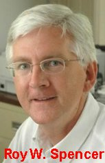
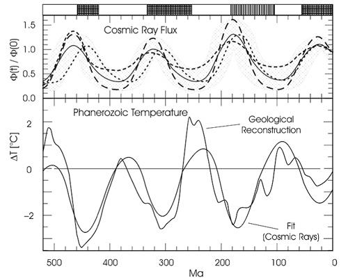
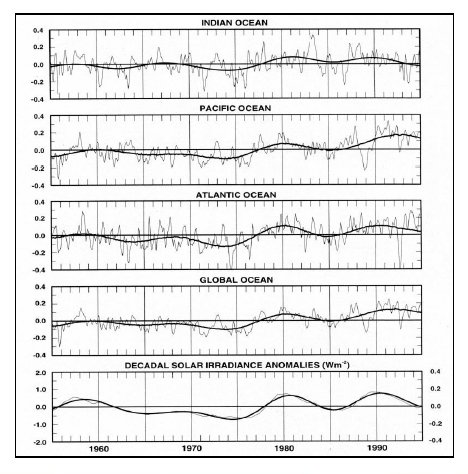
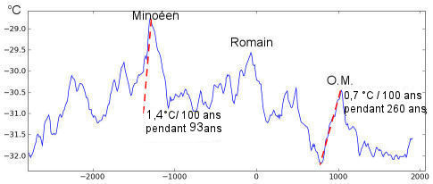
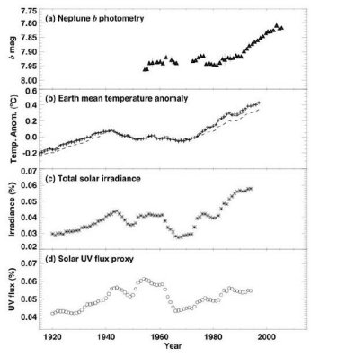
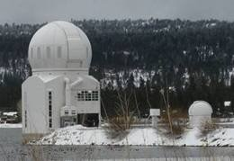
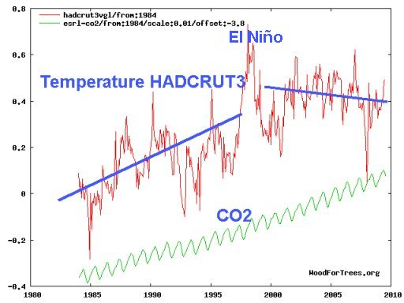
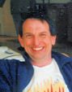
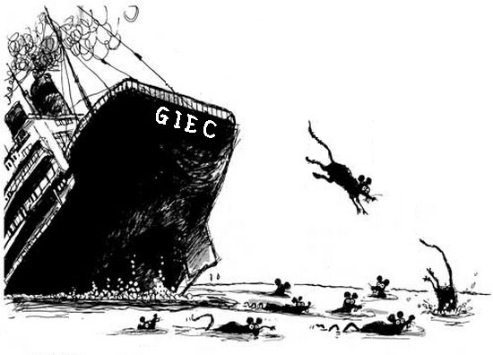

Le débat en cours sur le réchauffement climatique sous la loupe ... (derniers ajouts le 17/11/12)
Pardonnez moi de vous asséner quelques données chiffrées et quelques courbes mais tout cela est indispensable pour se faire une opinion personnelle sur ce que vous racontent les médias, l'Ex vice-président Al Gore (surnommé autrefois Mr Ozone par Georges Bush père), l'économiste Sir Stern, le chantre de TF1 Nicolas Hulot, greenpeace et les autres écologistes. Et aussi, pour vous dire ce que l'on ne vous dit jamais : c'est à dire la thèse des (nombreux) opposants aux précédents mais qui ne fait pas l'affaire des médias ni des politiques. Je vous expose en simplifiant, les deux théories qui font débat actuellement, en essayant de les déformer le moins possible, ce qui n'est pas facile vue la complexité du problème.
Bon! La température au sol de notre planète se réchauffe progressivement depuis au moins un siècle. Typiquement +0,7°C en 100 ans.Cela semble être un fait, aux erreurs de mesure près. Cela s'est déjà produit à plusieurs reprises dans l'histoire de la Terre mais les tenants de l'effet de serre affirment que cela résulte, cette fois-ci, de l'effet de serre provoqué par le CO2 résultant de l'industrie humaine. Ils proposent de limiter ou d'arrêter les émissions de ce gaz à effet de serre avec les conséquences que l'on imagine.
Pour leur part, les opposants à la théorie de l'effet de serre affirment que l'homme n'y est pour rien et que le réchauffement provient de causes parfaitement naturelles (dont ils donnent une explication), que des phénomènes identiques se sont déjà produit plusieurs fois au cours des millénaires passés. Ils ajoutent que limiter la production de CO2 n'aura aucune conséquence positive sur le climat mais que celle-ci peut être négative en limitant la croissance des végétaux et en nuisant à l'environnement. Vous le voyez, ils sont irréconciliables. Seuls les avancées actuelles et futures de la recherche ... (et le thermomètre !) pourront les mettre d'accord ! Regardez aussi à la fin de cette page : les thèses évoluent....
L'IOP, c'est à dire l'Institute of Physics anglais a organisé un séminaire le 7 Juin 2007 intitulé "Climate change prevision : a robust or flawed process", c'est à dire "Prévision du changement climatique : Démarche solide ou défaillante ?". Deux éminents scientifiques Richard Lindzen et T. Thorpe ont fait le point des connaissances actuelles, en défendant, respectivement, des thèses anti et pro-GIEC. Allez voir ce texte (en anglais) et faites vous une opinion ! Bravo les Anglais ! Il semble que nous soyons incapables d'organiser un tel débat en France ...
2006- Il faut dire que tout est problématique dans cette histoire de réchauffement climatique... Entre autres :
|
|||||||||||||||||||
|---|---|---|---|---|---|---|---|---|---|---|---|---|---|---|---|---|---|---|---|
Tout d'abord : Qu'est ce que l'effet de serre ? Il existe de multiples descriptions plus ou moins compliquées et, surtout, plus ou moins exactes de l'effet de serre. C'est (en apparence) très facile à comprendre : (voir les détails dans cette page)
Quels sont les gaz à effet de serre : Le plus important, c'est l'eau (H20 vapeur ou H20 nuages) qui représente entre 60% et 95% de l'effet de serre (selon les auteurs). Ensuite vient le fameux CO2, le gaz carbonique qui contribue entre 3% et 30% (selon les auteurs) et qui absorbe les rayonnements infrarouges de longueurs d'onde d'environ 4,3 et 15 microns. Viennent ensuite une série de gaz très efficaces pour l'effet de serre mais moins abondants : Le méthane (CH4), l'oxyde nitreux (N20), l'ozone (03) et quelques autres plus rares encore. Ces gaz à effets de serre ont tous des molécules (au moins) triatomiques. Cela est utile pour qu'elles puissent vibrer et tourner sur elles mêmes, ce qui leur confère des bandes d'absorption infra-rouges propres à générer l'effet de serre.. Pour de multiples raisons scientifico-écologico-politiques, la vapeur d'eau qui pourtant est, de très loin, le principal responsable de l'effet de serre, a été considére, non pas comme un acteur direct, mais comme un acteur secondaire (par rétroactions) par les tenants de l'effet de serre anthropique (cad créé par l'homme). Seul le CO2 est dans le collimateur. Intéressons nous à lui, en particulier. |
|||||||||||||||||||
2007- La thèse des partisans de l'effet de serre (tels Al Gore, Hulot, Stern, les écologistes, de nombreux membres du GIEC etc...) affirme que le CO2 émis par l'activité industrielle de l'homme est le responsable du réchauffement climatique et que ce dernier sera mauvais. Les média font du psittacisme (=répètent comme des perroquets) et les politiques suivent. Ils ont presque réussi à faire croire qu'il n'y avait plus de débat. Sur quoi se base leur certitude ? Commençons par le début : D'où vient le CO2 ? Quelques chiffres (source, entre autres, ici) généralement admis sur les différentes sources de CO2 et les échanges qui se produisent entre elles :
C'est à dire près de 42000 (GtC) milliards de tonnes de Carbone. Les échanges entre les différentes sources, cette fois ci en GtC par an :
C'est à dire un échange permanent de quelques 300 (GtC) milliards de tonnes de carbone par an. Soient quelques 3 GtC par an, avec une croissance de l'ordre de 0,3 pourcent par an, c'est à dire 0,009 GtC supplémentaire par an. Ainsi, voici où demeurent les incertitudes actuelles:
Au vu de ces difficultés et du très grand nombre d'inconnues qui restent à élucider, on comprend que les prévisions sur le futur de notre planète soient pour le moins hasardeuses (voir paroles de grands chercheurs). Les mathématiciens ou les physiciens sérieux diraient qu'il s'agit d'un énorme système d'équations différentielles à coefficients inconnus, non linéaires et couplées entre elles et donc très difficile à élucider (voir cette page sur les graves critiques de physiciens sur les modèles des climatologues). En plus, une partie est plus ou moins chaotique c'est à dire très sensible aux conditions initiales souvent inconnues. Il n'y a pas pire ! Pourtant, les programmeurs sur ordinateurs s'en donnent à coeur joie avec des milliers de paramètres inconnus et la forme des équations maîtresses qu'il faut essayer de deviner. Disons gentiment que, comme toujours, ils obtiennent des résultats mais le problème c'est que l'on peut faire évoluer a volo les résultats en changeant un seul des paramètres ou une seule des équations inconnues. Comment croire que les ordinateurs font une prédiction correcte alors que les mécanismes essentiels des échanges et des rétroactions (feedbacks) positives et négatives sont encore très mal comprises et font toujours l'objet d'âpres discussions entre les chimistes, les physiciens, les climatologues, les géophysiciens etc.? Ainsi pour un scientifique rigoureux et au niveau d'incertitude scientifique où nous nous trouvons actuellement, la croyance dans la véracité de telle ou telle prédiction d'ordinateur semble plus relever de la foi que de la certitude scientifique ! (voir ici une liste des dangers inhérents à la modélisation numérique). Sans compter que vu la multiplicité des méthodes de résolution possibles, les équations hasardeuses et le nombre de paramètres injectables, les résultats des simulations sur ordinateur sont très difficilement controlables par quiconque ne les a pas programmées lui-même. Bref, on nage et les partis-pris prennent le dessus, déclenchant des polémiques dont le niveau n'est pas celui que l'on pourrait attendre d'un grand débat scientifique et de scientifiques honnêtes et rigoureux. Pour leur part, les politiques et les écologistes choisissent les résultats qui leurs conviennent, mais ils ignorent tout des nombreuses incertitudes, des approximations et des problèmes que posent encore les méthodes qui ont été employées. Bref, ils sont dans l'incapacité totale d'apprécier la fiabilité des résultats qui leur sont communiqués et l'on ne saurait leur en vouloir au vu des difficultés du problème. La seule chose que l'on peut leur reprocher c'est leur trop grande crédulité et leurs affirmations péremptoires pour faire croire que tout cela est sûr et certain. Alors que ça ne l'est pas du tout ! Ceci étant bien compris, voyons maintenant quelques résultats de calculs sur ordinateur qui, selon les partisans de l'effet de serre du CO2, "prouvent" que l'homme est bien pour quelque chose dans le réchauffement climatique : Ci-contre un des multiples résultats de simulations numériques pour démontrer l'influence du CO2 introduit par l'homme dans l'atmosphère. (du NCAR/DOE parallel climate model). L'image ci-contre, à l'intention des politiques est à vocation pédagogique. Elle est facile à comprendre. En noir, la courbe représentant les températures mesurées en moyennant les résultats des mesures d'un grand nombre de thermomètres placés sur notre planète. En bleu (le flou représente les incertitudes), la courbe des températures calculées avec un modèle d'ordinateur qui introduit les effets du rayonnement solaire (le simple rayonnement ? voir plus bas) et de l'activité volcanique. En rose une courbe de variations de températures calculées en ajoutant à la précédente l'effet de l'augmentation du CO2 dans l'atmosphère (du fait des activités humaines pensent les auteurs) ainsi que les sulfates présents dans l'atmosphère. A noter que l'on néglige l'effet du méthane et des autres gaz à effet de serre (comme H20, le plus important de tous mais sur lequel on a peu ou pas de modèles). Comme vous allez le voir, les opposants à la théorie de l'effet de serre anthropogénique (produit par l'homme) donnent, eux, une explication basée sur la couverture nuageuse due à H20 et non pas sur l'effet de serre du CO2. Lorsque l'on voit le très bon accord de ces courbes, comme les participants du GIEC, les écologistes et les politiques et nombre de journalistes l'ont fait, on est prêt à jurer que cette explication est la bonne et qu'il n'y a pas à discuter." The debate is over" : Le débat est clos, comme dit Arnold Schwartzenegger le gouverneur de Californie qui n'est pas vraiment un connaisseur en simulations numériques. Malheureusement, ce faisant, les crédules ignorent totalement les grandes incertitudes de ces simulations numériques sur ordinateur qui peuvent prédire la même chose avec des jeux totalement différents de paramètres et d'équations. Autrement dit, et je suis très bien placé pour le savoir après 40 ans de pratique, le fait qu'une simulation numérique "marche", c'est à dire semble reproduire une courbe, ne donne absolument aucune garantie que cette solution soit la bonne et surtout qu'elle soit UNIQUE et qu'il n'y en ait pas d'autre. Et il peut y en avoir beaucoup d'autres, surtout avec autant d'inconnues et d'équations à la clef, qui donneraient des résultats tout aussi convaincants ! Bref, "comparaison n'est pas raison" dans ce domaine et, au cours de ma longue carrière, j'ai vu bien des simulations qui semblaient aussi convaincantes que celle-ci mais qui ne reflétaient absolument pas la vérité comme l'ont démontré les expériences réelles ultérieures ! Malgré toutes ces réticences que beaucoup connaissent mais dissimulent (il faut les comprendre, c'est leur gagne-pain !), certains (avec ou sans arrières-pensées), comme les membres politiques du GIEC (beaucoup moins pour les scientifiques !) font naïvement(?) confiance à ces calculs d'ordinateurs... Sans entrer dans les détails, on voit, du premier coup d'oeil que les différents modèles utilisés (A1B, A1T, B2 etc..) ne brillent pas pas leur cohérence. D'après eux, l'accroissement des températures peut ainsi aller de +1°C à +6°C ! Cela dépend, disent-ils du comportement humain imprévisible. Rien que cela devrait mettre la puce à l'oreille de nos crédules concitoyens. Si une telle fourchette d'erreur est possible, on se demande aussi comment il se fait que certains programmeurs n'aient pas aussi trouvé des abaissements de température ! Peut-être en ont-ils trouvés qu'ils n'ont pas publiés ? Ou alors, ils n'ont pas encore exploré toutes les différentes équations et les valeurs possibles des cinq millions de paramètres envisageables ? Il est vrai que s'ils avaient publiés des résultats indiquant une décroissance des températures leurs crédits de recherche auraient été immédiatement suspendus par les gouvernements. En effet et dans l'ambiance actuelle, pourquoi financer des recherches qui ne prévoient pas de catastrophes ? In cauda venenum, tous ces calculs sur ordinateurs sont extrêmement complexes, comme on s'en doute ! Ils ne peuvent être effectués que par des spécialistes de la programmation certes très qualifiés dans leur domaine mais qui ne sont pas, le plus souvent, des climatologues avertis.On touche ici à une difficulté récurrente en matière de simulation sur ordinateur : Il arrive le plus fréquemment (mais pas toujours, heureusement) et ne particulier pour des problèmes très complexes, que ceux qui mettent au point les programmes ne sont pas de spécialistes des sciences de l'observation. Il n'existe plus de Pic de la Mirandole (qui prétendait TOUT savoir). D'où un certains nombre de couacs ! Et pas seulement en matière de climatologie. C'est d'ailleurs une des explications que donnent les détracteurs de la crosse de hockey de Mann en rappelant que Mann n'était nullement un statisticien professionnel et qu'il a commis des erreurs de programmation, de ce fait. Pour vous faire toucher du doigt une des nombreuses et grandes difficultés auxquelles se heurtent les "projections" d'ordinateur, j'emprunte l' image suivante à A. Zichichi (le Président de la Fédération Mondiale des Scientifiques). Vous trouverez une citation de Zichichi ici dans laquelle il déclare que le climat est régi par un système d'équations différentielles couplées (couplage fort) insolubles. Ce en quoi, il rejoint exactement les conclusions du livre de Peixoto and Oort (Physics of climate, New York AIP, 1992) qui écrivaient " L'intégration d'un modèle fortement couplé incluant l'atmopshère, les océans, la Terre et la cryosphère avec des constantes de temps très différentes, présente des difficultés insurmontables même si on connaissait le détail des processus en interaction". C'est très précisément ce que disent Gerlich et Tscheuschner dans leur article de 2007. Antonio Zichichi se propose d'illustrer, très simplement, la grande sensibilité des modèles climatiques sur ordinateur aux rétroactions positives ou négatives de la planète vis à vis d'une variation de température telles que celle que nous connaissons actuellement et et comme celles qui se sonnt produite depuis la nuit des temps. Dans la formule ci-contre, très simple, qui nous indique que les variations de température sont extrêmement sensibles aux modèles de rétroactions choisis,
Si l'effet de serre du CO2 ne générait aucune rétroaction, l'élévation de température serait d'environ 1,2°C au maximum (dit-on). Si on considère les dernières projections du GIEC en matière d'élévation de température (entre 2,2 et 6°C), on observe, sur la courbe ci-contre, que cela indique que le GIEC a "supposé" qu'il existait une rétroaction positive comprise entre 0,45 et 0,8. Quand on connaît les immenses difficultés qui se présentent lorsque l'on cherche à comprendre le vaste et complexe système des rétroactions de la planète, on se dit qu'un tel choix de paramètres ne peut-être qu'au "doigt mouillé" comme disent les scientifiques, c'est à dire extrêmement incertain. D'ailleurs, il ne se passe pas de mois sans que l'on découvre que certaines rétroactions que l'on pensait positives se révèlent, en fait, négatives (autrement dit, refroidissent la planète et ne la réchauffent pas) , comme cela a été le cas, par exemple, pour les planctons ou pour l'effet des nuages cirrus (l'effet iris, à la fin ). _____________________________________________________________________________________________________________________ Mise à jour du 20 Juillet 2009 : Le Dr Roy Spencer est Directeur de Recherches sur les questions climatiques à l'Université de l'Alabama (Huntsville). Il a été chef de projet sur la recherche climatique à la NASA. Spécialiste des mesures satellitaires, il est le chef d'équipe du AMRS-E (Advanced Microwave Scanning Radiometer) monté à bord des satellites Aqua de la NASA. Il a co-développé les mesure satellitaires précises de la température des différentes parties de l'atmosphère. Il est le responsable des mesures de température de la basse atmosphère dites UAH que vous retrouverez à la page "indicateurs du climat". Spencer est bien connu des lecteurs de ce site (voir ici). Comment Fonctionnent les Modèles du Climat ? Roy Spencer (13 Juillet 2009) (source) Puisque la peur du réchauffement climatique anthropique ainsi que la mise en œuvre de lois ou de limitations des émissions de dioxyde de carbone, repose essentiellement sur les résultats de modèles du climat, il est important que le grand public comprenne les bases de ces modèles, comment ils fonctionnent et quelles en sont les limites. Les modèles du Climat sont des Programmes De manière générale, un modèle climatique est un programme d’ordinateur essentiellement constitué d’équations mathématiques. Ces équations décrivent, de manière quantitative, comment la température de l’atmosphère, la pression de l’air, les vents, la vapeur d’eau, les nuages et les précipitations répondent au réchauffement de la surface de la Terre et de l’atmosphère par le soleil. On y inclue aussi les équations qui décrivent comment les éléments de l’atmosphère dénommés à ‘effet de serre’ (essentiellement la vapeur d’eau, les nuages, le dioxyde de carbone et le méthane) conservent la chaleur de la basse atmosphère en constituant une ‘couverture’ radiative qui contrôle, en partie, la vitesse de refroidissement de la Terre par échappement de ses infrarouges vers l’espace lointain.... (Texte complet en pdf, ici) ____________________________________________________________________________________________________ En résumé, les projections par ordinateurs peuvent sans doute convaincre un profane, politique ou écologiste déjà convaincu mais certainement pas un scientifique expérimenté et sans parti pris : il n'est absolument pas prouvé par ces prévisions sur ordinateur que l'effet de serre donne la bonne explication. Même si le contraire n'est pas prouvé non plus, c'est évidemment le point faible N°1 des tenants de l'effet de serre anthropogénique sur lequel insistent les "climate skeptics" comme disent les américains....A ces doutes sérieux liés au fait qu'il ne s'agit pas de preuves mais des modèles d'ordinateurs peu fiables, s'ajoutent encore d'autres points faibles sur lesquels insistent aussi les opposants à l'effet de serre du CO2 :
|
|||||||||||||||||||
La thèse dominante de ceux qui ne croient pas à l'effet de serre dû au CO2 rejeté par l'homme Ne faisons pas durer le suspense. Disons le tout de suite : pour les opposants à la théorie de l'effet de serre, le grand responsable du réchauffement actuel (et aussi des réchauffements et des refroidissements passés), c'est tout simplement... le SOLEIL ! Et je vais vous expliquer pourquoi. Pour eux encore, le CO2 émis par l'homme n'a qu'une influence négligeable dans cette affaire ! Tout est de la faute aux éruptions solaires que vous voyez nettement sur l'image de droite comme des taches plus brillantes que le reste de l'astre. Vous ne pouvez évidemment les voir à l'oeil nu car cela vous brûlerait la rétine.
Voici, ci-contre, à droite, une illustration de ces pulsations. Nous achevons le cycle solaire 23 en ce mois de novembre 2007 et allons amorcer la remontée vers le cycle 24. La NASA hésite entre les deux prédictions (courbes en rouge) pour l'intensité du prochain cycle 24. Comme vous le verrez dans la suite, l'amplitude de ces cycles d'éruption solaire a une importance considérable pour déterminer le climat de notre planète. Vous pouvez actualiser ce graphe (mis à jour chaque fin de mois) en cliquant sur ce lien. Bien entendu et comme vous l'avez vu dans les paragraphes précédents, les tenants de l'effet de serre et des prévisions sur ordinateur n'ont pas oublié le rayonnement solaire. Ils ne le pourraient d'ailleurs pas, car le SOLEIL est pratiquement l'unique source de chaleur ! Et quand on veut faire des prévisions sur ordinateur, n'est-ce pas, on ne peut pas oublier la source des températures. Cependant, et d'après les modélisateurs précédents, les éruptions solaires que vous voyez sur l'image ci-contre et qui évoluent au cours des années ne peuvent expliquer, à elles seules et par simple variation de luminance, les variations de température que nous observons sur notre planète. Tout au plus, les tenants de l'effet de serre du CO2 anthropogénique, accordent-ils à leurs opposants un maigre effet de 0,3 Watt/m2 , à comparer avec les 2,4 Watts/m2 qui seraient dus à l'effet de serre de notre CO2, pensent-ils. Pour ce qui est de la luminance du SOLEIL, ce doit être exact si on s'en tient à la simple mesure des variations d'éclairement produit par notre astre qui respire comme je l'ai dit, tous les onze ans. Rien à objecter à cela et si les opposants n'avaient que cet argument dans leur besace, je ne me serais sûrement pas donné le mal d'écrire cet article pour vous ! Mais (bien sûr), il y a autre chose: Les chercheurs qui travaillent sur le rayonnement solaire (les astrophysiciens) ont fait bien d'autres observations que l'étude de la simple variation de l'ensoleillement de l'astre solaire et là, je dois dire qu'en tant que scientifique, les résultats m'ont impressionné, d'autant plus qu'il ne s'agit, cette fois-ci, aucunement de prévisions d'ordinateurs, mais bien d'observations expérimentales et de mesures incontestables et incontestées ! Plus moyen de critiquer de multiples jeux de paramètres ou d'équations. Cette fois-ci, ce sont de vraies preuves ! Comme vous allez le voir, le processus d'analyse à partir de faits, et uniquement de faits, et non point de résolutions d'équations alambiquées, ressemble tout à fait à une enquête de Sherlock Holmes. Le scénario est en trois étapes. Pour vous expliquer tout cela de manière aussi pédagogique que possible, je vais vous faire suivre pas à pas l'histoire des découvertes telles qu'elles ont été faites au cours de cette dernière dizaine d'années, jusqu'à maintenant. N'ayez pas peur, le raisonnement est facile à suivre et les évidences crèvent les yeux ! Allons-y ! Première étape : Observation de corrélation entre la durée des cycles solaires et la température du globe
A moins d'être aveugle, on voit que cela a bien l'air d'être le cas. A noter que l'échelle de droite est graduée en durée des cycles solaires magnétiques et l'échelle est inversée par rapport à la convention habituelle. La moyenne de ces cyles tourne autour de 22 ans qui est la durée classique des cycles de Hale. Cette durée est égale au double de celle des cycles bien connus de Schwabe qui, elle, est de 11 ans environ. Cela tient au fait que le soleil renverse sa polarité magnétique lors du passage d'un cycle solaire au suivant (voir, par exemple, ici) et que la polarité magnétique du soleil (et de la Terre) joue un rôle important, comme nous le verrons plus bas.
Addendum du 5 Mai 2010 : Des images, du même type que la précédente, de corrélation [température/durée des cycles solaires] ou de corrélation [extension des glaces/durée des cycles solaires] tirées d'une présentation Poster à la "Final ACSYS Science Conference, Arctic and Antarctic Research Institute, St. Petersburg," 11-14 November 2003. (merci au lecteur qui m'a communiqué cette référence)
Ligne rouge : anomalie de température par rapport à moyenne (1961-1990) au Nord du 62N (selon Polyakov 2001). les températures avant 1880 ne sont pas repérsentatives d'une moyenne circumpolaire. Ligne bleue : deviations par rapport à la durée moyenne du cyle solaire pendant la période 1961-1990 (10,6 années) lissées selon la méthode L121 indiquée dans http://web.dmi.dk. La correlation entre les deux lignes est de 0.93. Les échelles sont inversées comme dans le graphique précédent.
Fig. 6. Echelle de gauche et courbe bleue: Anomalie normalisée par rapport à la moyenne de l'extension de la glace de la Mer de Barents en août (1750-2000). Echelle de gauche et courbe rouge :
De fait,il ne s'agit pas, cette fois-ci, de corréler une seule montée de température avec une seule montée de concentration de CO2 comme l'ont fait les tenants de l'effet de serre, mais bien, plusieurs montées et descentes de température avec plusieurs augmentations et diminutions de la durée des cycles solaires en fonction du temps. Le test est beaucoup plus discriminant puisque la température à beaucoup varié en montées et en descentes durant ces périodes. Disons pour l'instant et pour rester prudent (Corrélation n'est pas raison !) que la coïncidence entre les températures et la durée des cycles solaire est impressionnante et n'est sans doute pas le fait du hasard. C'est très bien, mais comment expliquer cela ? se sont demandés les chercheurs qui travaillent dans ce domaine. A noter que ces observations sont totalement ignorées dans les rapport finaux du GIEC jusqu'à nos jours. Mais comme les évidences se sont affinées et les preuves accumulées depuis, ils doivent se faire bien du souci à l'ONU (qui est le responsable du GIEC) les partisans de l'effet de serre du CO2! Et cette relation profonde entre le rayonnement cosmique ionisant ne date pas d'aujourd'hui, loin de là. Mis à jour : Juillet 2011. Les résultats de Friis-Christensen et Lassen qui datent de 1991 ont été abondamment critiqués; jusqu'à être prétendus erronés, par les tenants de l'effet de serre. Ils ont pourtant été confirmés, quelques années plus tard, par deux chercheurs irlandais qui ont utilisé les données du Armagh Observatory, lequel présente la particularité de posséder une des bases de données de température les plus longues existantes à ce jour. Ces deux chercheurs ont publié leurs résultats en 1996 dans le JASTP : Journal of Atmospheric and Terrestrial Physics, Vol. 58, No. 15, pp. 1657-1672, 1996
Une autre étude de Jan Veizer (professeur de géochimie à Ottawa, Canada),cette fois, concerne des périodes très reculées de l'histoire. Lors de forages profonds, La proportion d'isotopes (Be10, Chlore36 et Carbone14) trouvés dans les carottes donnent une bonne indication de l'irradiation de la planète par les rayons cosmiques de haute énergie. D'autre part, la proportion des isotopes O16-O18 et la variation des faunes fossiles permettent d'estimer la température. Ci-contre les résultats absolument confondants de l'étude de Jan Veizer (réf : Veizer J. (2005), Celestial climate driver: A perspective from four billion years of the carbon cycle, Geoscience Canada, 32, 1, 13-28.) A voir l'excellente concordance des variations de le température terrestre avec l'irradiation ionisante, on comprend que Jan Veizer soit devenu très sceptique sur le rôle du CO2 dans le réchauffement climatique. Alors quoi ? Ce qui était vrai pendant 500 millions d'années ne serait plus vrai pendant notre petit siècle ? Les éruptions solaires ne concerneraient plus notre vieille Terre ? A noter un petit point historique très intéressant et qui parait un peu insolite sur cette question : L'idée que les éruptions solaires influencent le climat de notre Terre n'est pas nouvelle. Ainsi, en 1801, un astronome anglais, Sir William Herschel (le découvreur de la planète Uranus et du rayonnement infrarouge qu'il avait trouvé en plaçant un thermomètre derrière un prisme) avait remarqué que le prix du blé semblait directement contrôlé par le nombre de taches (éruptions) solaires qu'il observait avec son télescope (réf : Phil. Trans. Roy. Soc. London, 91, 265 (1801)). Il pensait que la couverture nuageuse était plus importante quand il y avait moins d'éruptions solaires et donc moins de blé, dont les prix montaient ! A noter, comme vous allez le voir, que William Herschel qui utilisait des moyens très réduits, avait un sens très profond de l'observation. Il avait déjà presque tout pressenti ! C'était un génie, sans doute bien meilleur que bien des climatologues d'aujourd'hui ! Voici exactement ce qu'il dit en 1801 ::“I am now much inclined to believe that openings [i.e., sunspots] with great shallows, ridges, nodules, and corrugations, instead of small indentations, may lead us to expect a copious emission of heat, and therefore mild seasons.” Autrement dit : "Je suis maintenant très enclin à penser que les taches (NDLR : les éruptions solaires) avec des bordures profondes, des nodules et des rayures, plutôt que de légères indentations, doivent nous conduire à attendre une copieuse émission de chaleur et donc à des saisons plus douces" . L'histoire raconte que la déclaration de William Herschel sur la corrélation entre le cours du blé et l'intensité des taches solaires, prononcée devant l'honorable Royal Society de Londres, déclencha une tempête de rires et qu'il fut contraint de quitter la salle sous les quolibets. Lord Brougham alla jusqu'à utiliser le qualificatif de "grand absurdity" pour qualifier cette hypothèse. Et pourtant, ce n'était pas du tout absurde comme allaient le montrer les recherches effectuées quelques 2 siècles plus tard. Ci contre, à droite, voici comment on observait les taches solaires au début du XVIIème siècle. En bref, Herschel pensait que les éruptions solaires jouent un rôle important pour déterminer la température terrestre. Le prix du blé n'est rien d'autre qu'un marqueur (un proxy comme disent les américains et, à l'époque, il n'y en avait pas d'autre). En matière de science, c'est ce que nous appelons un indice. Sans plus, car nous ne connaissions pas le détail des mécanismes et la bonne question c'était : Par quel processus ? Comment les taches solaires que Herschel observait pouvaient-elles bien influencer le climat de notre planète ? Tout le monde l'ignorait, bien entendu, et il fallut attendre 202 ans pour que les observations de Herschel soient vérifiées en détail et que des tentatives d'explications de la physique du phénomène apparaissent enfin et, aussi, que Lord Brougham "mange du corbeau" (toujours comme disent les américains, pour "reconnaître ses torts"). Plus près de nous mais toujours dans la série de grands précurseurs ou visionnaires, je ne peux manquer de vous citer une phrase particulièrement prophétique due à l'Abbé Théophile Moreux (photo ci-contre crédit). Elle figure à la page 64 de son oeuvre maîtresse, "Le Ciel et l'Univers" ( Gaston Doin et "...Tous ces phénomènes ( NDLR : résultant de l'activité solaire) ont une répercussion sur l'état d'ionisation de la haute atmosphère et retentissent sur notre climatologie. Les détails de cette action puissante nous échappent encore, mais les physiciens, n'en doutons pas, sauront un jour ou l'autre en démêler les lois, malgré quelques météorologistes attardés qui cherchent toujours en bas alors qu'il faut regarder plus haut." Théophile Moreux, 1928.
Pour leur part, plus récemment et en relation avec les observations de William Herschel ... Plus extraordinaire encore, ils ont analysés les variations du prix du blé aux Etats Unis entre 1900 et 2000 et ils ont encore trouvé une excellente corrélation avec les cycles solaires (référence accessible) et les hausses et les baisses du marché du blé. Cet aspect de la phénologie (cad l'étude de l'influence du climat sur la croissance des végétaux, mise en vedette par Emmanuel Leroy Ladurie, en particulier) est très intéressant. Une aussi éclatante corrélation (qui n'est pas raison !) ne peut être due au hasard. Elle devrait convaincre les partisans de l'effet de serre du CO2, que les éruptions solaires ont probablement une influence importante sur le climat par le biais de la couverture nuageuse, comme je vais vous l'expliquer ci-dessous.
Deuxième étape : La durée des cycles solaires influence la trajectoire des particules ionisantes émises de l'espace et atteignant la Terre. Tout d'abord, il nous faut comprendre ce qui se passe quand le soleil rentre en éruption, approximativement tous les onze ans, avec un variation lente de l'amplitude au cours des siècles. Je rappelle que nous sommes actuellement rentré dans une période de très intense activité des éruptions solaires.
Les deux courbes du haut de cette figure représentent le nombre des particules ionisantes qui parviennent sur Terre mesurées dans deux chambres de détection aux États Unis entre 1937 et 2000. Ces courbes ont été compilées par le Professeur Svensmark et son équipe de l'Institut de recherches spatiales danois à Copenhague. Les travaux que je vous expose ont été rapporté dans les meilleures revues internationales comme Physical Review Letters ( le gotha des physiciens !) et ne sont pas sujettes à caution. Ainsi cette courbe, d'origine expérimentale, ne peut être contestée. Le professeur Svensmark et son équipe confirment ainsi ce que l'on pensait déjà et qui résulte du phénomène suivant : Les éruptions solaires induisent des orages magnétiques qui dévient les particules ionisantes qui devraient normalement atteindre notre planète : Lorsque les éruptions sont brutales (cad de courte durée), le nombre des particules ionisantes qui atteignent notre planète est minimal : C'est tout simple et nul ne conteste ces faits ! Bon, c'est très bien tout cela, se disent les chercheurs. Mais que font donc ces particules ionisantes lorsqu'elles arrivent sur Terre et comment cela peut-il influencer la température de notre planète ? Pour être honnête, disons que de nombreux physiciens et astrophysiciens avaient déjà pressentis, comme le professeur Svensmark, ce que je vais vous raconter. Travaillant indépendamment aux quatre coins de la planète (au moins, aux USA en Israèl, au Japon et en Russie), ils étaient parvenus à la même conclusion : Les particules ionisantes doivent influencer la basse couverture nuageuse de la Terre et ainsi son ensoleillement et donc sa température. Encore fallait-il le prouver et expliquer par quel processus physique! Nous arrivons à la troisième étape : Troisième (et dernière) étape : Les particules ionisantes venues de l'espace, plus ou moins déviées par les éruptions solaires influencent grandement la couverture nuageuse de la Terre et donc sa température ! Le professeur Svensmark et son équipe Danoise ont alors lancé un projet de programme d'expériences auprès du CERN (Centre d'Etude et de Recherche Nucléaire de Genève). Ce programme appelé "Programme CLOUD" (cloud= nuage en anglais).Il s'agit d'une collaboration internationale impliquant pas moins de 60 scientifiques appartenant à 17 grandes institutions de la science provenant de 10 pays. L'investissement est évalué à 9 millions d'Euros : Ce n'est pas rien ! Le but de ce programme est d'établir le lien physique entre les radiations ionisantes venues de l'espace et la formation des nuages dans la troposphère de notre planète. Autrement dit, d'essayer de comprendre si et comment les particules ionisantes peuvent changer la couverture nuageuse de la Terre et donc modifier son ensoleillement et donc... sa température, ce que beaucoup persistent à nier...comme Lord Brougham en 1801 et le rapport du GIEC en 2007 ! Voici un exemple des résultats étonnants obtenu par l'équipe de Svensmark et rapporté en 2000 dans Physical Rev. Letters (une revue au dessus de tout soupçon). La courbe ci-dessous présentée par Henrik Svensmark lors d'une connférence en 2005 a été implémentée par les résultats obtenus entre 2000 et 2005 : Avouez que le recouvrement de la courbe rouge ( intensité des rayons cosmiques) et de la courbe bleue (taux de couverture nuageuse à basse altitude) est pour le moins confondante...
D'autre part, et plus récemment et pour en savoir plus, le professeur Svensmark et ses collaborateurs ont construit une grande chambre d'ionisation (une sorte de grande boite transparente) entourée d'une multitude d'instruments d'observation et remplie avec les gaz qui constituent la partie inférieure de l'atmosphère terrestre, avec les compositions variables des différents constituants (Azote, oxygène, H20, CO2, SO2, sulfates etc.). C'est le projet SKY (nuages en Danois). Ils ont ainsi réalisé, dans cette chambre d'ionisation, une petite atmosphère terrestre. Puis ils ont irradié l'ensemble avec des rayons lumineux identiques à ceux du soleil et avec des particules ionisantes identiques à celles qui sont générées par les rayons cosmiques et qui proviennent généralement des étoiles qui explosent en permanence et essentiellement dans la voie lactée. A la grande surprise des expérimentateurs et du professeur Svensmark lui-même, les résultats ont été d'une efficacité stupéfiante.Ils ont parus, sans tambour ni trompette, le 4 octobre 2006 dans les Proceedings of the Royal Society A, publiés par la Royal Society et l'Académie des Sciences Britannique qui est, bien entendu, une revue au dessus de tout soupçon. Les média, (s'ils sont au courant ?) n'en ont soufflé mot. Ils ont eu tort, car, de l'avis général, cette découverte représente une vraie nouveauté dans la connaissance du climat de la Terre, même si elle ne leur fait pas plaisir, parce qu'à elle seule, et dans la mesure où elle est confirmée, elle pourrait permettre d'expliquer en grande partie, si ce n'est la totalité des variations de température de la Terre, passée, présentes et futures ! ...sans l'effet de serre du CO2.
Voici une autre version de la superposition précédente parue dans Science (298, 1732 (2002)) ( KS Carslaw, RG Harrison et J. Kirkby). Notez que l'échelle des irradiances solaires est inversée, comme de bien entendu. RG Harrison est bien le même Regis Harrison de Reading qui est cité ci-dessous.
Les idées du professeur Svensmark, du Dr Shaviv en Israel et de quelques autres sur la planète, dont de nombreux chercheurs Russes sont finalement très simples : Lorsque l'activité solaire est très intense comme cela a été le cas à la findu siècle dernier, les orages magnétiques qui lui sont associés, dévient efficacement les particules qui normalement fabriqueraient des nuages à partir de la vapeur d'H2O présente dans l'atmosphère. Par un processus qui n'est pas encore totalement éclairci et sur lequel les débats vont bon train, l'ensoleillement résultant sur la Terre est plus intense et la Terre s'échauffe. En revanche, lorsque l'activité solaire est plus faible (comme en 2007-2008, voir ici), l'héliosphère devient plus transparente et les rayons ionisants parviennent, en plus grand nombre, jusqu'à l'atmosphère de notre planète provoquant ainsi un refroidissement qui résulte de l'augmentation de l'albedo des nuages.. D'ailleurs des mesures satellitaires ont confirmé ce point de vue, malheureusement pour une période assez courte (il n'y avait pas de satellites autrefois !). Bref, c'est simple à comprendre mais c'est révolutionnaire en matière de science des climats et... ce n'est évidemment pas inclus dans les simulations numériques des partisans de l'effet de serre anthropogénique ni dans les rapports du GIEC dont je vous ai parlé plus haut qui ne font intervenir que les faibles variations de luminance du soleil bien insuffisantes pour expliquer les variations actuelles. C'est vrai. Le temps (dans tous les sens du mot) nous dira qui a raison ! Il s'écoulera sûrement beaucoup de temps avant que les choses se clarifient et soient admises par tout le monde comme une évidence. C'est comme cela en Science : plus une découverte est révolutionnaire donc importante et va contre la Pensée Unique, plus elle met du temps à s'imposer. Par exemple, Alexander Fleming, le découvreur de la pénicilline (le premier antibiotique qui a sauvé des millions de vies humaines), a mis plus de 10 ans avant de faire admettre et produire sa découverte. Et encore, nous étions au début de la seconde guerre mondiale : la pénicilline devenait indispensable ! Vous trouverez ici un superbe petit film (40Mo) de l'équipe Svensmark, qui montre ce que l'on voit dans la chambre d'ionisation et vous explique le processus qui conduit de l'arrivée des rayons cosmiques générés par l'explosion d'une étoile à la formation des nuages sur notre Terre. J'en ai extrait quelques photos, que je vous livre avec quelques explications :
Ces expériences sur l'effet de radiations cosmiques en sont encore à leur début. Le projet CLOUD du CERN devrait voir son achèvement en 2010. Comme dans le projet SKY réalisé à petite échelle, Il s'agit de mettre en place une vaste chambre d'expérience remplie avec des gaz identiques à ceux de l'atmosphère et de l'irradier avec des particules de haute énergie identiques à celles qui nous viennent de l'espace. Il reste bien entendu à déterminer l'efficacité réelle en terme de variations de températures dû à cet effet encore que beaucoup pensent que cet effet des rayons cosmiques pourrait suffire, à lui seul, à expliquer les variations de températures présentes et passées (telles que celles du petit âge glaciaire et de l'optimum médiéval). Pour donner un ordre de grandeur, disons qu'un chercheur russe affirme (sans que je puisse le certifier) qu'une variation de 1% de l'ennuagement sur la planète induirait une variation de 4°C sur la surface de la planète. Comme nous en sommes actuellement à +0,6°C d'après l'OMM, il aurait donc suffi que l'ennuagement ait varié de 1,5 pour 1000 pour expliquer le fameux réchauffement climatique. De tout cela, Les médias n'ont jamais parlé ! Vous le voyez, comme c'est souvent le cas en matière scientifique et surtout pour un sujet aussi chaud que le réchauffement planétaire, cette histoire n'est pas terminée. Même si certains disent que "les sceptiques sur l'effet de serre nous font perdre du temps" comme Kofi Anann, les recherches se poursuivent quoiqu'il arrive et au grand dam de ceux qui nous disent que l'affaire est entendue. Il existe aussi d'autres théories pour expliquer le réchauffement climatique ou plutôt les variations (plus ou moins naturelles ?) de la température de notre planète au cours des âges. Je ne vous ai décrit que les deux théories qui tiennent le haut du pavé en ce moment : celle des tenants de l'effet de serre due au CO2 généré par l'homme (endossée de manière exclusive par le GIEC et largement médiatisée) et celle (encore dans l'ombre) liée aux éruptions solaires particulièrement actives en ce moment....Mais pourquoi nous cache t-on tout cela ? Pour que nous fassions des économies d'énergie fossile ? Nous sommes assez intelligents pour bien agir sans que l'on nous dissimule les débats scientifiques, non ? Notes added in proof (comme disent les chercheurs à la fin d'un article. Cad "notes qui confirment l'article" ) sur cette hypothèse d'effet des rayons ionisants sur les climat terrestre : Tout récemment (en 2006), deux chercheurs de l'Université de Reading ( Regis G. Harrison et David .B. Stephenson, UK) ont eu une idée intéressante. Ils ont rassemblé toutes les données disponibles sur les taux d'ennuagement (en fait, ils ont utilisé le facteur de diffusion de la lumière solaire par les nuages) présents au dessus de l'Angleterre depuis 1947 jusqu'en 2004. Ces données sont soigneusement conservées dans les archives des stations météorologiques et ceci, jour après jour. Le résultat de cette confrontation, analysée avec beaucoup de soin, montre que l'intensité des rayons cosmiques est indubitablement corrélée au taux d'ennuagement, exactement comme l'avaient prévu Svensmark et d'autres avant lui, comme William Herschel et Edward Ney. Les résultats, très encourageants pour les tenants de la théorie du réchauffement de la planète par les éruptions solaires, ont été publiés en avril 2006 (Proc. Royal Society series A, issue 2068, p1221-1223, 04/2006) et ...ils ont évidemment été superbement ignorés par les médias et les "experts" du GIEC (dans leur rapport de février 2007)...qui ne croient pas aux preuves expérimentales et qui préfèrent faire confiance aux prophéties d'ordinateur ... Car il s'agit ici d'évidences expérimentales indiscutables qui ne dépendent ni des hypothèses ni des paramètres inconnus, ni des méthodes de calcul. Ce sont des faits, purs et simples. Dans le même esprit, deux chercheurs Indiens, Subarna Bhattacharyya et Roddam Narasimha (Journal of Geophysical Research, vol. 112, D24103, doi:10.1029/2006JD008353, 2007) ont étudié les possibles corrélations entre la mousson indienne et l'activité solaire et ceci au plan régional c'est à dire avec une grille de pas assez fin. La corrélation est extraordinairement nette (99,5% de confiance), ce qui démontre une fois de plus le lien direct entre l'activité solaire et l'ennuagement conformément à la théorie de Svensmark et al, et qui corrobore les observations précédentes de Regis Harrison et David Stephenson. Et enfin, dans le même ordre d'idée, une étude récente (parue le 2 Juin 2007, dans le Journal of South African Intitution of Civil Engineering) sur la corrélation absolument frappante qui existe entre les quantités de pluies en Afrique du Sud et les éruptions solaires. Les auteurs ( WJR Alexander, F. Bailey, DB Bredenkamp, A van der Merwe et N Willemse) ont rassemblé les données hydrométéorologiques collectées en Afrique du Sud, jour après jour, par les quelques 500000 stations réparties dans le pays et ceci pendant les 150 dernières années.
En noir, le niveau naturel du lac Victoria. En rouge, la courbe qui donne le nombre de taches solaires (autrement dit le nombre d'éruptions solaires) pendant la même période. Le moins que l'on puisse dire, c'est que cette corrélation ne peut être le fruit du hasard ! Cela rejoint, en plus clair encore, les résultats précédents des mesures que Harrison et Stephenson ont récemment effectuées pour le Royaume Uni. Vous trouverez l'article ici (en pdf et en anglais, bien sûr). Avouons que comme corrélation, c'est tout autre chose que de voir deux courbes croître de manière monotone comme le fait le GIEC avec le taux de CO2 et la température et d'en déduire une corrélation! Les auteurs de cet article, tous experts dans ce domaine, recommandent d'ailleurs aux autorités de leur pays de prendre en compte ces résultats pour la gestion de l'eau qui est un problème crucial en Afrique du Sud. Ils ajoutent, mi-figue mi-raisin qu'ils n'ont trouvé aucune corrélation avec le taux de CO2 présent dans l'atmosphère ! A noter que ces auteurs ne semblent pas connaître les travaux récents de Svensmark et Nir Shaviv sur ce sujet, puisqu'ils ne les citent pas dans leur bibliographie. Non plus que les résultats de Harrison (UK)ou Hiremath (Inde), ni ceux des chercheurs du CALTECH sur le niveau du Nil, ce qui n'enlève rien au mérite de leur découverte. Bien au contraire. A noter, pour être équitable, qu'Edward Ney avait suggéré, lui aussi, en 1959 et après une série d'expériences qu'un tel mécanisme devait exister. En cela, il reprenait fidèlement les idées du brave William Herschel en 1801. Comme c'est souvent le cas en Science, une idée émerge quelque part, puis elle est délaissée jusqu'à ce qu'elle soit reprise par quelqu'un d'autre. Elle peut être délaissée là encore et ainsi de suite jusqu'à que les choses arrivent à maturité... Cela peut prendre plusieurs siècles ! La Science est comme la Justice : Elle avance très lentement et pas à pas, pour éviter de se tromper ! Et puis, il faut souvent attendre que les progrès techniques aient permis la mise au point de méthodes plus sophistiquées pour résoudre les problèmes... Et voici encore un résultat récent montrant une corrélation manifeste sur près de 1000 ans d'histoire entre l'intensité des rayons cosmiques et la température terrestre.Il s'agit d'une étude menée par deux chercheurs japonais (Kasaba et Tokashima, Congrès de l'American Geophysical Union) qui ont prélevé des carottes sur de très vieux arbres (certains avaient 1400 ans !) pour en étudier la proportion de carbone 14. Il se trouve que le C14 qui est un isotope du carbone naturel (C12) est uniquement produit par les radiations cosmiques. Nos deux chercheurs japonais ont donc tracé une courbe donnant l'intensité des radiations cosmiques (mesurée par la concentration de carbone 14 par rapport à la concentration de C12), en fonction du temps ( mesuré en comptant le nombre des anneaux de croissance). Autrement dit, ils ont utilisé le proxy "C14 dans les anneaux des arbres" pour analyser la proportion de rayons cosmiques depuis plus de mille ans. Ce faisant, ils ont obtenu la courbe ci-contre qui est proprement époustouflante ! En effet, on retrouve parfaitement, de l'an 900 à nos jours, la courbe des températures bien connue avec l'optimum médiéval ( la période chaude, vers 1200, donc pauvre en rayons cosmiques arrivant sur la Terre), la période froide correspondant aux minimas de Wolf, Sporer et Maunder (vers 1700), donc riches en rayons cosmiques impactant la Terre etc. La partie droite de la courbe correspond au relâchement du C14 par suite de la combustion des énergies fossiles dès le début de l'ère industrielle. Tout cela est parfaitement cohérent avec les idées de William Hershell, de Ney, de Svensmark, de Shaviv, etc... et ne peut pas être nié. Il apparaît donc bien que la température terrestre, du moins pour les mille ans qui ont précédé l'année 1900, ait été totalement déterminée par la proportion des radiations cosmiques venant de l'univers interstellaire et modulée par les éruptions solaires...Or nous vivons une période particulièrement riche en éruptions solaires qui dévient et donc atténuent le rayonnement cosmique parvenant sur notre planète provoquant sans doute une diminution de son ennuagement et donc son réchauffement....Alors, pourquoi le GIEC s'obstine t'il à nier cette possibilité ??? En quoi est-il naïf et irresponsable (ce sont les mot qu'avaient utilisé son président) de se fier à des découvertes aussi frappantes ? Est ce une "grand absurdity" comme avait dit lord Brougham en 1801, qui, bien entendu, ignorait tout cela ? 07/06/08. Voulez-vous encore une démonstration de cette belle corrélation entre les cycles solaires et la température terrestre ? Dirigeons nous vers l'observatoire d'Armagh en Irlande (Ulster) qui a conservé des archives qui remontent très loin dans le temps, depuis un peu avant 1800 pour être précis. Les gens d'Armagh ont réutilisé la technique de Labitzke-Pekarek citée plus haut. Voici ce qu'ils ont trouvé, à partir de leur base de données locales. En ordonnée la durée des cycles solaires (en années). Notez que l'échelle est représentée avec les cycles longs vers le bas. En abscisse, les dates. Les points représentent les données de températures relevées à Armagh depuis 1800.
Ici encore, il faut être aveugle pour ne pas voir que la température a augmenté nettement lorsque les cycles solaires étaient courts ce qui correspond à une activité éruptive d'intensité accrue et donc, à un ensoleillement plus important sans doute parce qu'il y a moins de nuages si l'on en croit la théorie de Svensmark. (Source)
J'en connais certains, adeptes de Real-Climate, qui persistent à penser, qu'il n'y a là rien d'autre que de simples coïncidences.. Alors, tout spécialement pour eux, permettez-moi d'insister... Voici la courbe en question : Ce graphe rapporte le taux d'isotope C14 que l'on trouvait dans l'atmosphère au cours des années indiquées en abscisse. Ce travail est donc très proche mais indépendant de celui des deux Japonais cités ci-dessus. A noter que celui-ci commence en 800, les données des Japonais en 1000. Les courbes sont remarquablement proches. Comme dans le cas précédent, il faut se souvenir que l'optimum médiéval (800-1300) était une époque remarquablement chaude tandis que le petit âge glaciaire (1400-1800) était, lui, remarquablement froid. Et comme d'habitude, la période chaude (médiévale) correspond à une chute considérable du rayonnement cosmique sur le planète, tandis qu'on observe l'inverse pour le petit âge glaciaire (Je vous le rappelle : plus de rayons cosmiques = moins d'ensoleillement = plus froid) et il est prouvé (pas seulement à 90% !) que les rayons cosmiques sont moins déviés de leur trajectoire pendant les périodes calmes du soleil... Enfin, l'article très récent (2008) suivant : Raspopov, O.M., Dergachev, V.A., Esper, J., Kozyreva, O.V., Frank, D., Ogurtsov, M., Kolstrom, T. and Shao, X. (2008. The influence of the de Vries (~200-year) solar cycle on climate variations: Results from the Central Asian Mountains and their global link. Palaeogeography, Palaeoclimatology, Palaeoecology 259: 6-16.) trouve encore la même chose. Quelle coïncidence ! De même l'article de , A. V. Dergachev, T. Kolström, A. V. Kuzmin, E. V. Lopatin, and O. V. Lisitsyna (2007), Long-term solar activity variations as a stimulator of abrupt climate change, Russ. J. Earth Sci., 9, ES3002, doi:10.2205/2007ES000250. traduction accessible ici, trouve des corrélations nettes entre les changements climatiques et les cycles solaires durant l'holocène (- 9000 ans à nos jours) ________________________________________________________________________________________________________________ Et voici encore un clou dans le cercueil de la théorie de ceux qui ne veulent pas croire à la corrélation manifeste entre les cycles solaires et le climat de la planète : Il s'agit du résultat du travail de cinq chercheurs suisses et allemands U. Neff, S. J. Burns, A. Mangini, M. Mudelsee, D. Fleitmann et A. Matterqui, en 2001, ont publié une lettre dans Nature (411:290-293), sous le titre "Forte corrélation entre la variabilité solaire et la mousson d'Oman d'il ya 6000 à 9000 ans." les résultats de ses recherches sur une stalagmite prélevée dans une grotte en Oman (Arabie). Le C14, présent sur notre planète est un isotope du carbone ordinaire (le C12). Le C14 présente la particularité de n'être produit que par le rayonnement cosmique qui atteint notre planète. Le C14 est donc le marqueur favori de ceux qui cherchent à connaître les fluctuations liés aux cycles éruptifs de notre astre solaire au cours des âges, sans que nous ayons accès aux observations directes des taches solaires de ces époques reculées...
La figure du haut récapitule l'ensemble du spectre (en bas l'O18, en haut le C14) obtenu pour la période étudiée. En abscisse sont reportées les années en kyr BP, ce qui signifie en unités de 1000 ans avant notre époque (kiloyear before present) Le graphique du bas est obtenu avec une meilleure résolution pour la période 7900 à 8350 années avant notre époque. On peut, sur ce diagramme, observer, presque année après année, l'excellente corrélation qui a existé entre le flux cosmique du soleil et les données climatiques qui régnaient alors sur la Terre... Certains continuent encore à nier toutes ces évidences expérimentales en prétendant qu'il ne s'agit que de "coïncidences" fortuites ...et continuent à prétendre que les fluctuations du soleil n'influent pas sur le climat. Je pense que ce seul graphique,( mais aussi tous les autres qui sont pourtant d'origines très diverses), montre à quel point, la foi exagérée dans les modèles informatiques de l'effet de serre du GIEC , peuvent conduire certains de nos contemporains jusqu'à l'aveuglement le plus total. C'est le cas des responsables du GIEC. A mon avis, ils ne pourront pas continuer encore longtemps à "oublier" l'effet des radiations cosmiques sur le climat. Les scientifiques disent "les faits sont têtus". On en peut pas se tromper très longtemps...
Pour conclure (provisoirement) cette longue litanie des effets des fluctuations de l'astre solaire sur le climat de la planète, voici le résultat d'un travail tout à fait étonnant, publié par quatre chercheurs américains White W.B., Lean J., Cayan D.R. et Dettiger M.D. en 1997 (Journal of Geophysical research 102; 3255). Ces derniers ont cherché à savoir s'il existait une corrélation entre l'évolution de la température des océans et les variations de l'irradiance solaire. Comme vous le savez sans doute, l'irradiation solaire (la lumière émise) est d'intensité particulièrement stable puisque l'on s'accorde à lui attribuer généreusement une oscillation, (ou fluctuation) de l'ordre de 0,1%. Cette fluctuation naturelle apparaît correspondre aux fameux cycles de 11 ans des éruptions solaires. Sur les 1360 watt/m2 émis, cela représente pourtant environ 1,3watt/m2 et se trouve donc de l'ordre de grandeur de l'effet du CO2, selon certains. Cependant, Il est vrai que seule une fraction de cette énergie solaire parvient sur Terre, parce que le reste est absorbé dans l'atmosphère. Quoiqu'il en soit, le GIEC termine tous ses rapports en déclarant que les variations d'irradiances solaires sont bien trop faibles pour expliquer le réchauffement actuel de la planète... En bas, l'irradiance solaire ( en Watt/m2) mesurée et lissée pour la période 1955-1996.. Les quatre courbes supérieures indiquent la température des quatre principaux océans de la planète pendant la même période. Les fluctuations des températures de ces océans ont été moyennées et ceci est indiqué par les courbes continues en noir sur ce graphique. Si vous ne retrouvez pas l'image des fluctuations solaires dans les quatre courbes des températures des océans, c'est que vous avez mal regardé : La corrélation est évidente ! Il est difficile de la nier. Cela montre indubitablement que le flux issu de l'astre solaire joue un rôle essentiel pour déterminer la température des océans, même si ses variations sont extrêmement faibles, elles sont pourtant tout à fait efficaces ! Pour enfoncer le clou, s'il en était encore besoin, voici une figure extraite d'un article récent( source) de Willie W.H. Soon de l'Harvard-Smithsonian Center for Astrophysics, Cambridge Massachusetts, USA). La référence de cet article est : Geophys. Research Letters, vol 32, L16712, 2005 :
Les courbes en pointillé représentent les anomalies de la température de l'air à la surface du cercle Arctique depuis 1880 jusqu'en 2000. Sur la figure du haut, la courbe en trait noir épais représente les variations de la TSI, c'est à dire de l'irradiance solaire totale (Total Solar Irradiance) (voir la page des grands indicateurs du climat) pendant la même période. Comme je viens de vous le dire dans les paragraphes précédents, on sait que les variations de cette irradiance, bien que faibles, sont étroitement corrélées aux cycles solaires. La superposition de ces deux courbes est étonnante. Elle représente une autre vision de celle qu'avait trouvé Pekarek en 2001 et que je cite plus haut.
Pour la même période, les courbes du bas montrent la mauvaise corrélation qui existe entre le taux de CO2 ( courbe en trait épais noir) dans l'atmosphère et la même courbe de température que la précédente. Willie Soon a étudié en détail la statistique de la corrélation entre ces courbes en utilisant la méthode des ondelettes. Ses résultats ne font que confirmer ce que nous voyons : Les variations solaires se corrèlent beaucoup mieux avec les températures que le taux de CO2 dans l'atmopshère...
Cet article concerne une étude détaillée de la corrélation entre le flux ( d'eau) d'un des plus grands fleuves du monde et l'activité solaire de 1920 à 2000. Il s'agit du fleuve Parana qui se trouve dans la partie Sud-Est de l'Amérique du Sud. La courbe en traits pleins noirs représente le flux du fleuve Parana. La courbe en tiretés représente la nombre de taches solaires. La courbe en pointillés représente la courbe de la TSI (Total solar irradiance qui, comme on le sait, est assez proche de celle des taches solaires) Les unités en ordonnées sont évidemment arbitraires. Ces courbe sont été obtenues en faisant une moyenne glissante de 11 ans pour lisser les cycles solaires individuels. Le coefficient de corrélation de Pearson entre le flux du fleuve et l'activité solaire est de r=0,78 ce qui est remarquable et confirme l'excellente corrélation déjà perceptible à l'oeil. A noter que les auteurs ont aussi observé des corrélations remarquables avec les variations du champ magnétique terrestre qui est lui-même corrélé au vent solaire et donc aux effets des rayons cosmiques galactiques (GCR), dans l'esprit des travaux récents (2007) de Vincent Courtillot et al. Et en effet, la corrélation est (une fois de plus) stupéfiante... Il est important de remarquer que le signe de la corrélation (augmentation de l'activité solaire -> augmentation du flux du fleuve) est conforme à celui trouvé par trois groupes d'auteurs, pour les moussons asiatiques. Dans la revue Science du 7 Nov. 2008 ( Vol 322, N°5903, pp 940-942) est paru un article intitulé " Test de la relation Climat-Soleil-Culture à partir des données sur 1810 années provenant d'une grotte Chinoise". Il est de Pingzhong Zhang et al. Les auteurs viennent de diverses universités et centres de recherches chinois et américain. Cette étude est financée par la NSF et diverses institutions chinoises,. Les chercheurs ont analysé les isotopes contenus dans un morceau de stalagmite d'un mètre cinquante de longueur provenant d'une grotte de Wanxiang (Nord de la Chine). Cette stalagmite a enregistré au cours des années, des informations sur la mousson asiatique (AM). Les collègues de cette équipe ne cachent pas leur admiration pour cette découverte qui, selon Richard Kerr, le chroniqueur de Science (source), "fournit la preuve la plus décisive, à ce jour, pour un lien entre le climat, le soleil et la Culture " (NDLR : Il n'a pas dû lire les articles précédents mais c'est un grand pas en avant pour cette revue et pour Richard Kerr) . La technique utilisée est classique. Une proportion notable de sels d'Uranium et de Thorium ont permis une datation précise ( à 2,5 ans près !) des couches déposées. Comme a l'accoutumée pour les stalagmites, c'est l'isotope 18 de l'oxygène qui a servi analyser les quantités de pluie en fonction du temps. A ce sujet, Gerald Hau, paléoclimatologue Suisse qui ne tarit pas d'éloge dit " Je pense que c'est un des plus beaux articles que j'ai vu depuis longtemps". Il ajoute " Ils ont littéralement enregistré l'histoire de la pluie sur le Nord de la Chine depuis 1800 ans".
Voici les courbes maîtresses de l'article en question qui concerne la période allant de l'an 200 de notre ère à l'année 2000. Les trois courbes en vert (identiques) résultent des mesures exposées dans cet article. Les coïncidences avec d'autres mesures (avance-recul des glaciers et soleil) sont indiquées par les courbes superposées et de couleurs différentes. On relève : Courbe A) En rouge, L'indice des périodes de sécheresses et d'inondations plus anciennes, relevées à 150 km au nord de la grotte de Wanxiang (à LongXi). Les sécheresses pointent vers le haut. Les zones jaunes résultent d'autres mesures identiques faites à LongXi. Courbe B) Avance et recul des glaciers alpins suisses (Gorner (bleu foncé) et Grindelwald (bleu clair)) Courbe C) Irradiance solaire à partir des analyses des isotopes 10 du Béryllium et du carbone 14 (Musheler 2007)
Comme on peut le voir, ces graphiques obtenus à partir de mesures effectuées en Chine et dans les Alpes suisses, mettent en évidence aussi bien l'Optimum médiéval ( vers l'an 1000) que le petit âge glaciaire (1300-1700). Autant dire, comme on le sait déjà, que le graphique en crosse de hockey de Michael Mann est carrément démenti par ces résultats, tout comme son argument qui consistait à dire que l'optimum médiéval n'avait concerné que la zone Nord-Atlantique (ce qu'il ne pouvait démentir à cause de l'histoire bien documentée de cette région). Ceci est confirmé par la Fig 3 de l'article qui établit une comparaison entre les différentes reconstructions des températures, par modèles et dendrochronologie. La figure 3 montre que la crosse de hockey surestime grandement ( d'un facteur 2, au moins) les températures du 20ème siècle et atténue l'optimum médiéval. Il montre aussi, contrairement aux affirmations de Mann et al, que les températures actuelles n'excèdent pas celles de l'optimum médiéval. Ces graphiques montrent aussi de manière frappante, et une fois de plus, la corrélation étroite qui existe entre l'irradiance solaire (et donc les cycles solaires) avec le climat et ceci, jusqu'en l'an 2000, bien que les auteurs complètent leur article par la fameuse "petite phrase magique" (comme signalé par Lindzen et illustré par 3 exemples ici) qui déclare que cela ne marcherait que jusqu'en 1960 (parce que ça diverge des modèles informatiques (!)... et c'est assez étonnant : en général on dit 1980)... parce que l'effet du CO2 pourrait avoir pris le dessus sur le forçage solaire. Parbleu, il faut bien parvenir à se faire publier dans Sciences et ne pas se couper des crédits de la National Science Foundation qui a financé cette étude...Dans cet esprit, je me demande comment ils vont faire pour écrire une "petite phrase magique" pour justifier la période 1998-2008 où la température globale est restée stable ou a diminué alors que le taux de CO2 augmentait à grande vitesse... Tandis que l'activité solaire, elle, diminuait,... comme il se doit. (voir indicateurs); ça va être dur ! _____________________________________________________________________________________________________________________ 27 Déc. 2008 : Robert V. Baker est professeur associé à la Division de Géographie de l'Université de Nouvelle Angleterre en Australie. Il vient de publier un article particulièrement détaillé sur les corrélations entre les cycles solaires et les fluctuations du SOI ( Indice des oscillations Sud) de l'Est de l'Australie. Cet article est intitulé "Analyse exploratoire des similarités entre les phases magnétiques des cycles solaires et des fluctuations du SOI, dans l'Est de l'Australie". Il a été publié en Décembre 2008 dans la revue (peer-reviewée) Geographical Research 46(4), 380-398, Déc 2008. Malheureusement pour les lecteurs non universitaires, cet article n'est pas en accès libre (il est payant) mais plusieurs revues en ont porté témoignage. (source) L'indice quasi-périodique SOI mesure le différentiel de pression atmosphérique au niveau de la mer entre Tahiti et Darwin. Cet indice est déterminant pour les sécheresses et les fortes pluies qui affectent périodiquement l'Australie, l'Inde, l'Amérique du Sud ainsi que l'Afrique. Il concerne dont essentiellement l'hémisphère Sud de notre planète. L'analyse de Robert V. Baker est basée sur les différents cycles du soleil construits autour du cycle bien connu de Schwabe (périodicité 11 ans, environ). Baker envisage les interactions entre le champ magnétique lié aux éruptions solaires et le champ magnétique terrestre. Comme on le sait, le champ magnétique solaire résultant des éruptions solaires s'inverse lors du passage d'un cycle solaire au suivant. Ainsi, tous les 22 ans environ, le champ magnétique solaire se trouve être de même sens que le champ magnétique terrestre ou de sens opposé à celui-ci pour le cycle de schwabe suivant. Cette périodicité de 22 ans, déjà mentionnée par Alexander (voir ci-dessus) et d'autres, est connue sous le nom de cycle de Hale. Elle fait donc intervenir la parité du numéro du cycle. De plus, la succession de 4 cycles de Hale conduit aux cycles de Gleissberg dont la périodicité est donc d'environ 88 ans. Le sens relatif des champs magnétiques solaire et terrestre a une grande importance pour la déviation des particules ionisantes propres à la fécondation des nuages, selon la théorie de Svensmark. Robert Baker étudie en détail les corrélations SOI-(croissances ou décroissances des cycles), lors des différentes phases des éruptions solaires connues sous les noms alpha, beta, khappa, gamma et omega et plus spécifiquement les phases dites SPP (Sun's south pole positive) qui se reproduisent tous les 22 ans, selon les cycles de Hale. Les données SOI sont connues avec précision depuis 1876 ce qui permet une analyse fine des corrélations sur une assez longue durée. Baker étudie également l'influence des cycles de Gleissberg. Compte tenu de la complexité de cet article, il est impossible d'en donner un compte rendu détaillé ici, mais ce qu'il faut retenir c'est la règle simple énoncée par Baker pour la prévision du SOI (et donc des périodes de sécheresses ou de fortes pluies) en conclusion de cette étude extensive. Le texte anglais de Baker est assez obscur : " An underlying ‘rule of thumb’ for SOI prediction is that the greater the positive (or negative) rate of change in sunspots and associated field activity, the more likely there will be positive (or negative) SOI fluctuations (and similarly for negative changes)". Baker affirme qu'il a entrepris ces recherches dans un but prévisionnel. Cependant, il n'ignore pas les implications de ses résultats sur le débat actuel sur le réchauffement climatique. Voici ce qu'il a déclaré à ce sujet (source) : "Nous devons mettre au banc d'essai le système naturel ( c'est à dire avec le soleil) avant de chercher l'effet des additions ( par exemple avec le CO2)" déclare Baker "Comparer les données actuelles avec les celles du siècle précédent peut nous donner une idée de l'effet de l'ajout des gaz à effet de serre. Mais enfouir sa tête dans le sable en affirmant que le soleil n'a aucun effet sur le changement climatique représente un déni virtuel de la réalité historique." (caractères gras du traducteur). On en peut mieux dire ! Le 22 décembre 2008, (source) Robert Baker ajoute aussi quelques commentaires intéressants sur l'arrêt prolongé de l'activité solaire en cette fin du cycle 23 : "La période du minimum des taches solaires qui marque la fin du cycle 23, dont la fin était prévue pour octobre 2007, se poursuit. En fait, nous pourrions entrer dans une période prolongée d'activité solaire minimale comme celle qui a conduit aux "sécheresses de la Fédération" ( NDT de l'Australie) au tournant du XXème siècle, avec un abaissement à venir des températures pour une décennie. " (conformément à cette page) Note : Les lecteurs attentifs auront certainement remarqué que le graphique de Al Pekarek (ci-dessus) qui établit une corrélation entre les températures de l'hémisphère Nord et les durées des cycles solaires, montre que la température augmente quand les cycles sont de courte durée. Alexander et Baker trouvent que ces cycles intenses et de courtes durées entraînent des périodes pluvieuse, ce qui peut paraître troublant si on se souvient du modèle de Svensmark. En réalité, il est patent que les périodes de refroidissement des océans conduisent plus souvent à des sécheresses (tout comme avec l'ENSO et les Etats Unis). En effet et comme le montrent les variations du SOI, un refroidissement des océans entraîne généralement une modification des vents dominants qui affecte la pluviométrie sur les continents. Autrement dit, si la quantité de nuages générés par les rayons cosmiques change en fonction des cycles solaires, ce qui modifie la température terrestre, (d'après Svensmark), ce sont les vents dominants qui déterminent la pluviométrie. Il s'agit de deux phénomènes distincts mais interdépendants, qui se révèlent corrélés aux cycles solaires. De fait, les températures des océans (White et al), la température globale ( Labitzke, Pekarek et les nombreux auteurs cités ci-dessus) et la pluviométrie (Alexander, Baker) sont tous dépendants des cycles du soleil. Mais ils progressent : 19 Janvier 2009 : Champ magnétique terrestre, activité solaire et climats : D'après une étude récente, il existe un lien évident entre le champ magnétique terrestre et la pluviométrie tropicale. Dans le même esprit que les articles précédents et en ce mois de Janvier 2009, est paru dans la revue Internationale Geology sous le titre "Is there a link between Earth's magnetic field and low-latitude precipitation? ". Soit : "Existe-t-il un lien entre le champ magnétique terrestre et les précipitations aux basses latitudes") un article remarquable de deux chercheurs Danois (Mads Faurschou Knudsen and Peter Riisager) du Geological survey de Copenhague, et des Universités d'Aarhus et de l'Université d'Oxford (Référence : Geology 2009;37;71-74, doi:10.1130/G25238A.1) (article complet en pdf).( article de revue de l'AFP ici, contenant deux erreurs grossières : l'une sur l'explication de la méthodologie employée : la mémoire du champ magnétique terrestre ne provient pas des stalagmites et stalactites Chinois et en Oman. C'est la pluviométrie ! Et l'autre, assez amusante, sur les rayons cosmiques qui sont carrément rebaptisés " rayons cosmétiques" dans la dépêche de l'AFP. Les résultats de l'étude de ces deux chercheurs méritants, qui n'ont pas craint de braver les foudres du GIEC et de ses affidés, ont ainsi apporté de l'eau au moulin de la théorie de Svensmark (connue sous le nom de Cosmoclimatologie) qui, comme vous le savez si vous avez lu ce préambule, prévoit que les champs magnétiques solaire et terrestre combinés, contribuent à dévier les particules ionisées (rayons cosmiques) en provenance du cosmos et qui, normalement impacteraient la Terre et son atmosphère. Le rôle de ces GCR (Galactic Cosmic Rays) selon Svensmark et ses collègues résulterait en une variation de la couverture nuageuse (et donc de la pluviométrie et de l'ensoleillement) qui règne sur la planète selon un processus qui s'apparente à celui qui est utilisé dans les chambres à brouillard de Wilson. Ce processus est en cours d'étude au CERN de Genève comme je le raconte plus bas, avec quelques détails. Comment ont procédé nos deux chercheurs Danois ? Leur étude couvre la période allant de -150 ans à -5000 ans, avant la période actuelle. C'est à dire pendant l'Holocène.
La confrontation de ces deux courbes obtenues avec des données d'origines totalement différentes est assez remarquable comme on peut le voir sur la figure ci-contre. Les données reportées sur les figures A et B ont été obtenues avec des lissages différents. Les coefficients de corrélations r sont très bons ( 0,89 et 0,71). Les exemplaires prélevés dans les grottes de Qunf en Oman montrent aussi des corrélations identiques mais moins complètes que celles des données chinoises. Il serait étonnant que de telles corrélation soient fortuites, d'autant plus qu'elles viennent à l'appui des résultats publiés par Courtillot et al en 2007. Courtillot et ses collègues avaient trouvé une corrélation remarquable entre les données géomagnétiques et les températures terrestres sur une longue période. Comme on le sait, la publication des résultats de Courtillot et al, a donné naissance à une violente polémique portant sur l'utilisation des bases de données. De façon tout à fait inhabituelle en matière de sciences où rien n'est jamais définitivement prouvé, cette polémique a été rendue publique au moyen d'articles venimeux publiés par les grands quotidiens français Le Monde, Libération et Le Figaro. On y reprenait les termes d'une violente attaque issue du site RealClimate (le site fondé par Michael Mann, l'homme de la crosse de hockey) qualifiant Courtillot de "chevalier de la Terre plate". En 2008, Courtillot et ses collègues ont publié un article plus complet et plus détaillé montrant, de nouveau, les corrélations frappantes qui existent entre les variations solaires et les températures du globe. La fin du texte de l'AFP (qui a beaucoup forcé sur l'alarmisme au réchauffement climatique anthropogénique, ces dernières années), est amusante : " Les deux chercheurs reconnaissent que le CO2 joue un rôle important dans le changement climatique." affirme l'AFP. Je doute fortement que Riisager et Knudsen soient des supporters de la théorie anthropique, ne serait-ce que parce que leur article ne fait jamais et à aucun endroit, mention du CO2. Je l'ai relu plusieurs fois et je peux vous affirmer que ni le CO2, ni les gaz à effets de serre ne sont jamais cités dans cet article ! Il fallait bien que quelqu'un la sorte, la petite phrase magique (voir ici dans le bonnet d'âne) . Mais, dans ce cas présent, c'est l'AFP qui l'a écrite..( entre autres âneries qui lui ont valu un bonnet d'âne bien mérité)....et non pas les chercheurs. ______________________________________________________________________________________________________________________ 23 Janv.2009 : Rayons cosmiques et atmosphère : Observation directe de l'effet de la température de la stratosphère sur les rayons cosmiques. Bien que cette découverte ne prétende absolument pas confirmer la théorie de Svensmark et al (qui concerne plutôt la basse atmosphère), je ne résiste pas au plaisir de vous la faire partager car elle est très révélatrice de la manière dont fonctionne la Science. Ici, ce sont les physiciens des particules qui font progresser la climatologie et la météorologie. Alors quand on vous dit que vous n'êtes pas climatologue... Comme tous les chercheurs le savent, une étude entreprise avec un but précis, conduit très souvent à l'observation d'un phénomène inattendu qui se révèle plus intéressant que l'objectif initial. C'est pour cela que, comme la grande majorité de mes collègues, je professe les plus grands doutes sur l'intérêt de la recherche "pilotée" (par les projets gouvernementaux, entre autres). Ce qui est réellement important pour la science n'est, en général, jamais prévu à l'avance... La découverte importante que je vais vous décrire ici en quelques mots est un exemple frappant de découverte inattendue effectuée au sein d'une démarche totalement différente. Cela porte un nom : La sérendipité (mot tiré d'une légende du royaume de Serendip en Indes). Ceci est enseigné aux étudiants américains.. mais pas aux français, sans doute trop cartésiens. Dommage ! C'est pourtant comme cela qu'ont été découverts le tirage des fibres, la rayonne (un assistant de Pasteur), la pénicilline, le nylon et des milliers d'autres choses.. Cette découverte remarquable résulte d'une collaboration fructueuse (notamment dans le projet MINOS, avec les américains) entre le National Centre for Atmospheric Sciences et le Science and Technology Facilities Council, tous deux du Royaume-Uni.. L'article de presse du NCAS est ici. L'article est publié au Geophys. Res. Lett., doi:10.1029/2008GL036359, sa version pdf est ici (en ligne, mais payant). Ci-contre, à droite, une vue du puits de l'expérience MINOS. Les auteurs ont analysé un enregistrement de 4 années de données sur les rayons cosmiques enregistrés au fond d'une mine désaffectée dans l'Etat du Minesota (USA). Ils ont observé une corrélation quasi-parfaite entre les rayons cosmiques détectés et la température stratosphérique, ce qui est compréhensible de la manière suivante : Les rayons cosmiques aussi appelés muons résultent de la dégradation spontanée d'autres rayonnements cosmiques, connus sous le nom de mesons. L'augmentation de la température de l'atmosphère résulte en une dilatation de celle-ci de telle manière que moins de mesons sont détruit par impact sur des molécules d'air (O2, N2 etc...), ce qui laisse un plus grand nombre de ces derniers qui ont échappé aux impacts, subir la dégradation naturelle en muons. Ainsi, si la température de l'atmosphère augmente, on s'attend à observer plus de muons. C'est bien ce que l'on voit. Mais ce qui a surpris les chercheurs c'est la brusque et intermittente augmentation du nombre de muons observés pendant les mois d'hiver.Ils ont vérifié que ces bouffées de muons, plus ou moins localisées, correspondent à des augmentations brutales de température de la stratosphère de quelques 40°C. Ce qui est connu (pour l'hémisphère Nord) mais difficile à observer par ballons et satellites, sous le nom de "Réchauffements Stratosphérique Soudains". Ces événements se produisent à peu près tous les ans et sont réputés imprévisibles. Le mieux est d'écouter ce qu'ont à nous dire les auteurs de cette découverte. S'agissant d'un communiqué de presse du NSAS, on peut penser, sans risque, que l'on ne souffrira pas de distorsions de déclarations comme celles qui affectent assez systématiquement les communiqués des agences de presse (l'AFP comme Reuters). le DR. Giles Barr ( Univ. Oxford) : "C'est marrant de se retrouver (NDT : au fond d'un puits de mine désaffectée) à 800 m de profondeur en train de faire de la physique des particules. C'est encore mieux de savoir que de là, on est capable de suivre ce qu'il se passe dans une partie de l'atmosphère et qu'il est très difficile de mesurer autrement". Le responsable de l'équipe, le Dr Scott Osprey dit : "Jusqu'à maintenant nous avons dépendu des mesures satellites et des ballons pour nous donner des informations sur ces événements météorologiques importants. Maintenant, nous avons la possibilité d'utiliser les enregistrements sur les rayons cosmiques datant de 50 ans pour avoir une idée assez précise de ce qui s'est produit en matière de température de la stratosphère en fonction du temps...." Le Professeur Jenny Thomas, porte-parole de la mission MINOS du University College of London déclare que " Le problème que nous envisagions d'étudier avec la mission MINOS concernait les propriétés de particules fondamentales que sont les neutrinos qui est un ingrédient crucial de notre modèle de l'Univers; mais ainsi que c'est souvent le cas, en gardant un esprit ouvert vis à vis des données collectées, l'équipe de recherche a été en mesure de révéler une découverte inattendue qui va aider notre compréhension des phénomènes
Je vous propose de visionner ce petit film réalisé par cette équipe anglaise à partir de cette nouvelle technique. Pour la voir, cliquez sur l'image. (source) On y observe très bien l'évolution des températures de la stratosphère, avec de brusques bouffées de chaleur (zones rouges sur le film) et des refroidissements fluctuants. La première partie du film est prise au pôle Sud. On distingue très bien l'antarctique et le trou de l'ozone au dessus, ainsi que son évolution. La fin du film montre quelques images prises au dessus du pôle Nord.
Que peut-on en penser ? -Tout d'abord que la science climatique et (ou) météorologique fait des progrès considérables, souvent par des voies détournées et imprévues. Vous noterez que les avancées, ici rapportés, ne sont pas dus à des climatologues ou à des modèles informatiques mais à des physiciens des particules. Alors quand les modèles du GIEC disent avoir tout compris ... on a quelques doutes... 1er Mars 2009 : A 37 ans, l'astrophysicien Nir Shaviv (son site prof. et son remarquable site personnel Sciencebits), actuellement professeur au prestigieux Racah Institute de Jerusalem est sans aucun doute un des plus brillants physiciens de sa génération. Son nom, souvent associé dans cette colonne à celui de Svensmark (dont il partage les idées) est évoqué à plusieurs reprises dans les paragraphes précédents pour ses remarquables travaux (notamment avec Jan Veizer) sur les corrélations existantes entre les cycles solaires et la température terrestre. Tout récemment (le 4 Nov. 2008), Nir Shaviv a publié un article dans la revue (révisée par les pairs) Journal of Geophysical Research Vol. 113, A11101, doi: 10.1029/2007JA012989, 2008, intitulé " Using the oceans as a calorimeter to quantify the solar radiative forcing". Soit :" L'utilisation des océans comme calorimètre pour mesurer le forçage radiatif du soleil" Si vous avez lu attentivement cette page, vous savez déjà que le GIEC de l'ONU et ses affidés négligent systématiquement, dans leurs calculs, la prise en compte des variations de l'irradiance solaire (qui est le flux lumineux émis par ce dernier), pour la simple raison que ces variations sont très faibles. Et de fait, l'irradiance solaire appelée aussi 'la constante solaire" dont la valeur est d'environ 1366 W/m2 (TSI en anglais, Total Solar Irradiance) ne fluctue que de moins de 1 W/m2 ce qui correspond à une variation très faible de l'ordre de 0,17W/m2 sur les 240 W/m2 qui sont absorbés par notre planète. "Une paille" disent-ils par rapport au forçage terrestre d'environ 1 W/m2 dû à l'effet direct du CO2 anthropique (et plus avec les rétroactions supposées). Cet argument constitue l'essentiel de la défense des tenants du réchauffement anthropique dû au CO2, face aux solaristes comme Nir Shaviv et beaucoup d'autres, tels que ceux qui sont cités dans son article ou dans cette chronique. Le contre-argument des solaristes s'appuie sur un raisonnement à double détente :
Pour bien comprendre l'intérêt et la nouveauté de cet article du Professeur Shaviv, il est fondamental de se souvenir que les éruptions solaires qui se répètent, entre autres, avec une périodicité de 11 ans environ (cycles de Schwabe) sont parfaitement synchrones et en parfaite corrélation avec les petites variations de l'irradiance solaire (de 1 W/m2 cités plus haut). Autrement dit, l'activité éruptive solaire est la cause des petites variations de l'irradiance solaire. Nul ne le conteste. Mesurer les variations de la TSI, c'est mesurer l'activité solaire et vice-versa. Puisque les tenants du réchauffement anthropique contestent le mécanisme (dont le détail est encore non prouvé - c'est à cela que sert le projet CLOUD du CERN de Genève décrit ci-dessous) proposé par Svensmark et ses collègues, Nir Shaviv a astucieusement abordé le problème sous un angle différent. On peut expliquer son raisonnement de la façon suivante : " Puisque, selon le GIEC, les variations d'irradiance solaires (TSI) provoquées par les éruptions solaires sont trop petites pour intervenir efficacement dans les bilans du forçage radiatif et que nous en voyons pourtant de très nombreuses manifestations, il doit exister, quelque part un mécanisme d'amplification, qui fait que les variations de TSI (et donc les éruptions solaires) sont plus efficaces que ne le pensent les affidés du GIEC. Cette amplification (ou ce chaînon manquant tel que, par exemple, l'hypothèse de Svensmark) doit être directement perceptible dans la multitude des données dont nous disposons maintenant et notamment sur les fluctuations du bilan thermique des océans qui représentent 70% de la surface de la planète. " D'où l'idée d'utiliser un calorimètre (comme l'indique le titre de l'article) qui est, comme chacun sait, un instrument qui permet de faire le bilan thermique de ce qui est reçu et de ce qui est perdu (ou renvoyé). Et quel meilleur calorimètre avons nous à notre disposition que la masse d'eau contenue dans les océans ? Nir Shaviv a donc choisi d'examiner quantitativement les variations de trois observables océaniques :
en fonction des variations de l'irradiance totale du soleil (TSI). A noter que ces quatre observables font l'objet de mesures indépendantes, même si elles sont, à l'évidence, reliées par la physique. La considération de l'OHC est évidemment primordiale mais l'étude complémentaire du SLR et de la SST permettent d'améliorer le rapport signal/bruit de l'analyse et de mettre en évidence la cohérence de l'ensemble.
Dans le graphe supérieur, la courbe en traits gras représente l'activité solaire mesurée par les détecteurs de neutrons (courbe inversée sur le graphique). Celle en trait fin représente les variation de la TSI (échelle de droite). Le deuxième graphe à partir du haut représente le flux de chaleur océanique F. En trait fin, celui de la totalité des océans. Celui en trait gras, le flux de l'Océan Atlantique Nord, seul. Les deux graphes suivants représentent les variations du SLR et de la SST.
La question posée est donc celle-ci : Les variations de l'irradiance solaire permettent-elles d'expliquer quantitativement les variations du contenu thermique des océans (OHC) ainsi que les variations de la hausse du niveau des mers (SLR) ou encore les variations de la température de surface des océans (SST)? Nir Shaviv utilise un certain nombre d'équations qu'il m'est impossible d'expliquer en détail dans ce billet. Les lecteurs intéressés et experts pourront se référer à l'article initial (dans le JGR, malheureusement accessible seulement par abonnement). L'analyse montre que la réponse à la question posée est NON : Les variations des observables tels que l'OHC, le SLR et la SST, sont plus grandes, de près d'un ordre de grandeur (selon les hypothèses de départ), que celles qui seraient produites par la faible variation de l'irradiance du soleil. Nir Shaviv résume les résultats de son analyse par le tableau ci-contre. L'échelle des ordonnées représente un facteur caractéristique utilisé par Shaviv qui est le quotient du Forçage (F) radiatif global divisé par la variation de TSI. Le trait rouge horizontal représente la valeur de ce coefficient si les variations des différents forçages correspondaient exactement à ce que l'on peut calculer d'après les variations de TSI. Autrement dit, le trait horizontal rouge représente ce qui est attendu par le GIEC. Le tableau indique ensuite les écarts entre les valeurs réellement observées et le trait rouge (valeurs attendues s'il n'y avait pas d'amplification), successivement pour l'OHC ( le contenu thermique des océans, la température de surface (SST), le niveau des mers (SLR = Tide gauge). Sur la partie droite du tableau, séparées par une ligne pointillée verticale, on voit "l'expectation", c'est à dire ce que l'on attend dans le cas où on inclue l'effet des nuages de basse altitude (observés) (Low Clouds + TSI) conformément à l'hypothèse de Svensmark. . Bien entendu, la mesure de la TSI tombe sur la ligne rouge, comme cela est indiqué par un rond rouge que j'ai tracé autour de ce point pour le rendre plus visible que sur le graphique original. Les mesures calorimétriques indiquées en trait plein avec leurs barres d'erreurs sont calculées en supposant que le forçage radiatif global est le même sur les océans et sur les parties émergées. Celles en pointillé sont calculées en supposant que le forçage radiatif concerne seulement les océans. Nir Shaviv déclare qu' "En résumé nous trouvons que le flux total qui pénètre dans les océans est environ d'un ordre de grandeur plus grand que celui indiqué par la moyenne globale de l'irradiance de 0,17W/m2. La donnée brute du flux mesuré, ainsi que le fait qu'il n'existe aucun retard entre ce flux et la cause des variations, montrent que ces observations ne peuvent résulter d'une rétroaction atmosphérique de même qu'il est très improbable que cela puisse provenir d'un mode d'oscillation couplé atmosphère-océan. Ainsi, ces résultats doivent-ils obligatoirement être la manifestation de variations réelles du forçage radiatif global". Comme je l'ai précisé plus haut, on sait que les fluctuations de l'irradiance solaire sont parfaitement synchrones et d'amplitude proportionnelle à celles du taux de rayons cosmiques impactant notre planète. Les effets de l'un ou de l'autre ne peuvent donc pas être distingués par une telle étude. C'est ce que reconnaît Nir Shaviv qui précise qu'"étant donné que le lien (Climat/Rayons cosmiques) prédit correctement le déséquilibre radiatif (NDLR, voir la partie droite du tableau "low clouds+TSI") observé dans le cas des nuages de basse altitude, celui-ci est le candidat le plus plausible" En résumé : Nir Shaviv montre qu'il existe nécessairement un mécanisme qui amplifie notablement les effets du soleil sur notre planète, ce qui est conforme au très grand nombres d'observations qui ont été effectués et dont certaines ont été rapportées dans cette chronique. La théorie de Svensmark est un exemple et un bon candidat pour expliquer ce mécanisme d'amplification. Inutile d'ajouter que les conclusions de cet article portent un rude coup aux tenants du réchauffement climatique anthropique version GIEC, puisqu'il met le doigt sur les très importants effets du soleil qui ont été superbement négligés jusqu'à maintenant, au profit du forçage radiatif du CO2 anthropique. D'ailleurs Shaviv a dû batailler pendant près de 11 mois pour que cet article voit enfin le jour. C'est un signe qui ne trompe pas...
Alors que conclure de cette longue suite d'articles ? Eh bien, comme l'on fait de nombreux chercheurs et notamment ceux qui sont impliqués dans les projets CLOUD ou ISAC qu'il existe probablement un mécanisme qui amplifie l'effet des faibles fluctuations solaires pour leur conférer des conséquences cruciales que l'on n'aurait pas attendu de la part de fluctuations aussi faibles. C'est très exactement ce que prévoient les théories de Svensmark, Nir Shaviv et les autres, en nous expliquant que les éruptions solaires (les fluctuations de l'irradiance solaire n'en sont qu'une conséquence), tout comme les variations du champ géomagnétique, jouent un rôle déterminant en déviant les particules ionisantes qui impactent la Terre et l'atmosphère et en modifiant la couverture nuageuse. A noter que cette théorie permet aussi d'expliquer facilement le fait que le pôle sud se refroidit quand le pôle nord se réchauffe (comme en ce moment) et vice versa, c'est à dire l'effet de bascule polaire. Allez voir ici. ________________________________________________________________________________________________________________________ Ceci étant dit, je crois qu'il est utile de faire une petite chronologie pour remettre en perspective les progrès dans ce domaine qui en connaîtra probablement d'autres dans les années à venir : CHRONOLOGIE (rayons cosmiques et climat de la Terre) : 1801 : Sir William Herschel, grand physicien anglais, observe que le cours du blé (et donc l'abondance du blé), varie en fonction du nombre des éruptions solaires. Il est ridiculisé par l'Establishment anglais... 1875 et 1878 : William Stanley Jevons, un économiste statisticien anglais publie deux articles dans Nature (Jevons, William Stanley (14 November 1878). "Commercial crises and sun-spots", Nature, xix, pp. 33–37) sur ses observations que le cycle des éruptions solaires (entre 10,5 ans et 11 ans) se retrouve dans l'analyse des crises économiques engendrées, selon lui, par les variations du prix des céréales, elles-mêmes engendrées par les variations du climat provoquées par les éruptions solaires. Son travail, très critiqué lui aussi, tombe dans l'oubli. 1927 : Le physicien écossais C.T.R.Wilson reçoit le prix Nobel pour l'invention (dans les années 1890-1896) de la chambre à condensation qui permet de mettre en évidence et d'étudier les particules ionisantes venues de l'espace. Wilson pensait ainsi étudier les processus de formation des nuages dans l'atmosphère par les rayons cosmiques. Lors de ses études, il découvrit que les noyaux de condensation de la vapeur d'eau se produisaient aussi sur des noyaux non chargées. Le mécanisme suggéré par les études de Harrison et Stephenson est différent des idées initiales de Wilson parce qu'il dépend de la nature des noyaux crées par les ions plutôt que par les ions eux-mêmes. Cette distinction est importante parce que les chambres à condensation de Wilson ne reproduisent pas la composition de l'atmosphère terrestre. Depuis cette invention, la chambre de condensation, appelée maintenant "chambre à bulles" de Wilson a été universellement utilisée pour suivre et identifier les particules ionisantes de haute énergie tels que les rayons cosmiques... jusqu'à l'invention de la grille à fils de Georges Charpak (prix Nobel 1992). 1933 : A.E. Douglass, le fondateur de la dendrochronologie (analyse des cercles anneaux de croissance des arbres), étudie, en particulier les séquoias géants. Il découvre des corrélations remarquables entre les épaisseurs des anneaux de croissance des arbres et les cycles des éruptions solaires, tous les onze ans Il en déduit, tout simplement, que les éruptions solaires affectent notablement le climat de la Terre. 1959 : Edward Ney, éminent chercheur américain, avance l'idée que les rayons cosmiques doivent influer sur le climat de la planète. Il profite d'un éclipse du soleil pour effectuer, avec des ballons et un vieux DC4 (français), des mesures remarquables pour étayer ses affirmations. Cette idée s'endort dans les archives... 1974 : Pendant la période "froide" quatre chercheurs J. W. King, E. Hurst, A. J. Slater et B. Tamkin suggèrent dans Nature (252, 2-3 01 Nov 1974) que l'agriculture déficiente de cette époque serait liée au minimum de taches solaires concomitant. Ils notent aussi que des modulations de 10 à 50% des revenus de l'agriculture de la Chine, l'Union Soviétique et des Etats-Unis semblent corrélés avec les cycles solaires de 11 et 22 ans. Voilà qui nous rappelle les observations de ce cher William Herschel en 1801 ! 1976 : Dans un volumineux article publié dans la revue Science, (vol 192, page 1189), John A. Eddy, astronome de Boulder (Colorado US), démontre que le règne très froid de Louis XIV correspond à une faiblesse unique et très marquée des éruptions solaire (minimum dit de Maunder) pendant une cinquantaine d'années. 1986-1993 : Elizabeth Nesme-Ribes était (elle est décédée en 1996) Directrice de Recherche au CNRS et Astronome à l'Institut d'Astrophysique de Paris. Elle a consacré l'essentiel de son activité à l'étude du soleil et notamment à l'influence des éruptions solaires sur le climat, en particulier pendant le minimum de Maunders. Entre autres publications importantes (un exemple) elle a laissé un livre passionnant "Histoire solaire et climatique" ( ici) écrit avec Gérard Thuillier, sur ces questions. Elle a largement contribué à susciter l'intérêt croissant apporté à l'étude du soleil, à ses variations et à ses conséquences. 1989-2000 : Deux paléoécologistes (paléoclimatologues), l'un français (Michel Magny DR CNRS à Besançon) et l'autre Hollandais (Bas Van Geel, Amsterdam) semblent figurer parmi les tous premiers à avoir signalé des corrélations effectives entre l'activité solaire et des données paléoclimatiques. Michel Magny a ainsi étudié les niveaux des lacs du centre-ouest de l'Europe (Magny, CRAS, 1993, STP, 317, 1349-1356) et Bas Van Geel, assisté du physicien Mook, a démontré l'efficacité du marqueur C14. Entre autres : Quaternary Science Review 18, 331-338, 1999 "the role of solar forcing upon climate change") 1994 : Des astronomes américains, John Butler et ses collègues sont parvenus à démontrer une corrélation nette entre les cycles solaires et les températures terrestres durant les deux derniers siècles, c'est à dire depuis 1795. Ils ont utilisés des relevés de températures très anciens trouvés dans la littérature astronomique (Science News, 23 avril 94). 1997 : Henri Svensmark et Eigil Friis-Christensen montrent qu'il existe une remarquable corrélation entre rayons cosmiques et couverture nuageuse de la Terre à partir de mesures satellitaires. Ils avancent une théorie pour expliquer ces faits. 1997 : Quatre chercheurs américains, White et ses collaborateurs, publient (dans le Journal of Geophysical Research) une série de courbes montrant la modulation (de 1955 à 1997) des températures des différents océans de la planète par les faibles variations de l'irradiance solaire. La concordance est évidente. Cela ne peut s'expliquer que par un "facteur d'amplification" tel que, par exemple, celui évoqué par Svensmark qui implique l'influence des éruptions solaires. Graphe de White et al. ici. 2001 et suivantes : Tim Patterson, un professeur paléo-géologue canadien qui extrait, avec son équipe, des sédiments très anciens des boues des fjords profonds de l'Est du Canada, remarque une frappante corrélation entre les variations du climat sur de très longues périodes avec les différents cycles d'éruptions solaires dont le cycle de Schwabe de onze ans. Après avoir longtemps cru à l'influence du CO2, il est devenu "sceptique du CO2 " et pense que l'influence des taches solaires est primordiale. Description ici. 2001 : Cinq chercheurs allemands et suisses, Neff et ses collaborateurs, analysent les concentrations de C14 et de O18 dans des stalagmites trouvés dans une grotte d'Oman. (source Nature) Ils trouvent une très bonne corrélation, s'étendant sur plus de 3500 ans avant notre époque, entre l'occurence et l'amplitude des moussons de cette région et les taux de radiations cosmiques. 2002 : Michael Stolz, Michael Ram et John Doranummo de l'Université de Buffalo (USA) ont étudié les relevés climatiques sur 100.000 ans obtenus à partir des carottages glaciaires (15 mai 2002, Geophysical Research Letters). Ils retrouvent systématiquement le fameux cycle de onze ans des éruptions solaires mais ils notent que les périodes d'intenses éruptions volcaniques provoquent un renversement temporaire des effets sur le climat ce qui a probablement induit en erreur de nombreuses recherches précédentes. Leurs conclusions rejoignent celles de Svensmark et al. sur l'effet des radiations cosmiques. 2003-2004 : Deux chercheurs Israéliens, Lev A. Pustilnik et Gregory Yom Din, opérant avec des moyens modernes, confirment et étendent les observations de W. Herschel et de S. Jevons. 2003 : Jan Veizer et Nir Shaviv utilisent une cinquantaine de météorites tombée sur la Terre pour reconstruire les flux cosmiques sur 520 millions d'années (!) Ils démontrent une corrélation nette avec les températures des surfaces de l'océan, pendant cette période, mesurées en analysant la proportion d'un isotope de l'oxygène (O18) dans des fossiles marins. 2004 : Deux chercheurs russes (0.G. Gladysheva et G.A. Kovaltsov du Ioffe Institut), un chercheur danois (N. Marsh) et deux chercheurs finlandais (K. Mursula et I.G. Usoskin) effectuent une étude détaillée de la couverture nuageuse en fonction de l'intensité des rayons cosmiques selon la latitude. Ils montrent clairement que la couverture nuageuse obéit au cycle de 11 ans des éruptions solaires et confirment l'hypothèse de Svensmark que les radiations cosmiques fabriquent des nuages par ionisation. Publication accessible ici . 2004 : Trois chercheurs chinois (J. Zhao, Y-B Han et Z-A Li) démontre une corrélation évidente entre l'activité éruptive solaire (nombre de taches solaires) et le volume des pluies dans la région de Pékin entre 1870 et 2002. Publication accessible ici. 2004 : L'European Space Agency (ESA) lance un programme appelé ISAC (Influence of Solar Activity Cycles on Earth's Climate), regroupant des chercheurs Danois, Suédois et Anglais (Imperial College), destiné à mettre en évidence les effets de l'activité solaire sur le climat. Vous trouverez ici une présentation faite en Nov. 2005 lors de la "Second European Space Weather Week". Rapport final en 2007 ici. 2005 : Deux chercheurs japonais, Kasaba et Tokashima, démontrent que les variations de températures de la planète depuis au moins un millénaire sont directement corrélées à l'intensité des rayons cosmiques. Juin 2006 : Regis Harrison et David Stephenson (Reading UK) démontrent une corrélation probante entre les flux ionisants (rayons cosmiques) et l'ennuagement au dessus de l'angleterre entre 1950 et 2004. 2006 : Trois chercheurs américains du célèbre institut CALTECH et de la NASA (JPL) ( Alexander Ruzmaikin, Joan Feynman et Yuk Yung) observent une corrélation nette entre les niveaux du Nil ( de l'année 622 à 1470) et les éruptions solaires. Ils expliquent que la pluviométrie qui alimente les eaux du Nil doit être liée aux taches solaires conformément à la théorie de H. Svensmark. A mettre en relation avec l'article de Juin 2007 des cinq chercheurs Sud Africains sur le niveau du lac Victoria. Septembre 2006 : K. M. Hiremath, chercheur Indien du Indian Institute of Astrophysics démontre une corrélation nette entre les cycles des éruptions solaires et l'intensité des pluies en Inde (étude sur 130 ans). Il observe, comme les autres chercheurs, qu'aux minima d'activité du soleil ( soit des minima d'intensité des rayons cosmiques) correspondent des pluies plus intenses. Article ici. Octobre 2006 : Henri Svensmark et ses collaborateurs réalisent une chambre d'expérience ( projet SKY) qui met en évidence l'étonnante efficacité des rayons cosmiques pour produire des noyaux de condensation de la vapeur d'eau en nuages, dans l'atmosphère. Juin 2007 : Cinq chercheurs Sud Africains ( Alexander, Bailey, Brendekamp, Van der Merwe et Willense) démontrent la corrélation absolument frappante qui existe en l'intensité des pluies en Afrique du Sud, le niveau du lac Victoria et l'activité éruptive solaire (Article ici) 2007 : Cinq chercheurs brésiliens, Rigozo, N.R., Nordemann, D.J.R., Silva, H.E., Souza Echer, M.P. and Echer, E. retrouvent très nettement les cycles des taches solaires de 11 ans dans les cernes de croissance d'arbres chiliens couvrant la période 1587 à 1994. Planetary and Space Science 55: 158-164. Ils avaient rapportés des résultats analogues en 2006 ( Trend Appl. Sci. Res. 1: 73-78.) Ils recoupent ainsi les découvertes du pionnier en la matière A.E. Douglass qui avait trouvé la même chose dans les séquoias en... 1933. Janvier 2007 : Vincent Courtillot (directeur de l'Institut de Physique du globe de Paris et trois collègues découvrent une corrélation nette entre la température du globe et les variations de champ magnétique terrestre (dont on sait quelles résultent des éruptions solaires, via le vent solaire) (Earth and Planetary Science Letters, 253, (2007), 328-339). Cet article ( notamment la base de donnée utilisée) est violemment critiqué par les tenants du GIEC (RealClimate etc., jusqu'aux journaux français comme le Monde et Libération). Courtillot y est accusé de malhonnêteté... Pourtant l'article de Knudsen et al va dans le même sens. Août 2007 : Des chercheurs de cinq institutions britanniques et américaines, placés sous la direction du paléoclimatologue Curt Stager ont observé une nette corrélation entre les cycles des éruptions solaires de 11 ans et les pluies intenses qui sont tombées sur l'Afrique de l'Est durant le XXème siècle. Ils ne parlent pas du réchauffement climatique mais pensent que cela devrait servir à prévenir les maladies véhiculées par les insectes (fréquentes en période humide). Cette découverte rejoint tout à fait les observations en Afrique du Sud de l'article précédent (Alexander). Article paru dans le Journal of Geophysical Research du 7 août. Analyse ici, source NSF. 3 novembre 2007 : Deux chercheurs américains, N. Scaffetta et B. J. West font paraître un article dans le Journal of Geophysical Research ( vol 112, D24S03, DOI : 10.1029/2007JD008437, 2007) qui analye l'influence de la signature solaire dans les enregistrements de température depuis 1600. Ils trouvent qu'au moins 50% du réchauffement constaté depuis 1900 est attribuable au variations du soleil. 25 décembre 2007 : Deux chercheurs Indiens, Subarna Bhattacharyya et Roddam Narasimha font paraître un article dans le Journal of Geophysical Research, vol. 112, D24103, doi:10.1029/2006JD008353, 2007 (résumé ici) , dans lequel ils expliquent avoir trouvé une corrélation très nette entre l'activité solaire et l'intensité des pluies de mousson. C'est un grand progrès quand on sait que, jusqu'à présent, les modélisations numériques ne connaissaient que des échecs répétés. Février 2008 : Deux chercheurs finlandais (Ilya G. Usoskin et Gennady A. Kovaltsov) confirment, à partir d'une étude exhaustive qu'il existe bien un lien possible entre les rayons cosmiques et le climat de la Terre. Ils font le point sur les modes d'action possibles. Cet article paraîtra dans les comptes rendus de Geoscience en 2008. Un tiré à part est accessible ici. Mars 2008 : Les deux chercheurs américains N. Scaffetta et B. J. West, cités ci-dessus ( 3 Nov 2007) ont repris leur travail pour évaluer l'influence des cycles solaires sur le climat. Cette fois-ci, en raffinant encore, ils trouvent que la part du soleil est d'au moins 69% dans le réchauffement total. (Repris dans Physics today mars 2008). Octobre 2008 : Trois chercheurs Argentins (Pablo Mauas, Eduardo Flamenco et Andrea Buccino) on étudié les variations du flux du Parana (un des plus grands fleuves du monde) pendant le XXème siècle. Ils trouvent une forte corrélation multidécennale avec l'activité solaire, une intense activité solaire donnant des flux plus importants et ceci avec un coefficient de corrélation de 0,78 valable à 99%. (Phys. Rev. Letters, 17 oct. 2008, DOI 101, 168501 (2008), " solar forcing of the stream flow of a continental south american river"). Cet article est à rapprocher de celui des deux cherchers Indiens ci-dessus ( décembre 2007 - les moussons dépendent de l'activité solaire) ou encore de ceux d'Alexander et al pour l'Afrique du sud (juin 2007). Nov. 2008 : Un groupe chercheurs chinois et américains étudient une stalagmite prélevée dans une grotte du le nord de la Chine. Ils trouvent une corrélation remarquable entre l'insolation, les moussons aisatiques et.. les changements d'ère chinoises sur 1800 ans. (Sciences, 17 nov. 2008, Zhang et al vol 322, N° 5903, pp 940-942). A rapprocher des précédentes études sur les corrélations entre le soleil avec les pluies et les fleuves effectuées au Mexique, en Inde, en Afrique du Sud et en Afrique de l'Est. Nov 2008 : Le Prof. Nir Shaviv du Racah Institute publie un article montrant que les fluctuations du contenu thermique des océans, du niveau des mers et de la température de surface de océans sont d'un ordre de grandeur plus grandes que celles qui seraient attribuées aux simples variations de l'irradiance solaire. Il en déduit qu'il existe certainement un mécanisme d'amplification tel que, par exemple, celui proposé par le Professeur Svensmark et al. (Ref : JGR vol 113, A11101, doi: 10.1029/2007JA012989,2008) Déc. 2008 : Dans le même esprit que l'article de Zhang et al de Nov. 2008, ci-dessus, , un chercheur Australien, Robert Baker, analyse en détail les corrélations frappantes qui existent entre les cycles solaires de Hale et Gleissberg et le SOI (Southern Oscillation Index) qui détermine la pluviométrie en Australie du Sud-Est. (Geographial Research Déc. 2008, 46(4), 380-398) Jan. 2009 : Deux chercheurs Danois, Knudsen et Riisager, (Oxford, Aarhus, Copenhague et Geological Survey of Denmark and Greenland) trouvent une remarquable corrélation entre les variations du champ magnétique terrestre et la pluviométrie des régions tropicales. Ces découvertes viennent à l'appui de la théorie de Svensmark et des observations de Courtillot et al. (cité plus haut). Sept. 2009 : Trois chercheurs (Sigrid Dengel, Dominik Aeby et John Grace) de l'Institut des Géosciences d'Endinburgh (UK) ont trouvé une "Relation entre les rayons cosmiques galactiques et les cernes des arbres". ' 'New Phytologist Vol 184, 3, Page 545-55. Ceci corrobore les découvertes de A.E. Douglass ci-dessus. (analyse ci-dessous) Pour un vieux routier de la science comme moi et pour beaucoup d'autres, la chronologie précédente rappelle de nombreux autres processus qui ont conduit à des découvertes importantes dans le passé : Une simple observation effectuée par un chercheur clairvoyant dort dans les tiroirs pendant des dizaines d'années. Elle est reprise par un autre, tout aussi clairvoyant mais qui, le plus souvent, ignorait la première. Tout cela reste encore en sommeil, jusqu'à ce que d'autres chercheurs remettent la question sur la sellette, dans les temps modernes, poussés par l'actualité. Dès lors le processus s'accélère nettement et les progrès dans la connaissance avancent à pas de géants, grâce aux méthodes modernes, jusqu'à ce que le problème soit élucidé. Car s'il y a un mérite à trouver dans le "réchauffement climatique" et surtout médiatique actuel, c'est bien celui d'avoir suscité de nombreux travaux pour améliorer notre compréhension du climat de la planète. Souhaitons que les résultats soient bien utilisés et non détournés, ce dont (hélas !) l'homme s'est fait une spécialité dans le passé ! 2007-2010 : A venir : Résultats des expériences menées au CERN de Genève pour étudier en détail les processus de création de nuages par les rayons cosmiques (projet CLOUD): Premiers résultats prévus pour l'été 2009. Résultats complets en 2010. Voici la liste des institutions participant à cette expérience internationale :
.(Vous trouverez des détails récents (financement, schéma d'expérience, soutiens etc. sur ce projet ici.) Mise à jour 9 Juin 2009 : En ce début Juin 2009, la cellule de 3m de diamètre destinée à l'expérience CLOUD est enfin arrivée au CERN de Genève. Comme vous pourrez le constater en visionnant ce petit film, il ne s'agit pas d'une petite expérience de "coin de table" comme disent les physiciens mais d'un projet très consistant. Les deux collaborateurs à droite de l'image donnent l'échelle de cette chambre d'expérience.
Un peu à l'image de l'expérience SKY, à plus petite échelle, réalisée par l'équipe de Svensmark, cette chambre sera remplie d'une atmosphère contrôlée avec le plus grand soin qui sera irradiée avec des rayonnements (cette fois-ci, produits au CERN) proches de ceux qui résultent du rayonnement cosmique (plus ou moins déviés par l'héliosphère et le champ magnétique terrestre) conformément à ce qui est expliqué ci-dessus. Comme vous le savez, le but de cette expérience consiste à mettre en évidence et à quantifier les processus qui pourraient présider à la génération des nuages de basse altitude sous l'action des rayons cosmiques. Quand on sait que la couverture nuageuse de basse altitude réfléchit quelques 30W/m 2 soit environ 25 fois plus que le forçage direct du CO2 , on réalise que le moindre changement naturel de cette couverture nuageuse peut avoir des conséquences cruciales sur le climat de la planète. C'est ce qui va être étudié dans le courant de cette année 2009 et en 2010, grâce à cet appareillage. Vous pourrez voir ici une vidéo d'une présentation du projet par le responsable de cette opération au CERN, Jasper Kirkby. Voici le poster de la présentation de Kirkby (le 04/06/09) que je vous invite à lire si vous voulez en savoir un peu plus sur cette expérience passionnante dont nous sommes nombreux à attendre les résultats...
"À l’heure où les expériences LHC procèdent aux derniers réglages dans l’attente des prestigieux faisceaux, l’expérience CLOUD vient de terminer sa phase d’assemblage et commence l’acquisition de données grâce à un faisceau de protons issu d’un accélérateur vieux de 50 ans, le Synchrotron à protons (PS)." Lire la suite ici. Le CERN nous donne aussi quelques photos intéressantes. En voici deux :
Ci-dessus, à droite, la chambre d'expérience CLOUD installée dans le Hall Est du PS (Synchrotron à protons).
Jasper Kirkby, Directeur du projet, dans la chambre d'expérience de CLOUD. Pour ceux qui n'auraient pas lu les explications précédentes sur le projet CLOUD du CERN, je rappelle que cette expérience est basée sur un principe proche de celui de la chambre à bulles de Wilson.Dans la chambre à bulles classique, on détecte les trajectoires des particules ionisantes venant du cosmos en les faisant passer dans une chambre contenant de la vapeur d'eau sursaturée. Les trajectoires des particules, plus ou moins incurvées à l'aide de champ magnétiques ce qui permet de calculer leur vitesse, sont visualisées grâce aux gouttelettes d'eau qui se forment le long de trajectoires. L'expérience CLOUD repose exactement sur le même principe sauf que, cette fois-ci, la vapeur d'eau n'est pas sursaturée. C'est tout simplement celle qui est contenue dans l'atmosphère. Il est remarquable que C.T.R. Wilson qui a reçu le prix Nobel en 1927 pour l'invention de la "chambre à bulles" ait pensé, dans les années 1900-1920, que les rayons cosmiques pouvaient produire des effets analogues dans l'atmosphère et ainsi induire la formation des nuages, comme je l'ai raconté plus haut. C'est l'objectif de l'expérience CLOUD. Si les particules ionisantes sont capables de produire des noyaux de condensation propres à fabriquer des nuages, un lien direct entre les éruptions solaires et la température terrestre aura été trouvé. Il restera, bien entendu, à mettre tout cela en équation, puis vérifier etc.... Nous attendons les premiers résultats avec impatience mais l'expérience pourrait s'étendre sur plusieurs années : Keep your fingers crossed and wait and see !
Mise à jour 2007 : Si vous lisez l'anglais et que vous avez une bonne formation scientifique, vous pourrez trouver à cette adresse un document d'archive (malheureusement sans les images) qui était un cours pour les étudiants du département des sciences de l'environnement de l'Université de Leeds, UK, remarquablement honnête, avec encore plus de détails techniques, sur tout ce qui concerne le débat actuel sur le réchauffement climatique. Vous trouverez ici une troisième analyse (en anglais) récente et assez complète sur les effets des cycles solaires sur les températures terrestres. _ Les "tenants de l'effet de serre" contre les "solaristes" : En Juin 2007, deux articles viennent de paraître coup sur coup dans les Proc. Royal Society et dans Nature ( "No solar hiding place for greenhouse sceptics" = "Pas de refuge derrrière le soleil pour les sceptiques de l'effet de serre" de Quirin Shiermeier ) qui, selon les auteurs (Lockwood et Fröhlich), enfonceraient "the last nail in the coffin" comme disent les américains ( "le dernier clou dans le cercueil"), des tenants de la thèse des effets des cycles solaires sur la température terrestre. Leur argumentation repose que sur le fait que la température de la planète continue à augmenter lentement depuis 1985 (disent-ils) alors que le cycle solaire 23 (où nous trouvons actuellement) se trouve sur la fin de son activité. D'après la théorie des éruptions solaires, pensent les auteurs, nous devrions assister, au contraire, à une décroissance des températures. CQFD ! Compte tenu de la convergence d'un très grand nombre d'observations expérimentales (voir ci-dessus) accumulées au cours d'un grand nombre d'années années en divers points de la planète, qui militent en faveur de l'importance des cycles solaires, il n'est pas prudent de prendre les arguments des "réchauffistes de l'effet de serre" comme argent comptant même s'il exact de dire que la Terre devrait se refroidir incessamment si la théorie des cycles solaires s'avère confirmée. Voici quelques remarques qui devraient tempérer l'optimisme des alarmistes de l'effet de serre :
En conclusion sur cette affaire des 10 (et non pas 20 dernières années), il est encore trop tôt pour se prononcer. Comme je l'ai dit plusieurs fois, attendons encore un peu et nous saurons qui a raison ! Mais il serait bien étonnant que cette frappante corrélation température-durée des cycles solaires ait brutalement décidé d'abandonner la partie après alors qu'elle existait déjà au temps des pharaons (voir ci-dessus). Et ceci se produirait justement ces 10 ou 20 dernières années ?.. Un peu difficile à croire, vous ne trouvez pas ? Certains ont parié (et beaucoup d'argent ! voir par exemple ici cet intéressant témoignage d'un "repenti" de l'effet de serre) que les températures allaient diminuer dans les prochaines années... Allons, encore un peu de patience ! Nous verrons bientôt qui va gagner ! Octobre 2007 : Les solaristes Svensmark et Friis-Christensen répondent à l'article de Lockwood et Fröhlich en prolongeant les corrélations entre la courbe des température et celle des rayons cosmiques jusqu'en 2006 : On ne dispose actuellement que du preprint de l'article de Svensmark et Friis-Christensen. Nous ignorons encore dans quelle revue il sera publié, mais vous le trouverez ici en pdf. Son titre : "Sun still appears to be the main forcing agent" i.e. "le soleil est toujours le principal facteur (ndlr: du réchauffement climatique"). Cette étude couvre la période 1958-2006 En bleu, les courbes des températures globales de la basse troposphère telle qu'elle est donnée par les multiples études de radio-sondages. Cette courbe est réputée plus fiable que la courbe des températures terrestres qui est souvent "cannulée" par les problèmes de mesures et d'îlots urbains. En rouge : les courbes qui donne la variation du taux de rayons cosmiques tels que mesurés, en continu, par les stations terrestres. Le graphe du haut donne la superposition directe des courbes brutes de températures et d'intensité du rayonnement cosmique. On peut déjà apercevoir une excellente corrélation. Le graphe du bas est obtenu en corrigeant les courbes de températures des effets liés aux aérosols éjectés par les volcans (par exemple pinatubo en 91), les effets des oscillations océaniques nord-atlantiques et El ninõ (par exemple en 98). Svensmark a aussi retranché une montée continue de 0,14°C/ décennie qui semble donc être un paramètre différent et indépendant des effets solaires. Ceci pourrait évidemment être lié à l'effet de serre de H2O et des autres gaz comme le CO2. N'oublions pas que les derniers cycles solaires étaient particulièrement intenses et que les océans se sont réchauffés. Bref, cette légère montée de la température, plus faible et sous-jacente aux effets solaires, représente sans doute l'énorme capacité calorifique de la masse (Terre+atmosphère avec ou sans effet de serre) face à la montée de l'intensité des cycles solaires, tels que nous avons pu les observer depuis quelques décennies. Mais je vous rappelle que les océans ont déjà commencé à se refroidir... Attendons nous donc à un refroidissement net du climat dans les années à venir... Et si vous regardez bien la courbe des températures, vous observerez que celles-ci n'augmentent plus depuis environ 10 ans. Nous sommes donc actuellement sur un plateau. Avant une descente ? Probablement, prévoient de nombreux climatologues. Mais patience !, l'avenir nous le dira... En résumé : En l'absence de corrections (courbes du haut) , la corrélation (rayons cosmiques-soleil) est déjà évidente. Mais après correction des effets ponctuels,( courbes du bas) la corrélation devient absolument stupéfiante et ceci bien après 1980, contrairement à ce qu'affirmaient Lockwood et Fröhlich dans leur dernier article tant médiatisé ...
|
|||||||||||||||||||
Mise à jour du 8 Juillet 2009 : Henrik Svensmark et son équipe, imperturbables, poursuivent sur leur lancée. En ce mois de juillet 2009, ils publient un nouvel article (actuellement sous presse dans GRL- Geophysical Research Letters) intitulé
"Les éjections de masse de la couronne solaire sont détectées sur la Terre par les décroissances de Forbush des rayons cosmiques. Ci-dessous, la figure 1, très parlante, de leur article. En tiretés épais sont représentées les courbes indiquant la décroissance marquées des rayons cosmiques impactant notre planète, correspondant à la moyenne de cinq événements de Forbush qui sont survenus en 2003, 1/2005, 9/2005,2000, 1991. Pour chacune des différentes mesures (AERONET, SSM.I etc.), la ligne horizontale en pointillés représente la valeur moyenne enregistrée avant l'événement de Forbush. Les courbes en trait continu noir représentent les mesures disponibles dans les bases de données AERONET (aérosols) SSM/I (contenu en eau liquide des nuages), MODIS (fraction en eau liquide des nuages) et ISCCP (quantité de nuages détectés en IR) .
Quelques précisions semblent nécessaires pour pouvoir apprécier pleinement l'importance des résultats décrits par Svensmark et son équipe : Comme le savent les lecteurs qui ont lu avec attention les textes précédents sur cette page, Henrik Svensmark et son équipe cherchent à établir un lien direct entre la variabilité solaire (résultant essentiellement des éruptions solaires), et la couverture nuageuse de la planète qui, à son tour, modifie le climat. Eruptions (taches) solaires -> Modification de la quantité de rayons ionisants impactant la planète -> Modification de la couverture nuageuse -> modification du climat. Cette fois-ci, Svensmark et ses collègues se sont intéressés à une forme particulière d'éruption solaire (que je n'avais pas encore évoquée) qui s'appelle la CME (Coronal Mass Ejection). En gros, de tels événements qui se reproduisent une ou deux fois par an, autour du maximum d'activité solaire de chaque cycle de Schwabe, consistent en une sorte de synchronisation d'éruptions qui apparaissent simultanément sur la couronne solaire, à l'image de ce qui est visible sur la photo ci-contre (prise pendant une éclipse). C'est un phénomène d'une grande intensité, bien connu des radio-amateurs et des gestionnaires de satellites. Cette sorte d'éruption géante qui équivaut à l'éjection par le soleil d'une masse de matière considérable, provoque une décroissance rapide et intense de la quantité de rayons cosmiques impactant notre planète, comme on le voit (courbes en tiretés gris) sur les figures précédentes.. Cette décroissance rapide qui apparaît comme un pic négatif pour les détecteurs de rayons cosmiques, est connue sous le nom d'événements (ou de décroissance) de Forbush du nom du chercheur (Scott E. Forbush) qui identifia le phénomène en 1937. L'explication de cette décroissance n'a pu être donnée qu'en 2000. Il s'agirait d'un nuage plasmatique fugitif, résultant du CME, qui écranterait brièvement la Terre vis à vis des rayons cosmiques galactiques. Les événements de Forbush qui marquent une décroissance intense et rapide de la quantité de rayons ionisants incidents sur notre planète constituent un élément de test très précieux pour quiconque, comme H. Svensmark et ses collègues, veut observer directement les effets des rayons cosmiques sur l'ennuagement de la Terre. Du coté de l'observation directe des taux d'ennuagement, des propriétés des nuages et des noyaux de condensation (aérosols), la recherche à fait beaucoup de progrès ces dernières années. Les chercheurs disposent maintenant de plusieurs systèmes d'observations, quasi permanents et qui sont, en général, gérés par des coopérations internationales. AERONET : "Aerosol Robotic Network" est un réseau basé à Terre résultant d'une coopération internationale (NASA-CNR) rejoints par un grand nombre d'observateurs dépendant de multiples institutions réparties sur la planète. Le réseau se charge essentiellement de l'harmonisation des étalonnages, du traitement des données et de la distribution. AERONET mesure essentiellement l'AOD, c'est à dire la profondeur (ou la densité) optique des couches atmosphériques à différentes longueurs d'onde. MODIS : Le " Moderate Resolution Imaging Spectrometer" équipe les satellites de la NASA, AQUA et TERRA. Ce système est essentiellement un système d'observation. Dans le cas présent et outre de nombreuses autres informations, MODIS indique la fraction d'eau liquide contenue dans les nuages (LWCF : Liquid Water Content Fraction) et ceci aussi bien au dessus des continents que des océans. SSM/I : (de RSS) "The Special Sounder Microwave Imager" donne le contenu en eau liquide des nuages au dessus des océans. (CWC : cloud water content). ISCCP : "The International Satellite Cloud Climate Project" fournit, des informations sur les caractéristiques de nuages à basse altitude (<3,2km) au dessus des océans, à l'aide de détecteurs infra-rouge installés sur des satellites. Comme on le voit très bien sur la figure 1 de l'article de Svensmark et al reportée ci-dessus, les événements de Forbush les plus intenses sont suivis, à brève échéance (après quelques jours) d'un décrochement quasi homologue des quatre observables recensés dans cet article : MODIS, AERONET, SSM/I et ISCCP. La corrélation (Événements de Forbush/ aérosols et nuages) est évidente et le lien de cause à effet est, sans doute, très difficilement discutable. A noter également, comme le font remarquer Svensmark et al que les mesures AERONET indique que le taux de fines particules diminue en proportion de l'intensité des événements de Forbush et que le minimum est atteint au bout de 4 à 5 jours. Cette diminution du taux de particules fines précède donc de quelques heures à quelques jours les diminutions des taux et des quantités d'eau liquides mesurées par les autres sondes. Tout ceci ainsi que des observations complémentaires mentionnées dans cet article sont cohérents avec les modèles avancés par Svensmark et plusieurs autres groupes sur les mécanismes fondamentaux d'ennuagement. Cet article constitue un progrès important dans notre compréhension des mécanismes (encore inconnus) qui président à la formation des nuages. Au vu de ces résultats, le rôle des rayons ionisants sur la formation des nuages et donc des éruptions solaires sur le climat, est difficilement contestable. C'est pourtant, cette hypothèse, avancée par Svensmark et al. dans les années 90, que R. Pachauri, le président du GIEC en 2007, avait qualifiée d' "extrêmement naïve et irresponsable"... Il fallait pouvoir le dire. Hélas, comme à l'accoutumée, vous n'entendrez jamais parler de cet article et de ses conclusions dans la grande presse ni dans aucun des autres médias, non plus que dans les sites WEB ou les revues dont certains se prétendent cependant scientifiques...Pourquoi donc ? Mais, vous l'avez compris : Voilà qui constitue un élément de très bonne augure pour le projet CLOUD en cours d'installation au CERN de Genève que j'ai évoqué ci-dessus. Note added in proof : Cet article de Svensmark et al fait écho à une observation résultant d'une coopération Russo-Brésilienne en 1995 (Institut Lebedev de Moscou et Université de Campinas). Cet article, publié dans le Nuovo Cimento ( 18, 3, Mai 1995) est intitulé : Voici le résumé (source) :" Nous avons étudié les variations des quantités de pluies pendant les grandes décroissances de Forbush données par le détecteur de neutrons à basse latitude de Huancayo (47 événements entre 1956 et 1992). Les données de pluviométrie on été prises dans l'état de Sao Paulo et dans la région de l'Amazone au Brésil. De manière générale, les données provenant de plus de 50 stations météorologiques ont été utilisées pour chaque événement. Le principal résultat est le suivant : Durant les fortes décroissances du flux de rayons cosmiques dans l'atmosphère (grande décroissance de Forbush), la pluviométrie a diminué. Les variations de pluviométrie sont encore plus nettes pendant les saisons humides." (NDT (caractères engraissés du traducteur)) ... ce qui est parfaitement conforme aux observations récentes de l'équipe Danoise.
|
|||||||||||||||||||
12 Janvier 2011 : Encore une mise en évidence de la corrélation existant entre la couverture nuageuse terrestre et le flux des rayons cosmiques galactiques (GCR). Alors que les climatologues proches du GIEC et leurs relais journalistiques orientés ne cessent de nous expliquer, urbi et orbi, que les faibles variations de l'irradiance solaire (0,1%) ne permettent pas d'expliquer le réchauffement climatique actuel, des articles fort documentés sur les interactions nettement plus subtiles qui existent entre l'activité solaire et le climat terrestre ne cessent de paraître dans les bonnes revues scientifiques. Cet article est intitulé : "Lien entre les rayons cosmiques et les variations rapides de la couverture nuageuse aux latitudes moyennes." Les auteurs sont des chercheurs du Royaume Uni Article publié le 24 Novembre 2010 dans Atmos. Chem. Phys., 10, 10941–10948, 2010
(Atmospheric Chemistry and Physics) Voici le résumé original en anglais suivi d'une traduction en français : Abstract:. The effect of the Galactic Cosmic Ray (GCR) flux on Earth’s climate is highly uncertain. Using a novel sampling approach based around observing periods of significant cloud changes, a statistically robust relationship is identified between short-term GCR flux changes and the most rapid mid-latitude (60°–30° N/S) cloud decreases operating over daily timescales; this signal is verified in surface level air temperature (SLAT) reanalysis data. A General Circulation Model (GCM) experiment is used to test the causal relationship of the observed cloud changes to the detected SLAT anomalies. Results indicate that the anomalous cloud changes were responsible for producing the observed SLAT changes, implying that if there is a causal relationship between significant decreases in the rate of GCR flux (0.79 GU, where GU denotes a change of 1% of the 11- year solar cycle amplitude in four days) and decreases in cloud cover (1.9 CU, where CU denotes a change of 1% cloud cover in four days), an increase in SLAT (0.05 KU, where KU denotes a temperature change of 1K in four days) can be expected. The influence of GCRs is clearly distinguishable from changes in solar irradiance and the interplanetary magnetic field. However, the results of the GCM experiment are found to be somewhat limited by the ability of the model to successfully reproduce observed cloud cover. These results provide perhaps the most compelling evidence presented thus far of a GCR-climate relationship. From this analysis we conclude that a GCR-climate relationship is governed by both short-term GCR changes and internal atmospheric precursor conditions. Résumé : L'effet des rayons galactiques cosmiques (GCR) sur le climat de la Terre est très incertain. Une relation statistiquement robuste est identifiée, en utilisant une nouvelle technique d'échantillonnage autour de périodes où se sont produites des variations significatives de l'ennuagement. Elle compare les variations à court terme de flux de GCR avec les décroissances les plus rapides de l'ennuagement aux latitudes moyennes, sur des périodes journalières : Ce signal est vérifié à partir des réanalyses des températures de l'air près de la surface (SLAT). Une expérience de modèle GCM (Modèle de circulation générale) est utilisée pour tester la relation causale entre les variations d'ennuagement observées et les anomalies de SLAT. Les résultats indiquent que les anomalies d'ennuagement étaient responsables des variations de températures SLAT, ce qui implique une relation de causalité entre une décroissance significative du taux de variation du flux GCR (0,97GU où GU indique un changement de 1% de l'amplitude du cycle solaire de 11 ans, en 4 jours) avec la décroissance de l'ennuagement (1,9CU, ou CU indique une variation de 1% de la couverture nuageuse en 4 jours); et une augmentation de la SLAT (0,05KU ou KU indique le changement de température de 1K en 4 jours) qui peut en résulter. L'influence des GCR est clairement distincte des variations d'irradiance solaire et du champ magnétique interplanétaire. Cependant, il est constaté que les résultats des expériences utilisant les modèles GCM sont quelque peu limités par leur capacité à reproduire correctement la couverture nuageuse observée. Il est possible que ces résultats constituent la preuve la plus convaincante présentée jusqu'à ce jour de la relation entre le climat et les rayons cosmiques galactiques (GCR). A partir de cette analyse, nous concluons que la relation climat-GCR est déterminée par les variations à court terme des GCR et par la situation de précurseur, interne à l'atmosphère. Le résumé est relativement clair. L'examen des principales figures de l'article de Laken et al, l'est encore plus.
Comme on le constate, la période choisie montre une variation conséquente du flux GCR en une dizaine de jour, seulement. Il est évident, que s'agissant d'attributions et de corrélations, il est beaucoup plus probant de s'intéresser aux variations rapides plutôt qu'aux variations lentes.
Comme on peut le constater, il existe une corrélation évidente entre les variations de flux cosmique et les variations d'ennuagement, moyennées dans toute la zone (des latitudes moyennes et de la troposphère) considérée. De même, comme on s'y attend et conformément aux multiples observations antérieures rapportées dans cette page, une augmentation du flux de neutrons (résultant d'une activité solaire moins importante), résulte en une augmentation de l'ennuagement.
Laken et ses coauteurs se posent alors la question de savoir si d'autres phénomènes résultants l'activité solaire (UV, phénomènes électriques) déjà évoqués dans cette page, pourraient expliquer les observations précédentes. Ils écrivent : "However, only the rate of GCR flux undergoes correlated and statistically significant co-temporal variations to cloud changes over the composite period. These results suggest that the effects we observe are independent of other solar phenomena and that we can therefore discount the possibility that an alternative solarterrestrial mechanism is operating (such as those detailed by: Tinsley, 2008; Douglas and Clader, 2002; Haigh, 1996; Kniveton et al., 2003)." Traduction : "Cependant, seules les variations du flux de Rayons Cosmiques Galactiques montrent une corrélation statistiquement significative des variations co-temporelles avec les variations de l'ennuagement tout au long de la période étudiée. Ces résultats suggèrent que les effets que nous observons sont indépendants des autres phénomènes solaires et que nous pouvons donc exclure la possibilité qu'un autre mécanisme d'interaction solaire-Terre soit en action (tels que ceux expliqués en détail par Tinsley, 2008; Douglas and Clader, 2002; Haigh, 1996; Kniveton et al., 2003" Rappelons que Tinsley (soutenu par Harrison) est le promoteur de la théorie des effets électriques (Jz ). Douglas et Clader mettait en avant la simple variation de l'irradiance solaire durant les cycles. Joanna Haig évoquait l'effet de l'activité solaire UV sur l'ozone stratosphérique (c'est aussi le point de vue de Lockwood). Kniveton (qui est coauteur du présent article) et al évoquaient la variation du taux de dimethylsulfide au dessus de l'océan Indien, liée au variations des UV émis pendant les cycles solaires. A noter que les effets des GCR sur l'ennuagement ne sont pas exclusifs des autres effets suggérés par ces différents auteurs. Tous ces effets pourraient également contribuer de manière indépendante ou concertée à la modification du climat. Cependant, les observations de Laken et al, rapportées ici, ne concernent que les modifications de l'ennuagement par les GCR et les variations de températures terrestres résultantes.
Le bases de données observationnelles se sont beaucoup enrichies au cours des ces dernières années, notamment celles de l'ISCCP (International Satellite Cloud Climatology Project) qui ont permis à Laken et al de donner des informations détaillées sur les anomalies d'ennuagement qui se sont produites en concomittance avec les variations de flux cosmiques. Voici la Figure 2 de l'article accompagnée de sa légende :
"Diagramme latitude/altitude des anomalies de la couverture nuageuse se produisant à la date exacte des composites (Ndt : des détecteurs de rayons cosmiques).
Comme on le constate, les variations d'ennuagement significatives (encadrées d'un trait continu) corrélées avec les variations de GCR, se trouvent essentiellement au dessus des latitudes moyennes, soit de (15°S à 60°S) et de (20°N à 62°N). A noter que la région équatoriale (latitude 0) est le plus souvent encombrée de nuages, ce qui empêche d'effectuer ce genre de travail dans de bonnes conditions Conformément avec ce qui avait été avancé auparavant, ce sont les nuages à basse et moyenne altitude qui présentent le taux de corrélation le plus élevé avec les variations enregistrées du flux des rayons cosmiques galactiques.
"Anomalies observées aux latitudes moyennes (de 60°N à 30°S) de la couverture nuageuse moyenne (de 30 à 1000mb) (ligne en trait plein) et variations de la température de l'air à la surface (courbe en tireté)." Une augmentation de la couverture nuageuse à basse et moyenne altitude s'accompagne d'une diminution de la température de surface. La durée des événements est de l'ordre de quelques jours et la réponse de la température semble quasi instantanée.
"Based on the relationships observed in this study, and assuming that there is no linear trend in the short-term GCR change, we speculate that little (0.088 °C/decade) systematic change in temperature at mid-latitudes has occurred over the last 50 years. However, at shorter time-scales this phenomenon may contribute to natural variability, potentially reducing detectability of an anthropogenic signal." "Si on se base sur les relations observées dans cette étude et en supposant qu'il n'existe pas de tendance linéaire dans les variations à court terme du rayonnement cosmique galactique (GCR), nous spéculons que de faibles variations (0,088°C/décennie) (Ndt : Ce qui représente quand même une grosse proportion de la hausse de température SLAT observée depuis un siècle (0,12°C par décennie pour le globe) se sont produites aux latitudes moyennes depuis 50 ans. Cependant, pour des échelles de temps plus courtes, ce phénomène peut contribuer à la variabilité naturelle réduisant ainsi la possibilité de détecter le signal dû à l'activité humaine." Ce langage, riche en litotes et un peu alambiqué, est tout à fait caractéristique de la littérature climatologique actuelle, notamment de la part des chercheurs qui, malgré les oppositions, persistent à vouloir publier des observations qui s'écartent du dogme en vigueur. On peut supposer que ce genre de précautions oratoires constitue le sésame qui permet d'obtenir l'imprimatur de la part des relecteurs... La conclusion fait preuve d'une grande retenue tout en étant légèrement plus affirmative. Conclusions : La dernière phrase ("Les forçages climatiques résultant de telles relations Soleil-Terre peuvent avoir eu un impact significatif sur le climat avant le déclenchement du réchauffement anthropique") est étonnante . Selon les auteurs, l'influence solaire aurait eu un impact significatif "avant" le déclenchement du réchauffement anthropique. Outre le fait que cette phrase contredit directement la fin du paragraphe précédant la conclusion qui affirmait que " Ce phénomène peut contribuer à la variabilité naturelle réduisant ainsi la possibilité de détecter le signal dû à l'activité humaine" (qui est réputé significatif depuis 50 ans), elle nous explique que depuis que l'homme rejette du CO2 dans l'atmosphère, l'activité solaire aurait brusquement cessé d'avoir une influence significative sur le climat. Il est évident que ni l'Université du Sussex, ni l'Institut d'Astrophysique des Canaries qui sont les maisons mères des auteurs de cet article, ne peuvent se permettre de publier, sans de subtiles précautions oratoires, un article qui va manifestement à l'encontre du dogme en vigueur et dans le sens de ce qu'ont expliqué et affirmé (voir l'expérience Internationale (sauf la France) CLOUD), depuis longtemps, les solaristes tels que Henrik Svensmark, parmi beaucoup d'autres. A noter que les auteurs de l'article mentionné ici, remercient, entre autres, Arnold Wolfendale (Univ de Durham UK) avec lequel Laken a déjà plusieurs fois publié, pour ses conseils avisés. Wolfendale doit être plutôt mécontent de cet article qu'il a probablement refusé de cosigner. En effet, il faut savoir que Wolfendale est l'un des contradicteurs les plus acharnés de la théorie de Svensmark et al qui, comme vous le savez, implique l'effet du rayonnement galactique ionisant (GCR) sur le climat. Cet article de Laken et al va très précisément dans le sens des idées de Svensmark et al et du projet CLOUD du CERN de Genève. A suivre, donc. Stay tuned ! (restez à l'écoute !) comme disent les américains (du Nord)... A noter que Laken et al ne sont ni les seuls, ni les premiers à avoir observé des corrélations significatives entre les variations rapides de flux GCR et les propriétés de l'atmosphère. Tels, parmi d'autres : ...et le billet suivant de Septembre 2011 : |
|||||||||||||||||||
27 Septembre 2011 : Encore des observations de l'effet des rayons cosmiques sur les nuages qui vont dans le sens de la cosmoclimatologie de Svensmark. Ce billet est directement lié aux deux billets précédents : Svensmark et al (2009) d'une part, et Laken et al (2010) , d'autre part. Il est évidemment en relation avec le projet CLOUD. Cet article est intitulé : "Relation entre les Décroissances de Forbush et les nuages à l'ère des détecteurs de neutrons." Tout comme Svensmark et ses collègues, une équipe de physiciens Serbes se sont intéressés aux événements (ou décroissances) de Forbush qui résultent d'une forme particulière d'éruption solaire qui s'appelle la CME (Coronal Mass Ejection). En gros, de tels événements qui se reproduisent une ou deux fois par an, autour du maximum d'activité solaire de chaque cycle de Schwabe, consistent en une sorte de synchronisation d'éruptions qui apparaissent simultanément sur la couronne solaire. C'est un phénomène d'une grande intensité, bien connu des radio-amateurs et des gestionnaires de satellites. Il faut savoir que le climat est extrêmement sensible à la nébulosité. De faibles variations de la couverture nuageuse de l'ordre de quelques pour cent suffiraient à expliquer la totalité des variations de température que nous avons connues au siècle dernier. Ainsi, et si l'on veut montrer que les rayons cosmiques sont un des moteurs de cette variation (ou ne le sont pas), faudrait-il être en mesure de mesurer les variations de couverture nuageuse, très fluctuante et résultant de nombreuses causes, avec une précision (et une fidélité) meilleure que un pour-cent, ce qui est encore problématique même pour l'ISSCP (The International Satellite Cloud Climatology Project) qui a dû faire face à un certain nombre de problèmes de mise au point (notamment changement des détecteurs) au cours des années passées. Sans oublier que les rôles respectifs des nuages à haute, moyenne et basse altitude sont différents et techniquement difficiles à discerner. Tout cela est donc passablement délicat. La Version originale de l'article est en accès libre.
L'équipe de physiciens de Belgrade s'est posé la question fondamentale qui est à la base de la théorie de Svensmark et al. A savoir, le flux de rayonnement cosmique qui nous vient de l'espace et qui est plus ou moins dévié par les éruptions solaires, a-t-il un impact sur la nébulosité ou la couverture nuageuse terrestre ? Si c'est le cas, comme il le semble au vu d'un grand nombre d'empreintes plus ou moins fossiles, l'influence du soleil ne se fait pas seulement ressentir par la TSI (l'irradiance solaire totale, c'est à dire le flux lumineux qui impacte et réchauffe notre planète) mais aussi par des effets indirects très importants tels que la variation de couverture nuageuse comme le prévoit la théorie de Svensmark actuellement en cours de test au CERN de Genève. Cette théorie permettrait, entre autres, d'expliquer la multitude d'empreintes des cycles solaires sur le climat tels que celles qui sont mentionnées tout au long de cette (longue) page. L'objectif de ce travail des physiciens serbes est donc de chercher des variations de nébulosité durant les (plus ou moins) fortes variations du flux des rayons cosmiques telles que celles que l'on peut observer durant les Décroissances de Forbush. Ce travail qui émane de chercheurs jusqu'alors peu impliqués dans les recherches de climatologie, repose essentiellement sur deux constatations intéressantes : 1) S'agissant de suivre l'évolution de la couverture nuageuse, et plutôt que d'utiliser les bases de données satellitaires globales telles que AERONET (aérosols) SSM/I (contenu en eau liquide des nuages), MODIS (fraction en eau liquide des nuages) et ISCCP (quantité de nuages détectés en IR), comme Svensmark, Dragic et ses collègues font la remarque suivante : Les nuages de basse altitude (l'effet est différent pour les nuages de haute altitude comme les cirrus) provoquent une baisse de température pendant la journée, en augmentant l'albedo de l'atmosphère, c'est à dire en réfléchissant une partie du flux incident vers la haute atmosphère, puis vers l'espace. Par contre, durant la nuit, les nuages limitent le refroidissement de la planète comme il est aisé de le constater. Ainsi, c'est un fait d'observation courante que les nuages refroidissent pendant les journées et réchauffent durant les nuits. 2) La seconde "astuce" des chercheurs Serbes repose sur un constat dont, en tant que spécialistes des rayonnements cosmiques, ils sont très familiers : Du point de vue statistique, les événements (les décroissances) de Forbush interviennent de la manière suivante : Les événements de faible amplitude sont beaucoup plus nombreux que les événements de Forbush de grande amplitude, comme le montre la distribution statistique représentée sur le graphe suivant extrait de l'article en question. Fig. 1." La distribution des amplitudes des Décroissances de Forbush. Les événements de faible amplitude se produisent plus fréquemment." Cette simple observation n'est pas sans conséquence lorsque l'on veut savoir s'il existe une corrélation éventuelle entre les décroissances de Forbush et les variations de nébulosité ou de la couverture nuageuse. Le travail des chercheurs Serbes a donc consisté à tracer une série de courbes indiquant les variations du différentiel de température jour-nuit, en fonction du temps, durant les quelques jours précédant et suivant les Décroissance de Forbush tabulées à l'Observatoire du Mont Washington. Et cette opération est répétée en prenant en compte une série d'événements de Forbush suffisamment intenses (au dessus d'un certain seuil et de fait au moins supérieurs à une décroissance de 7%) et ceci pour le nombre disponible (c'est à dire tabulé) des événements de Forbush. Comme l'ont fait les auteurs de l'article nous allons tout d'abord prendre en compte une grande partie des événements de Forbush, les nombreux petits et les rares grands.
"Fig. 4. Analyse de la superposition temporelle pour toutes les Décroissances de Forbush dont l'amplitude est supérieure à 5% (81 événements). " Comme on peut le constater, le DTR, le différentiel de température jour-nuit ne montre aucune variation significative suite aux décroissances de Forbush.
Les physiciens Serbes ont alors exclu tous les événements de Forbush dont l'amplitude était inférieure à 7%, ce qui d'après le diagramme de distribution montrée plus haut, exclut un nombre important d'événements peu actifs.
Fig. 5 : "Le graphe du haut montre une analyse temporelle de la superposition de toutes les décroissances de Forbush dont l'amplitude est comprise entre 7 et 10% (22 événements)
Le graphe du bas montre la même chose que le graphe du haut mais pour des événements d'amplitude plus grande que 10% (13 événements)."
Comme on le constate, la marge d'erreur a encore augmenté, mais la variation de DTR (différentiel de température jour-nuit) est nettement visible et atteint son maximum environ 4 jours après les événements de Forbush. Conclusion : Il semble donc bien que le différentiel de température jour-nuit qui est lié à la couverture nuageuse varie notablement en fonction de l'intensité des rayons cosmiques qui impactent l'atmosphère de notre planète. Ces observations sont évidemment en faveur de la théorie de Svensmark et al et sont en accord avec leur publication de 2009. ______________________________________________________________________________________________________ Note : Anthony Watts évoque aussi cet article de Dragic et al sur WUWT, en collationnant les billets de Nigel Calder et de Lubos Motl. En anglais-américain, bien sûr.
|
|||||||||||||||||||
2 Novembre 2009 : Anneaux de croissance des arbres et rayons cosmiques : De nouvelles observations après celles de A.E. Douglass.. Toujours dans la longue série des publications qui montrent un lien possible entre l'activité éruptive solaire (et non pas seulement son irradiance) et le climat de la planète, voici deux articles très récents qui apportent de l'eau au moulin de la théorie de Svensmark et al. J'ai mentionné, plus haut, les découvertes de A. E. Douglass qui est considéré comme le fondateur de la dendrochronologie. Dès 1909, A.E. Douglass affirmait avoir observé qu'on retrouvait le cycle de 11 ans dans les anneaux de croissance des arbres et que ceux-ci étaient reliés aux éruptions solaires. Il écrivit un livre à ce sujet, en 1919, qui était intitulé : " Cycles du climat et croissance des arbres : Une étude des anneaux de croissance des arbres en relation avec l'activité solaire." Douglass publia divers articles à ce sujet dont un dans Science en 1927, intitulé "Enregistrements du soleil dans la croissance des arbres." (Science, vol 65, 1679, page 220-221) qu'il est assez facile de retrouver. Depuis cette époque et comme c'est souvent le cas lorsque les découvertes semblent étranges et inexpliquées, ces observations tombèrent dans l'oubli. Près d'un siècle plus tard, en cet automne 2009, trois chercheurs de l'Université d'Edinburgh viennent de publier un article qui corrobore les découvertes de A.E. Douglass. Voici les références : New Phytologist. 2009 (Rapid report) Vol. 184, page 545-551. (14 sept 2009). Le titre et le résumé de cet article nous disent tout. Je vous les traduis ci-dessous : "Relation entre les radiations cosmiques galactiques et le anneaux de croissance des arbres" Sigrid Dengel, Dominik Aeby and John Grace, Institute of Atmospheric and Environmental Science, School of GeoSciences, Crew Building, University of Edinburgh, EH9 3JN, UK Résumé : (photo d'une coupe d'épicéa Sitka, ci-contre, crédit Sigrid Dengel)
La croissance annuelle des anneaux, mesurée le long d'un rayon dirigé vers le Nord, d'arbres fraîchement coupés et congelés ainsi que les données climatologiques recueillies dans un site proche, ont été l'objet de cette étude. L'étude des corrélations, faite en utilisant le coefficient de Pearson (NDT c'est une mesure classique de la qualité d'une corrélation) a porté sur l'analyse de l'anomalie de croissance des arbres et des observations climatiques et atmosphériques. Des corrélations plutôt faibles entre ces variables ont été observées. Cependant, il existait une relation consistante et statistiquement significative entre la croissance des arbres et la densité du flux de radiation cosmique galactique. De plus, on a observé une périodicité sous-jacente dans la croissance des arbres avec 4 minimas depuis 1960, qui se rapproche des cycles de radiation cosmique galactique. Nous discutons des hypothèses qui pourraient expliquer cette corrélation : la tendance des radiations cosmiques galactiques à produire des noyaux de condensation (NDT: en accord avec Svensmark et al) conduit à une augmentation de la composante diffuse de la lumière solaire et, ainsi, augmente la photosynthèse de la canopée de la forêt. " Deux mois après la publication de cet article paraissait, dans ce même journal (New Phytologist, Volume 184 Issue 3 (November 2009)) (Markku Kulmala, Pertti Hari, Ilona Riipinen et Veli-Matti Kerminen) un commentaire sur la publication précédente. Les quatre chercheurs Finlandais ne remettent pas en question les découvertes du précédent article mais les étendent à une autre espèce (L'épicéa Norvégien : Picea abies) prélevés en Finlande et discutent sur l'hypothèse proposée dans le premier article. Ils indiquent que " Our analysis demonstrated that the association between the cosmic ray flux and tree growth might be a common phenomenon an not just a specificfeature of a single location." "Notre analyse montre que l'association entre le flux cosmique et la croissance des arbres pourrait être un phénomène courant et non pas un fait spécifique à une seule situation gégraphique." Ces chercheurs finlandais discutent l'hypothèse de l'augmentation de la lumière diffuse à la lueur d'observations récentes plus ou moins contradictoires, sans conclure, et évoquent aussi la possibilité d'une influence directe des rayonnements cosmiques sur la croissance des arbres, ce que l'on ne peut exclure a priori, bien que l'on ait aucune idée sur le processus qui pourrait intervenir. Commentaires : 1) Il existe des bases de données dendrochronologiques très riches et bien documentées. On peut se demander pourquoi une étude des corrélations possibles (rayons cosmiques/ croissance des arbres) n'y a pas été effectuée. Ne serait-ce que pour tester les affirmations de Douglass. On peut espérer que ces découvertes motiveront quelques recherches supplémentaires dans ce sens. 2) Le premier article cité est très instructif sur la manière dont fonctionne la (bonne) recherche : Voici trois chercheurs anglais qui ont entrepris un travail minutieux pour tenter de discriminer les influences relatives des paramètres climatiques (température, humidité etc.) sur une collection de tranches d'épicéas. Pour cela, ils collectent les données de la station météorologique la plus proche et comparent les résultats des mesures des anneaux de croissance avec les données climatiques. Ils ne trouvent rien de ce qu'ils espéraient mais découvrent quelque chose qu'ils n'attendaient pas. Ils (re) découvrent la périodicité des cycles solaires dans la croissance des arbres. Tout cela nous rappelle la démarche de Tim Patterson (qui confesse avoir enseigné l'effet de serre du CO2 pendant longtemps et qui , maintenant, est "solariste") lequel nous disait qu'en relevant les données paléoclimatiques : "Au fur et à mesure que les résultats des mesures nous parvenaient, nous étions stupéfaits de constater que les enregistrements paléoclimatiques et de productivité (NDLR : en poissons) étaient remplis de cycles qui correspondaient aux différentes cycles des taches solaires." Comme le grand physicien Enrico Fermi disait à ses élèves : "Il y a deux possibilités : Si le résultat confirme votre hypothèse vous avez fait une mesure. Si le résultat est contraire à votre hypothèse, alors vous avez fait une découverte."(cité dans Nuclear Principles in Engineering (2005) par T. Jevremovic, p. 397).
|
|||||||||||||||||||
Janvier 2012 : Trois articles récents sur le lien climat-activité solaire et sur l'évolution future du soleil : 1) L'activité solaire et le climat : Cycles de 11 ans (Schwabe) ou cycles de 22 ans (Hale) ? Le titre : "A propos de la relation entre d’une part, la température moyennée de l’air en surface aux niveaux planétaire, hémisphérique ou latitudinal (données du GISS) et d’autre part, l’activité solaire." Publié en ligne le 22 Octobre 2011 dans le JASTP par une équipe de cinq chercheurs brésiliens et porto-ricains. Le résumé en VO suivi d'une traduction en français : Abstract : The air surface temperature is a basic meteorological parameter and its variation is aprimary measure of global, regional and local climate changes.In this work, the global, hemispheric and latitudinal averaged air surface temperature time series, obtained from the NASA/Goddard Institute for Space Studies (GISS), and the Sunspot Number (Rz) for the interval 1880–2005, are decomposed in frequency bands through wavelet multi-resolution analysis. We have found a very low correlation between global, hemispheric and latitudinal averaged air surface temperature and Rz in the 11 yr solar cycle band (8–16 years)from ~1880 to ~1950. Afterwards the correlation is higher.A very significant correlation (R ~0.57 to 0.80) is found in the ~22 yr solar Hale cycle band (16–32years) with lags from zero to four years between latitudinal averages air surface temperature and Rz. Therefore it seems that the 22 yr magneticfield solar cycle might have a higher effect on Earth’sclimate than solar variations related to the 11 yr sunspot cycle.
Je donne quelques graphiques significatifs extraits de l'article. En réalité, il s'agit d'une analyse dite "en ondelettes" qui constitue un puissant instrument pour la recherche des composantes cycliques d'une variable. Souza et al, ont fait tourner leur programme pour différentes latitudes de la planète car un certain nombre d'articles semblaient montrer que l'effet des cycles solaires dépendait de la latitude, et pour différentes fourchettes de périodes. En voici deux exemples qui permettent d'avoir une idée, à l'oeil nu, de la pertinence des corrélations. Recherche du cycle de Schwabe de 11 ans Décomposition entre 8 et 16 ans: Fig. 4 . Diagramme des composantes de 8 à 16 ans, pour la température de l'air à la surface du Globe entier et des hémisphères Nord et Sud (de haut en bas).
Recherche du cycle de Hale de 22 ans : Décomposition entre 16 et 32 ans
Voici maintenant le tableau des coefficients de corrélation produits par cette analyse numérique, pour les différents intervalles choisis :
Table 3 : Coefficients (R) de corrélation croisée entre la température de l'air en surface et le nombre de taches solaires (Sunspot Number).
Comme on le voit et comme cela est précisé dans le résumé et la conclusion, les coefficient d'autocorrélation sont nettement plus élevés pour la Bande 4 (cycles de 22 ans) que pour la Bande 3 (cycles de 11 ans). 4. Conclusions
Rappels : A noter que cette observation sur l'importance primordiale des cycles de 22 ans pour le climat, corrobore les résultats de plusieurs études antérieures telles que celles que j'ai mentionné dans plusieurs billets. Il en va ainsi d'une étude R.V. Baker qui a publié un article particulièrement détaillé sur les corrélations entre les cycles solaires de 22 ans (2x11 cycles de Hale) et les fluctuations du SOI (Indice des oscillations Sud) de l'Est de l'Australie. Cet article est intitulé "Analyse exploratoire des similarités entre les phases magnétiques des cycles solaires et des fluctuations du SOI, dans l'Est de l'Australie". Dans le prolongement de l'article de Souza et al, voici le tout récent article de Nicola Scafetta. 2) Cycles climatiques : Comparaison entre les modèles et les observations. Influence du soleil et des planètes. La version complète du tout récent article de Scafetta (il est encore sous presse au JASTP) est disponible sur son site. Le titre : "Comparaison d'un modèle climatique empirique à l'échelle décennale basé sur des harmoniques astronomiques avec les modèles de circulation générale du GIEC (2007)" Sous-presse au JASTP. Accepté le 10 Décembre 2011. Le résumé de l'article de Scafetta est tout à fait explicite. Le voici en VO d'abord, puis en français : Abstract : We compare the performance of a recently proposed empirical climate model based on astronomical harmonics against all CMIP3 available general circulation climate models (GCM) used by the IPCC (2007) to interpret the 20th century global surface temperature. The proposed astronomical empirical climate model assumes that the climate is resonating with, or synchronized to a set of natural harmonics that, in previous works (Scafetta, 2010b, 2011b), have been associated to the solar system planetary motion, which is mostly determined by Jupiter and Saturn. We show that the GCMs fail to reproduce the major decadal and multidecadal oscillations found in the global surface temperature record from 1850 to 2011. On the contrary, the proposed harmonic model (which herein uses cycles with 9.1, 10–10.5, 20–21, 60–62 year periods) is found to well reconstruct the observed climate oscillations from 1850 to 2011, and it is shown to be able to forecast the climate oscillations from 1950 to 2011 using the data covering the period 1850–1950, and vice versa. The 9.1-year cycle is shown to be likely related to a decadal Soli/Lunar tidal oscillation, while the 10–10.5, 20–21 and 60–62 year cycles are synchronous to solar and heliospheric planetary oscillations. We show that the IPCC GCM’s claim that all warming observed from 1970 to 2000 has been anthropogenically induced is erroneous because of the GCM failure in reconstructing the quasi 20-year and 60-year climatic cycles.
Compte-tenu des restrictions de longueur imposées par les éditeurs de journaux scientifiques, il est maintenant d'usage d'accompagner l'article principal d'un "supplementary material" qui se révèle, fréquemment, contenir un grand nombre de données intéressantes. Celui de Scafetta ne fait pas exception à cette règle et de fait Le "matériel supplémentaire" y est particulièrement abondant. Il donne en particulier, toute une série de graphes comparant les résultats des modèles numériques utilisés par les grandes institutions (dont Météo-France et l'IPSL français) avec les données observées de température. J'en conseille vivement la lecture. Le raisonnement de Scafetta qui est à la base de cette publication est assez direct. On peut l'expliquer à partir de quelques graphiques tirés de l'article original et de ses articles antérieurs.
La décomposition en spectres de puissance des données de températures des principaux instituts HadCRUT3, GISTEMP, GHCH (à noter que les données satellitaires sont exclues parce qu'elles n'ont débuté qu'en 1979) montre nettement la présence de composantes cycliques de périodes 60-62 et 20-21 ans ainsi que des composantes de plus courtes périodes. Les trois spectres présentent les mêmes données cycliques.
Comme je l'ai rapporté dans un précédent billet, Scafetta et al, ont calculé la décomposition en spectre de puissance de la vitesse du soleil par rapport au centre de gravité du système solaire en fonction du temps (Le SSMC (Solar System Mass Center)). Ils ont comparé ce spectre à celui qu'ils avaient calculé à partir des données de température HadCRUT. Ils ont trouvé ceci :
On retrouve, dans le spectre de vitesse du SSMC du système solaire, à très peu près, les mêmes fréquences fondamentales que dans le spectre des données de température. Comme les données de température obtenues avec les autres bases de données, GISTEMP et GHCN présentent sensiblement le même spectre que le HadCRUT, Scafetta en conclut que les températures du globe sont influencées par la disposition des grandes planètes (Saturne, Jupiter) par rapport au soleil qui modulent la vitesse du SSMC. S'agissant de corrélation (qui ne sont pas raison) il ne peut évidemment jamais être exclu qu'il s'agisse là d'une série de coïncidences fortuites. Néanmoins, si c'est le cas, et compte tenu du nombre de "coïncidences" il faudrait reconnaître que la Nature est plutôt facétieuse. A noter que ce point de vue mis en avant par les travaux de Landsheidt et de Fairbridge est également défendu par plusieurs physiciens russes. Remarquez, une fois encore, la présence des cycles de 60-62 ans (très souvent mentionnés dans ce site) et de 21 ans dont la période est très proche des cycles de Hale mentionnés dans l'article commenté ci-dessus. Scafetta examine ensuite, de manière systématique, les résultats des modélisations des différents modèles GCM utilisés par le GIEC. Vous en trouverez la liste complète avec les graphes correspondants dans le "matériel supplémentaire" (section 2, pages 23-28) de l'article cité.
La partie haute de ce graphique (en rouge) représente l'évolution de la température globale donnée par le HadCRUT3. La partie basse (en bleu) donne les résultats des simulations numériques de Météo-France pour la même période.
Scafetta écrit : "Institution: Météo-France / Centre National de Recherches Météorologiques, France
A noter qu'un peu plus loin dans le "matériel supplémentaire" de l'article, Scafetta reproduit les résultats du modèle CMI3 de l'IPSL (Dir. Le Treut, Jouzel) avec un commentaire analogue : "Notez que la simulation croît de manière tout à fait monotone avec une dynamique des fluctuations sans rapport avec les observations."
D'où, la conclusion de Scafetta : "le modèles GCM échouent dans la reproduction des principales oscillations décennales et multidécennales trouvées dans les enregistrements de la température de 1880 à 2011." Dans le corps du texte, Scafetta écrit :
L'analyse en spectres de puissance permet également de tester la validité de la décomposition ainsi que d'effectuer des projections (des prévisions). C'est ainsi que Scafetta montre que si on avait connu cette décomposition spectrale en 1950, on aurait pu prévoir avec succès, la variation de la température de 1950 à 2011. Et vice versa, c'est à dire, selon Scafetta, que si l'on connaît les cycles donnés par la décomposition spectrale, et les températures de 1950 à 2011, on est capable de rétro-calculer les variations de températures des 80 années précédentes.
Utilisant ces données sur la décomposition spectrale et les données de température connues, Scafetta suggère une prévision pour les années à venir et les compare aux prévisions (scénarios, projections) du GIEC (en vert sur la figure ci-contre). A noter que les projections du GIEC sont constamment réactualisées (ici à partir de 2000), sans doute de manière à mieux coller à la réalité qui a été observée (!). Malgré tout et comme on le voit, la divergence est très importante. Pour ce qui en est de l'année 2100, Scafetta déclare "les émissions anthropiques projetées par le GIEC impliqueraient un réchauffement climatique d'environ 0.3-1,2 °C vers 2100 selon notre modèle, contrairement au réchauffement projeté par le GIEC qui est de 1.0-3.6 °C."
A noter que, pour ce qui concerne le débat actuel sur le climat, les cycles de 60 ans jouent un rôle crucial. En effet, la plupart des affirmations des supporters du GIEC (notamment pour ce qui concerne la fonte de l'arctique) ne remontent guère dans le temps au delà de 1979 parce que c'était le début de l'ère satellite. Or, comme on le voit, la période 1979-2000 correspond précisément à une arche montante de l'oscillation fondamentale de période 60 ans. Comme le dit Scafetta, cette oscillation naturelle est, au moins en grande partie, responsable du réchauffement (soi-disant "sans précédent" selon les médias et quelques autres), des trente dernières années du XXème siècle. De fait, il apparaît que la période récente (1979 -2000) qui correspond à une arche montante a été particulièrement favorable aux alarmistes du climat.
Les lecteurs familiers de ce site me manqueront pas de noter la similitude de ce graphe de Scafetta avec celui de Klyashtorin et al (dont le graphe date de 2003) reproduit ci-contre, ainsi d'ailleurs qu'avec ceux de Shlesinger et Ramankutty, William Gray et al, S.I Akasofu, d'Aleo, et Mojib Latif tels que je les avais présentés dans cette chronique (2009). 3) Selon Mike Lockwood et ses collègues, un Minimum du type Maunder semblerait se profiler à l'horizon... L. Barnard, M. Lockwood, and M. J. Owens, Space Environment, Physics, Department of Meteorology, University of Reading. UK Le titre : "La persistance des indicateurs de l'activité solaire et la descente du soleil dans des conditions du Minimum de Maunder." Les lecteurs qui connaissent bien se site se souviennent qu'il a souvent été fait mention de Mike Lockwood (de l'Université de Reading UK) dans plusieurs billets. En particulier, il a participé (avec Claus Fröhlich) à une polémique assez vive avec Wilson et Scafetta, ainsi qu'avec Henrik Svensmark au sujet de l'utilisation des données PMOD au lieu et place des données ACRIM (mesures de la TSI (Total Solar Irradiance)) comme je l'avais évoqué dans ce billet. Mike Lockwood et Claus Fröhlich avaient carrément affirmé (rapporté par Nature) en 2007 que leurs travaux enfonceraient "the last nail in the coffin" comme disent les américains ( "le dernier clou dans le cercueil"), des tenants de la thèse des effets des cycles solaires sur la température terrestre. Ce qui était loin d'être le cas. Et de fait, quelques années plus tard, peut-être motivé par la survenue du grand silence éruptif des années 2008-2009 Mike Lockwood (sans Claus Frohlich) a publié plusieurs articles montrant, à son tour, un lien effectif entre l'activité solaire et le climat (notamment dans l'hémisphère Nord et en hiver). A noter que Lockwood attribue les effets observés à la variation considérable des émissions solaires ultraviolettes durant les éruptions solaires. J'ai évoqué ces travaux dans ce billet. On comprend dès lors que Mike Lockwood s'intéresse de très près aux prévisions sur l'activité future du Soleil dont il est d'ailleurs un des bons spécialistes.. Voici le résumé de cet article récent en VO suivi d'une traduction en français : Abstract :
Ce résumé n'est certainement pas d'une grande clarté pour les non-spécialistes. Quelques précisions sont indispensables : -Sur les Sunspot Number RZ (Nombre de Taches) et RG ( Nombre de Taches Groupées) : Le graphe suivant présente la variation du Nombre de Taches Groupées lors du passage d'un cycle au suivant, d'environ 1630 à l'an 2010. On pourrait dire qu'il s'agit d'une sorte de dérivée par rapport au temps (mais avec un incrément égal à une distance entre deux cycles successifs) du nombre de taches solaires aperçues dans chaque cycle successif.
"Figure 5. Variations des changements du Sunspot Number groupé, d'un cycle au suivant (DRG) (NdT : Lire Delta R indice G, c'est à dire la variations du Nombre de Taches Groupé). Les cercles rouges et les points noirs avec les barres d'erreur ainsi que les lignes en tiretés rouges et noirs font usage des prédictions pour le cycle 24 de Owens et al [2011b] pour, respectivement, les valeurs aux pics et les valeurs moyennes.
S'agissant de prédictions du comportement du soleil, il convient d'être prudent. La physique du soleil est très loin d'être comprise. D'ailleurs, les spécialistes ne sont pas d'accord sur ce sujet : Entre autres, Samir Solanki hésite mais penche plutôt pour une baisse d'activité limitée. Jager pour un Minimum de Dalton ou, mais c'est moins probable selon lui, un Minimum de Maunder...Bref, personne n'est sûr de rien. Nous verrons bien ! Ainsi va la science. Note : Les résultats des mesures de la température globale moyenne (et mois par mois), pour l'année 2011, seront bientôt tous disponibles. Le prochain billet leur sera consacré. |
|||||||||||||||||||
06 Avril 2012 :Les recherches qui analysent l'influence de l'activité solaire sur le climat se multiplient ... 1) Cycles solaires et climat hivernal de l'hémisphère Nord Pour tous ceux qui s'interrogent sur l'influence des variations de l'activité solaire sur le climat, l'article commenté ci-dessous constitue une première. Jusqu'à présent, les effets possibles des variations de l'irradiance solaire sur le climat étaient plus ou moins ignorés ou laissés de côté (Voir le rapport AR4 du GIEC), parce que la variation globale de la TSI (le flux total intégré sur toutes les longueurs d'onde) est très faible (environ 0,1%) et qu'ils ne ressortaient pas des modèles informatiques du climat. Le titre : "Forçage solaire de la variabilité du climat hivernal dans l'hémisphère Nord." Voici le résumé original (les citations ont été retirées. Elles ne sont d'aucune utilité à moins de disposer de l'article complet (et payant)), suivi d'une traduction en français : Abstract : An influence of solar irradiance variations on Earth’s surface climate has been repeatedly suggested, based on correlations between solar variability and meteorological variables. Specifically, weaker westerly winds have been observed in winters with a less active sun, for example at the minimum phase of the 11-year sunspot cycle.With some possible exceptions, it has proved difficult for climate models to consistently reproduce this signal. Spectral Irradiance Monitor satellite measurements indicate that variations in solar ultraviolet irradiance may be larger than previously thought. Here we drive an ocean–atmosphere climate model with ultraviolet irradiance variations based on these observations. We find that the model responds to the solar minimum with patterns in surface pressure and temperature that resemble the negative phase of the North Atlantic or Arctic Oscillation, of similar magnitude to observations. In our model, the anomalies descend through the depth of the extratropical winter atmosphere. If the updated measurements of solar ultraviolet irradiance are correct, low solar activity, as observed during recent years, drives cold winters in northern Europe and the United States, and mild winters over southern Europe and Canada, with little direct change in globally averaged temperature. Given the quasiregularity of the 11-year solar cycle, our findings may help improve decadal climate predictions for highly populated extratropical regions.
Comme c'est souvent le cas, la fin de l'article rapporte quelques remarques intéressantes. Notamment, on peut y lire ceci : "On decadal timescales the increase in the NAO from the 1960s to 1990s, itself known to be strongly connected to changes in winter stratospheric circulation, may also be partly explained by the upwards trend in solar activity evident in the open solar-flux record. There could also be confirmation of a leading role for the `top-down' influence of solar variability on surface climate during periods of prolonged low solar activity such as the Maunder minimum if the ultraviolet variations used here also apply to longer timescales."
Dans le même numéro, Nature Geoscience publie, dans sa section "News and Views", un commentaire/explication des résultats obtenus par Ineson et al. Voici, ci-dessous, l' en-ête de ce commentaire ("Cycle solaire et prédictions climatiques") illustré par une image qui décrit la situation de l'hémisphère Nord dans le cas d'une NAO négative. Dans sa phase négative, l'Oscillation Atlantique Nord (NAO) (ou l'Oscillation Arctique (AO), voir page "indicateurs") résulte en un affaiblissement des vents d'Ouest, doux et chargés d'humidité, et d'une descente d'air froid sur les Etats-Unis et l'Europe du Nord comme cela est représenté sur l'image ci-dessous à droite. Cycles solaires et prédictions climatiques : Le texte de l'intitulé : "L'impact de l'activité solaire sur le climat est un sujet âprement débattu. Des simulations effectuées avec un modèle climatique et des observations récentes de la variabilité solaire suggèrent qu'il existe une influence substantielle sur le climat hivernal dans l'hémisphère Nord." "Phase négative de l'Oscillation Nord Atlantique. Quand l'indice NAO est faible, comme il l'a été durant les hivers de 2008/2009 à 2010/2011, la trajectoire des orages Nord Atlantique est peu marquée [NdT : Ce qui signifie que les perturbations adoucissantes venant de l'Atlantique sont affaiblies] et que l'Europe du Nord subit des hivers froids . Les simulations numériques du climat d'Ineson et de ses collègues suggèrent que la variation de l'irradiance UV quand on passe d'un maximum d'activité solaire à un minimum - estimés d'après les mesures de SORCE - poussent l'atmosphère de l'hémisphère Nord vers la phase négative de la NAO." L'auteur de ce commentaire, Katja Matthes, attire l'attention sur le fait qu'il s'agit de résultats préliminaires qui demandent - bien sûr - confirmation. ______________________________________________________________________________________________________ 2) Activité solaire et fluctuations hydroclimatiques Voici maintenant un article tout récent, publié dans les GRL et intitulé "La composante hydrologique du climat du Nord-Est des Etats Unis est hautement sensible au forçage solaire."
1Department of Geological Sciences, Brown University, Providence, Rhode Island, USA. Abstract : Dramatic hydrological fluctuations strongly impact human society, but the driving mechanisms for these changes are unclear. One suggested driver is solar variability, but supporting paleoclimate evidence is lacking. Therefore, long, continuous, high-resolution records from strategic locations are crucial for resolving the scientific debate regarding sensitivity of climate to solar forcing. We present a 6800–year, decadally-resolved biomarker and multidecadally-resolved hydrogen isotope record of hydroclimate from a coastal Maine peatland, The Great Heath (TGH). Regional moisture balance responds strongly and consistently to solar forcing at centennial to millennial timescales, with solar minima concurrent with wet conditions. We propose that the Arctic/ North Atlantic Oscillation (AO/NAO) can amplify small solar fluctuations, producing the reconstructed hydrological variations. The Sun may be entering a weak phase, analogous to the Maunder minimum, which could lead to more frequent flooding in the northeastern US at this multidecadal timescale.
A noter que cet article qui, lui, résulte de données observationnelles, parvient à une conclusion assez voisine (c'est à dire sur l'effet amplificateur via la NAO et l'AO des effets du soleil lors des éruptions solaires) de celui qui précède et qui résultait, lui, d'une modélisation numérique. _________________________________________________________________________________________________________________ 3) Activité solaire et climat (température et pluviométrie) au Brésil : Son titre : Variabilité des paramètres de la pluviométrie et de la température (1912-2008) mesurés à Santa Maria et leurs connexions avec l'ENSO et l'activité solaire.
Publié online le 24 décembre 2011. a b s t r a c t :
En bref et selon cette étude :
A noter que cette observation sur l'importance primordiale des cycles de 22 ans (de Hale) pour le climat et surtout pour la pluviométrie, corrobore les résultats de plusieurs études antérieures telles que celles que j'ai mentionné dans plusieurs billets antérieurs. Il en va ainsi d'une étude R.V. Baker qui avait publié un article particulièrement détaillé sur les corrélations entre les cycles solaires de 22 ans (2x11 cycles de Hale) et les fluctuations du SOI (Indice des oscillations Sud) de l'Est de l'Australie. Cet article est intitulé "Analyse exploratoire des similarités entre les phases magnétiques des cycles solaires et des fluctuations du SOI, dans l'Est de l'Australie". __________________________________________________________________________________________________ Voici maintenant une analyse intéressante des reconstructions des températures (et de salinité) de la surface de l'océan durant les 10.000 dernières années qui montre, entre autres, l'intervention des facteurs naturels durant l'Holocène et notamment ceux qui sont liés à l'activité solaire. Les lecteurs qui ont parcouru cette page savent que ce genre de signature a été rencontré à de multiples reprises dans un grand nombre d'indicateurs répartis sur toute la planète. Dans cet article, les indicateurs (les proxys) sont deux espèces planctoniques foraminifères. 4) Climat et cycles solaires durant les 10000 ans passés : 1Laboratoire des Sciences du Climat et de l’Environnement, CEACNRS-UVSQ/IPSL, Gif-sur-Yvette, France. L'introduction de cet article constitue un résumé pertinent de l'état des connaissances en matière de paléoclimatologie de l'Holocène qui est la période géologique qui couvre les quelques 10.000 dernières années. En voici deux larges extraits : 1. Introduction (extraits)
A noter, en particulier, que, parmi d'autres, diverses versions des résultats de Knudsen et al, 2009 mentionnés ici, sont citées à plusieurs reprises, plus haut dans cette page. Et enfin, voici la fin de la conclusion de cet article : "In this paper, we present temperature and salinity reconstructions off Cape Hatteras (North Carolina, USA) that cover the last 10 ka and discuss variability at the centennial millennial time scale. We combined trace element and oxygen isotopic composition analyses on two planktonic foraminifera species to estimate past SST, past surface seawater oxygen isotopic values (a proxy for salinity) and upper thermocline conditions. We performed wavelet analysis on high-resolution surface reconstructions to find the periodicity embedded in our signals. In the discussion, we first compare our results with northeastern Atlantic climate reconstructions and evaluate NAO-like patterns. Second, we compare the paleo-hydrology off Cape Hatteras with a past reconstruction from a Great Bahamas Bank core, which represents the ‘pure’ Gulf Stream signal, and discuss the possible link with large-scale currents or MOC changes. Finally, we discuss the periodicities highlighted by the wavelet analysis and suggest a solar origin."
___________________________________________________________________________________________ Les lecteurs attentifs se souviennent des travaux, publiés en 1991, de deux chercheurs Danois Friis-Christensen et Lassen (Science 254, 698, 1991). Ces chercheurs avaient publié un graphe remarquable qui mettait en évidence une corrélation possible entre l'évolution de la température et la durée des cycles solaires (de Hale). Bien que ces résultats, qui ont probablement donné naissance à ce que Svensmark a appelé la "cosmoclimatologie", aient été confirmés (et prolongés) par d'autres groupes de chercheurs (voir ici et ici), le doute a subsisté jusqu'à ce jour parce que la corrélation ne semblait pas se prolonger au delà des années 1990. Voici un article tout récent qui confirme l'existence d'une corrélation 'durée des cycles solaires/ températures' jusqu'à nos jours, au moins pour plusieurs stations de l'hémisphère Nord. L'analyse montre que la corrélation requiert un retard de 11 ans environ. 5) Durée des cycles solaires et températures dans l'hémisphère Nord. Titre : " Le cycle solaire de longue durée N°23 prédit une baisse de température significative lors du cycle N°24." Abstract Résumé :
Cette dernière phrase est cohérente avec les conclusions des deux premiers articles cités dans ce billet.
Les auteurs ont analysé les relevés de température de plusieurs stations météorologiques situées dans l'hémisphère Nord. Voici, ci-contre, les situations des 13 stations choisies pour la fiabilité de leurs relevés, impliquées par cette étude.
Comme on peut le constater, ces stations sont réparties entre le Groenland, l'Islande, L'Irlande (Armagh), La Norvège, la Russie, L'île de Svalbard etc.
Voici, ci-dessous et à titre d'exemple, les relevés effectués à la station de Torshavn. L'article rapporte des relevés similaires pour toutes les autres stations indiquées ci-dessus. La partie centrale de ce groupe de graphes montre qu'il n'existe apparemment pas de corrélation entre les variations de température et la longueur du cycle de Schwabe (La température ne varie pas en fonction de la longueur du cycle, graphe de gauche). Par contre, on voit dans la partie droite du graphe (colorée en bleu par mes soins) qu'il existe une corrélation significative (à 95%, entre les lignes en pointillé, selon les auteurs) entre la durée du cycle précédant la mesure de température et cette dernière. Ce type de corrélation négative (c'est à dire que la température diminue quand la durée du cycle de Schwabe précédent s'allonge) se retrouve dans la totalité des treize stations météorologiques analysées. Le graphe situé en haut indique le résidu des variations de températures lorsque l'on a soustrait la contribution des cycles solaires. Celui du bas montre la variation de température de 1890 à 2008 (traits fins noir) à laquelle est superposée la tendance moyenne de la température. Le symbole "diamant" figurant sur la droite du graphique, indique la prévision des auteurs sur la température vers la fin du cycle 24.
En bref (au moins pour les zones étudiées dans cet article) :
_______________________________________________________________________________________________________ Pour sa part, Nicola Scafetta poursuit ses recherches sur l'influence possible des grandes planètes (Jupiter et Saturne) qui gravitent autour du soleil comme je l'avais décrit dans un billet antérieur. Selon ses travaux (et ceux d'équipes Russes), ce sont les diverses configurations de ces planètes autour du soleil qui donneraient lieu aux variations climatiques cycliques (notamment le fameux cycle d'environ 60 ans souvent mentionné) observées sur la Terre. 6) Nicola Scafetta : Le soleil, Jupiter, Saturne et le climat sur Terre : Disponible online 8 Mars 2012. Titre : "Modèle harmonique multi-échelle pour les variations cycliques du climat durant l'Holocène, basé sur les fréquences des forces de marée Jupiter-Saturne plus le cycle de la dynamo solaire de 11 ans. " Cet article fait allusion aux "forces des marées". En effet, Nicola Scafetta (et d'autres) envisage la possibilité que les mouvements des grandes planètes et leurs situations relatives autour du soleil, exercent, sur ce dernier, des forces analogues à celles qu'exerce la lune sur les océans terrestres. Cependant, la physique du soleil, et notamment celle de son activité éruptive, sont si mal connues qu'il est très difficile d'avancer un calcul précis sur les effets mis en jeu. Tout cela relève donc encore du domaine des hypothèses, bien confortées, il est vrai, par une série d'observations qui peuvent difficilement être considérées comme fortuites. Le graphe suivant montre la superposition de la reconstruction de température de Ljungqvist (2010) qui couvre les 2000 dernières années avec les résultats de la superposition harmoniques (traits verticaux rouges) obtenue par Scafetta. La coïncidence est remarquable.
RWP : Période chaude romaine.
En bref (selon le JASTP) :
_____________________________________________________________________________________________________ Conclusion : La variabilité solaire, longtemps délaissée (négligée, oubliée ?) par les climatologues mainstream et notamment par le GIEC dans son dernier rapport AR4 (2007), semble actuellement faire l'objet d'un regain d'intérêt. " Je suis absolument convaincue que plus d'efforts doivent être consacrés à la détermination des effets du soleil sur notre climat. Le soleil fait l'objet d'un intérêt croissant (et les budgets aussi) et il y a actuellement un débat en cours sur l'interprétation des dernières mesures satellitaires (NdT : Judith Curry fait sans doute allusion aux derniers résultats de SORCE qui montrent que les variations dans l'ultraviolet, lors des éruptions, sont beaucoup plus importantes qu'on ne le pensait), quant à la reconstruction de l'activité solaire des temps passés et quant à la prédiction de la variabilité solaire pendant le XXIème siècle. Pratiquement tous les scientifiques spécialistes du soleil prédisent un certain refroidissement du soleil lors du siècle à venir (NdT : Judith veut évidemment parler du XXIème), mais l'amplitude du refroidissement possible ou probable est un sujet chaudement débattu et hautement incertain." Wait and see !
|
|||||||||||||||||||
27 Octobre 2012 : L'Optimum Médiéval et le Petit Age Glaciaire retrouvés (une fois de plus) Au cours des années précédentes, je n'ai qu'assez rarement évoqué l'affaire, pourtant emblématique, de la "Crosse de Hockey" (une reconstruction de l'évolution de la température moyenne du globe au cours des siècles écoulés) qui a été à l'origine d'une polémique persistante entre les tenants du GIEC et ses opposants durant plus d'une décennie, c'est à dire depuis 1998-1999 jusqu'à nos jours. De fait, la couverture de cette sorte de feuilleton à multiples épisodes, aurait fourni, à elle seule, matière à des sites encore plus fournis que celui-ci. Ce billet me donne l'occasion de faire le point sur la situation en cette fin Octobre 2012. 1) Introduction. Quelques rappels (en bref) : Que les connaisseurs me pardonnent, mais il est extrêmement difficile, sinon impossible, de résumer la longue et ténébreuse affaire de la crosse de hockey qui a précédé la publication de l'article commenté ci-dessous, en peu de mots. L'encart jaune qui suit est donc un peu copieux. Il est destiné aux nouveaux visiteurs. Les connaisseurs pourront passer directement au point 2.
2) 2012 - Les reconstructions "modernes" de la température moyenne de l'hémisphère Nord : Le retour de l'Optimum Médiéval et du Petit Age Glaciaire. Voici les références d'un article assez remarquable, publié en Avril dernier dans la revue (estimée par les pairs) "Climate of the Past".
Pour une fois, l'article original en anglais est libre d'accès (l'article complet). Son titre : "The extra-tropical Northern Hemisphere temperature in the last two millennia: reconstructions of low-frequency variability" "La température extra-tropicale de l'hémisphère Nord durant les deux derniers millénaires : reconstructions de la variabilité à basse fréquence." Les auteurs : Leurs affiliations : Voici le résumé original en anglais suivi d'une traduction en français : Abstract. We present two new multi-proxy reconstructions of the extra-tropical Northern Hemisphere (30–90° N) mean temperature: a two-millennia long reconstruction reaching back to 1AD and a 500-yr long reconstruction reaching back to 1500 AD. The reconstructions are based on compilations of 32 and 91 proxies, respectively, of which only little more than half pass a screening procedure and are included in the actual reconstructions. The proxies are of different types and of different resolutions (annual, annual-to-decadal, and decadal) but all have previously been shown to relate to local or regional temperature. We use a reconstruction method, LOCal (LOC), that recently has been shown to confidently reproduce low-frequency variability. Confidence intervals are obtained by an ensemble pseudo-proxy method that both estimates the variance and the bias of the reconstructions. The two-millennia long reconstruction shows a well defined Medieval Warm Period, with a peak warming ca. 950–1050AD reaching 0.6 °C relative to the reference period 1880–1960 AD. The 500-yr long reconstruction confirms previous results obtained with the LOC method applied to a smaller proxy compilation; in particular it shows the Little Ice Age cumulating in 1580–1720AD with a temperature minimum of −1.0 °C below the reference period. The reconstructed local temperatures, the magnitude of which are subject to wide confidence intervals, show a rather geographically homogeneous Little Ice Age, while more geographical inhomogeneities are found for the Medieval Warm Period. Reconstructions based on different subsets of proxies show only small differences, suggesting that LOC reconstructs 50-yr smoothed extra-tropical NH mean temperatures well and that low-frequency noise in the proxies is a relatively small problem.
Comme je l'avait mentionné dans le billet sur l'article de Gergis et al, la principale difficulté que rencontrent les "reconstructeurs" de température relève du fait qu'il n'existe de comparaison possible et donc d'étalonnage, qu'avec les données thermométriques de la période récente , typiquement depuis 1850 (ce qui a d'ailleurs conduit à l'erreur de "décentrage des composantes principales" signalée par McIntyre-McKitrick, Wegman et beaucoup d'autres). Les auteurs de cet article en sont conscients et le mentionnent. Pour éviter ce biais, ou du moins, en partie, le contourner, les auteurs ont compilé un nombre impressionnant de mesures données par des indicateurs très variés, distribués dans tout l'hémisphère Nord. Les indicateurs (carottages glaciaires, stalactites dans les grottes, sédiments lacustres et marins, pollens, données historiques et cernes de arbres (densité et épaisseur). Il y a ainsi pas moins de 91 séries d'indicateurs remontant jusqu'en 1500 AD et 32 remontant jusqu'au début de l'ère chrétienne. Après avoir mentionné les travaux précédents et notamment ceux de Michael Mann et al, les auteurs précisent que les précédentes reconstructions du climat ont "gravement sous-estimé" la variabilité et les tendances des températures durant les deux derniers millénaires. Dans la conclusion, les deux auteurs écrivent que : “The level of warmth during the peak of the MWP (Medieval Warm Period) in the second half of the 10th century, equaling or slightly exceeding the mid-20th century warming, is in agreement with the results from other more recent large-scale multi-proxy temperature reconstructions.” "Le niveau de réchauffement au pic de l'Optimum Médiéval durant la seconde moitié du Xème siècle, lequel est identique ou dépasse légèrement le réchauffement partant de la moitié du XXème siècle, est en accord avec les autres résultats des reconstructions multi-indicateurs les plus récents et à plus grande échelle." Comme on le voit sur les figures suivantes (tirées de la publication et accompagnées de leurs légendes) que voici : "Fig. 1. La situation géographique de tous les 91 indicateurs de la table (à gauche) et de ceux qui sont corrélés de manière significative avec les températures locales (du HadCRUT3v) dans la période commençant en 1880 et ceci jusqu'à la dernière année pour chaque indicateur (à droite). La résolution (annuelle, annuelle à décennale, décennale) est indiquée avec les symboles. Les indicateurs qui remontent au moins jusqu'à 300 AD sont marqués en bleu." (NB : Pour occuper moins de place que la figure originale, j'ai replacé la figure qui était en bas dans l'original à droite sur cette image).
Extraits de la légende de la Fig. 5 (voir l'original pour le texte détaillé et complet ) "Reconstruction de la température de l'hémisphère Nord extratropical (en °C) basée sur les indicateurs ombrés en gris de la table 1 qui remonte jusqu'à au moins 300 AD. La période de calibration est 1880-1960 AD... Les courbes en trait fin représentent les valeurs annuelles ; Les courbes en trait épais représentent des moyennes lissées sur 50 ans.." .."La courbe en vert représente la température moyenne de l'hémisphère Nord extra-tropical observée. La courbe en jaune montre la moyenne des températures sur les cellules de grille des indicateurs considérés. Toutes les courbes sont relatives à zéro pour la période 1880-1960." Note : Comme on peut le constater, selon les résultats de ce travail, d'une part, l'Optimum Médiéval, situé autour de l'an mil, est très apparent. Son amplitude est très comparable à celui de l'an 2000 et donc à celui de la décennie actuelle. D'autre part, et contrairement à ce qui est souvent affirmé par ailleurs, la vitesse du réchauffement actuel n'excède pas celle du réchauffement de l'Optimum Médiéval. A noter la présence très visible du Petit Age Glaciaire bien connu des historiens qui était également très apparente dans la "courbe de Lamb". Comparaison avec les reconstructions antérieures :
Fig. 6. "Quelques reconstructions antérieures de la température (Hegerl et al., 2007; Loehle and McCulloch, 2008; Huang et al., 2008; Mann et al., 2008, 2009; Ljungqvist, 2010; Christiansen and Ljungqvist, 2011) qui ont été par la suite publié dans le rapport AR4 du GIEC (Solomon et al., 2007) montrées avec les reconstructions LOC de cet article. Toutes les reconstructions sont reportées par rapport à la moyenne zéro de la période 1880–1960AD et ont été lissées sur 50 ans avec un filtre Gaussien. Les intervalles de confiance des reconstructions LOC de cet article (de la Fig. 5 à la Fig. 8) sont aussi indiquées (courbes en pointillés)."
Note : Comme on peut le constater, les reconstructions de Michael Mann et al. publiées jusqu'en 2008 et 2009 (vert et bleu roi), n'indiquent pratiquement aucun Optimum Médiéval, ce en quoi, elles sont assez proches de celle qu'ils avaient publiées en 1999...Elles diffèrent donc très nettement de celles des auteurs de l'article rapporté ici et d'une quantité d'autres reconstructions plus récentes. De manière à remettre en question l'assertion fréquemment avancée par le GIEC et/ou par ses adhérents selon laquelle l'Optimum Médiéval n'aurait guère été qu'un phénomène localisé et non pas à l'échelle d'un hémisphère tout entier, Ljungqvist et al. montrent que : "à l'échelle centenaire, l'Optimum Médiéval n'est pas distribué de manière moins homogène que ne l'est le Petit Age Glaciaire si on prend en compte tous les indicateurs disponibles, y compris les indicateurs a basse résolution (NdT temporelle) de manière à obtenir une meilleure couverture spatiale." --------------------- Il serait très fastidieux d'énumérer la longue litanie des articles parus récemment qui montrent que l'Optimum Médiéval a été plus chaud ou aussi chaud que la période actuelle tels qu'on peut en trouver les références sur le site mentionné plus haut. Cependant à titre d'exemple, on peut citer la toute récente publication suivante qui est paru en Juillet dernier dans le Quaternary Research :
Bien sûr, il ne s'agit que de l'Est de la Chine mais on peut penser qu'il est quand même assez difficile de considérer qu'elle fait partie de l'Europe du Nord qui, selon le GIEC et ses adhérents, était la seule partie du monde à avoir connu un Optimum Médiéval...  A noter également que l'existence de plusieurs périodes chaudes (entre autres Médiévale, Romaine et Minoénne) durant les 5000 ans écoulés est également très apparente dans les carottages glaciaires du Groenland GISP2 tels que je l'avais rapporté dans ce billet dont voici une illustration :
Enfin, pour tenter d'avoir une vue d'ensemble des publications qui ont analysé l'évolution de la température depuis au moins l'an mil, le site CO2 Science qui suit cette affaire depuis des années, propose une statistique sur le nombre des articles publiés dans la littérature qui ont trouvé que l'Optimum Médiéval était plus chaud (MWP >CWP) (CWP = Current Warming Period), également chaud (MWP = CWP) ou moins chaud (MWP < CWP) que la période actuelle. Voici le graphe : Comme on peut le constater et si on en croit cette statistique (il y en a une autre, plus quantitative, sur le site cité), les articles qui ont trouvé que la période médiévale (autour de l'an mil) était plus chaude ou aussi chaude que la période actuelles seraient donc plus de douze fois plus nombreux que ceux qui ont trouvé l'inverse. Bien entendu, ceci n'est que purement indicatif.
3 - Conclusion : Comme je l'ai souvent écrit dans ces pages, la science progresse à petits pas, envers et contre tout. Il n'est pas douteux que les conflits qui ont vu le jour entre les chercheurs sur cette question des reconstructions de la température, locale, régionale, hémisphérique ou globale, s'atténueront peu à peu. Dans ce genre de situation, plus fréquente dans l'histoire des sciences qu'on ne le croit généralement, l'évidence finit par triompher. En réalité, il n'existe pas de preuve absolue en matière de science. Il n'existe que des points de vue que personne n'a été capable de contredire de manière crédible. Cependant et pour ce qui est d'un Optimum Médiéval hémisphérique et même global, équivalent au réchauffement que nous connaissons, il apparaît que la balance des évidences accumulées penche de plus en plus en faveur de son existence. Il faudra bien que le GIEC le reconnaisse pour ce qu'il est et ne se contente pas de compiler les publications d'un petit groupe de chercheurs interconnectés. Dès lors, on pourra se poser la question à laquelle il faudra bien répondre un jour : Si la Nature, seule, a été capable de faire varier la température du globe de manière notable durant les millénaires précédents, pourquoi ne serait-elle plus capable de le faire de nos jours ? (h/t D.W). Vous l'avez compris, sous-jacente à cette question, se trouve la lancinante interrogation sur notre compréhension notoirement insuffisante des variations naturelles du climat de la planète qu'il faudra bien résoudre un jour, pour pouvoir (enfin) déterminer, avec une meilleure certitude, quelle est exactement l'influence de l'homme sur le climat.
|
|||||||||||||||||||
__________________________________________________________________________________________ 2007- Des compléments divers ...
Le soleil : Activité éruptive plus intense depuis 1940 que durant les 1150 années qui ont précédé jusqu'à récemment, où il semble endormi. Saturne : Décroissance brutale des vitesses des vents équatoriaux, en seulement 20 ans, accompagnée par une étonnante augmentation de l'émission des rayons X de l'équateur. Uranus : Très importantes variations de brillance accompagnées d'une activité nuageuse accrue. Neptune : Augmentation de 40% de la brillance atmosphérique. Un article intéressant à ce sujet est paru en avril 2007. Cet article intitulé " Corrélation suggestive entre la brillance de Neptune, la variabilité solaire et la température terrestre " est signé par deux chercheurs américains, H. B. Hammel et G. W. Lockwood (Geophysical Research Letters , vol. 34, L08203, doi:10.1029/2006GL028764, 2007) (résumé ici). Ils rapportent, en particulier, le diagramme suivant : La courbe du haut montre les enregistrements photométriques de la lumière bleue émise par la planète Neptune (la planète la plus éloignée du soleil du système solaire) depuis une cinquantaine d'années.
En dessous sont représentées les courbes classiques de la température terrestre (avec son "trou" vers 1975), l'irradiance totale du soleil (notez que les variations ne sont que de 2% environ) tout comme le flux UV issu du soleil (courbe du bas). Personne ne niera que les variations de luminance de Neptune sont indépendantes du CO2 rejeté par l'homme !
Pourtant ces variations de températures terrestres et de luminance de Neptune (avec un retard de 9 ans pour que le système Neptunien se thermalise) semblent bien corrélées (et aussi avec le soleil). Voici ce qu'en concluent nos deux checheurs qui sont tout à fait conscient de la faiblesse de la statistique sur une période aussi limitée : " Si les variations de brillance et de température de deux planètes sont corrélées, c'est qu'un changement climatique planétaire doit être dû à des variations dans l'environnement du système solaire" (NDLR cad : cela vient du soleil !) Bien entendu, les astrophysiciens et les chercheurs qui scrutent ces planètes à la loupe, cherchent des explications plus ou moins locales pour expliquer toutes ces variations. Quoiqu'il en soit, il est pour le moins surprenant que, de manière concomitante, les planètes du système solaire, y compris la nôtre, subissent d'assez brusques modifications de l'atmosphère, de la température, de la brillance etc. Il ne faut pas en tirer de conclusions trop hâtives, bien entendu, mais on ne peut s'empêcher de remarquer que toutes ces variations inattendues coïncident avec une recrudescence tout à fait exceptionnelle de l'activité de l'astre solaire qui devrait se terminer très prochainement, ce qui, disent certains, devrait refroidir très sérieusement notre planète dans les années à venir (et augmenter la pluviométrie) ...Mais, chez nous et seulement chez nous, bien sûr, comme nous le serinent les médias, les écologistes et le GIEC, c'est vous même et le CO2 que vous rejetez qui êtes les grands responsables ! Allez voir cette page pour en savoir plus sur les prévisions pour les années à venir ... |
|||||||||||||||||||
: Quelques articles supplémentaires qui mettent en défaut la thèse du GIEC: Des chercheurs de l'effet de serre anthropique font évoluer les thèses en vigueur. D'autres les mettent en défaut... En ce mois d'août 2007, nous assistons à un véritable tournant ("a tipping point" comme disent les alarmistes des glaces du Groenland) dans l'histoire de la science du réchauffement climatique. En effet, et exactement comme l'a déclaré récemment le Dr. Madhav L. Khandekar qui est un expert relecteur du dernier rapport du GIEC (voir ici) " ... un nombre croissant de scientifiques s'interrogent sur la validité de l'hypothèse du réchauffement de la surface terrestre par les gaz à effet de serre. Il suggèrent une plus forte participation que ce que l'on pensait, de la variabilité solaire et de la circulation atmosphérique à grande échelle sur les températures observées." 1) On garde l'effet de serre mais on lui ajoute un zest de variabilité naturelle : Un article tout à fait révélateur à ce sujet (parmi d'autres), vient de paraître dans la revue Science du 11 août 2007. Cet article intitulé " Improved surface température prediction for the coming decade from a global climate model" (en français : Prédiction améliorée de la température de surface pour la décennie à venir à partir d'un modèle climatique global". Bien que le titre fasse un peu "pompeux", les auteurs (Smith, Cusak, Colman, Folland, Harris et Murphy du Met Office Hadley Centre) proposent rien moins que de "compléter" l'effet de serre du CO2 atmosphérique en tenant compte de la "variabilité naturelle" du climat. Publié dans une revue célèbre entre toutes pour son adhésion à la pensée unique climatologique (comme Nature et dont l'éditeur en chef, Donald Kennedy, n'hésitait pas à intituler son récent éditorial par un tonitruant " Climate : The game is over " (en français : "la partie est jouée" ! autrement dit, la cause est entendue, les sceptiques n'ont qu'à se taire ), la chose est d'importance. En effet, le GIEC et ses thuriféraires ont toujours, contre vents et marées, et souvent contre l'évidence, tenus à garder le cap exclusif de l'effet de serre du CO2...Point de salut pour les autres effets (activité solaire et oscillations océaniques, entre autres) qui étaient tenus pour totalement négligeables...bien qu'ils aient manifestement joué un grand rôle dans le passé. Bref, il semble que nous avons vécu la période du "Tout CO2" qui, sous la férule du Dr Pachauri, directeur du GIEC, avait de nombreuses implications économiques et politiques, comme vous le savez. Que dit cet article qui marque une ouverture notable ( mais encore timide) de la science climatologique officielle ? Je ne peux, hélas, vous décortiquer l'ensemble de cet article. Compte tenu de la complexité des modèles, ce serait bien trop lourd pour ce site. Mais voici quelques phrase significatives, extraites de l'article en question et que je vais vous commenter point par point :
Le corps du texte explique essentiellement les incertitudes du modèle et les calculs d'erreur effectués pour montrer que le modèleDePreSys est meilleur que celui en vigueur au GIEC. Le modèle classique est appelé "NoAssim" et le modèle amélioré 'DePreSys" dans la figure suivante extraite de l'article en question. Ce graphe parle de lui-même. Il compare (entre 1983 et 2003) les températures de surface observées (trait noir) avec les prédictions du modèle classique (en bleu) qui utilise uniquement (ou presque, avec quelques rétroactions "adaptées" dont les aérosols du Pinatubo) l'effet de serre dû au CO2 et avec les prédictions du modèle DePreSys. On voit que lorsque l'on prend en compte l'effet des "anomalies" des océans et d'El Niño, on améliore notablement les choses. Autrement dit, lorsqu'on tient un peu mieux compte de la variabilité naturelle du climat, on améliore les graphes. Mais, il s'agit bien entendu du climat du passé. Qu'en est-il des prédictions pour les années à venir ? Les auteurs de l'article estiment qu'il est difficile de prévoir la variabilité naturelle du climat au dela de dix ans. Ils prévoient d'ailleurs qu'après une période courte dans lequelle la variabilité naturelle du climat prend le dessus, l'effet de serre reprendrait la main à partir de 2009. C'est donc un réchauffement qu'ils prédisent à partir de cette date. 2)L'effet "iris" : Les expériences réelles démentent les données introduites dans les ordinateurs de l'effet de serre !Tout bien pesé, l'effet de serre, seul, dû au CO2 atmosphérique, naturel et ajouté, ne devrait pas (disent les ordinateurs puisqu'il n'y a aucune théorie physique pour cela, voir ici ) faire monter la température de plus de 1, 2°C pour un doublement du taux de CO2. Ce qui est bien faible, vous en conviendrez et ne suffirait certainement à motiver une révision drastique de l'industrie par les gouvernements de la planète... Qu'est ce qu'une rétroaction positive ? On pense que les nuages de haute altitude, les cirrus, sont, à la différence des nuages de basse altitude, capables de piéger les rayonnements infra rouges et, donc, de produire de l'effet de serre et donc de réchauffer la planète. Il est donc crucial de comprendre comment l'atmosphère va réagir en présence du réchauffement climatique. En l'absence de toute certitude sur ce sujet, les modélisateurs du GIEC ont pré-supposé que le réchauffement de la planète provoquerait une augmentation de la quantité de cirrus de haute altitude entraînant ainsi un surcroît de réchauffement. Ils ont donc introduit, dans les programmes d'ordinateurs, une rétroaction positive, ce qui conduit aux chiffres alarmants que l'on connaît... Manque de chance pour les modélisateurs du GIEC ! Un article vient de paraître dans les Geophysical Research Letters (édition du 9 août 07) qui nous dit très exactement le contraire. Les cirrus présents en altitude au dessus de la planète disparaissent (où s'écartent), au dessus des zones de la planète dont la température à augmenté, permettant ainsi à la chaleur accumulée sur la Terre de s'évacuer vers l'espace. C'est donc une rétroaction manifestement négative et non positive ! Cela produit un refroidissement et non un réchauffement.. En passant, tirons un coup de chapeau au physicien du climat du (MIT) Massachussets Institute of Technology; Richard Lindzen (voir ici) , qui avait prévu et décrit cet effet qu'il avait baptisé "l'effet Iris" (parce que les cirrus s'écartent comme les lames d'un iris photographique), dès 2001. Personne ne l'avait écouté car comme chacun sait, Lindzen est un grand (sinon le plus grand) sceptique des modèles de l'effet de serre du CO2 atmosphérique.... Toujours au sujet de ces affaires, très disputées de rétroactions positives (qui amplifient les conséquences de l'effet de serre) ou négatives (qui atténuent les conséquences de l'effet de serre), j'ai trouvé sous la plume de Steven Milloy une remarque qui me paraît frappée au coin du bon sens. Je vous la livre avec quelques considérations supplémentaires : Il s'agit de la bouffée de chaleur qu'a connue la planète en 1998. Cette année détient actuellement le record absolu des températures relevées au cours du siècle ( Notez qu'il n'en est pas de même aux USA où 1934 a été plus chaude, selon les dernières corrections des fichiers de la NASA). Tout le monde semble d'accord pour attribuer cette brutale augmentation de température au courant El Niño, exceptionnellement puissant cette année-là. Ce réchauffement intense, mais assez bref (durée d'environ un an et demi), se voit parfaitement bien sur les relevés de températures terrestres comme sur les relevés satellitaires RSS des températures de la basse atmosphère qui sont assez proches de celles de la planète et qui sont aussi probablement plus fiables parce qu'elles sont globales et dénuées des difficultés liées à la prise des températures par des sondes distribuées sur la Terre. Steven Milloy fait remarquer que la température est brusquement retombée à sa valeur antérieure, voire à une valeur inférieure à ce qu'elle était avant le phénomène El Ninõ, après la fin de celui-ci.
Enfin, pour conclure ce paragraphe sur les rétroactions globales de la planète, on peut faire remarquer que la Terre, depuis des temps reculés, a subi de graves perturbations telles que la chute de météorites (dont l'une, il y a 65 millions d'années, gigantesque aurait fini par faire disparaître les dinosaures après avoir avoir obscurci les rayons du soleil pendant des années), d'énormes éruptions volcaniques en chaîne (que l'on soupçonne aussi d'avoir fait disparaître les dinosaures) etc. Que constate-t-on après ces graves perturbations ? Le climat de la Terre n'a pas divergé. Après des oscillations diverses, les températures se sont gentiment stabilisées autour des valeurs que nous connaissons aujourd'hui. Autrement dit, la Terre doit bénéficier d'un thermostat très efficace... C'est plutôt rassurant, vu sous cet angle. 3) Le test expérimental d'un modèle récent de l'effet de serre, dément gravement les prédictions des ordinateurs. Il s'agit, cette fois encore, d'un article paru dans la prestigieuse revue Science du 13 Juillet 2007. Il est signé par Frank J. Wentz et collaborateurs qui sont des chercheurs bien connus de la tendance actuelle de l'effet de serre anthropogénique. Wentz est donc tout sauf un "sceptique". Cet article est intitulé "How much more rain will global warming bring ?". C'est, en effet, une bonne question ! Le modèle utilisé par F. J. Wentz et al est un des tout derniers avatars des modèles améliorés de l'effet de serre sur ordinateur dont sont friands les climatologues, les écologistes et les alarmistes de toutes sortes. Selon les créateurs de ces modèles qui y croient dur comme fer, on ne doit attendre que des bonnes choses d'une telle sophistication, bien qu'elle multiplie encore le nombre de paramètres inconnus. En l'occurrence, c'est à dire en matière de prédiction du niveau de pluviométrie pour les années à venir, il va falloir trouver autre chose de plus convainquant. Voyez vous-même :
En tant que scientifique, je pense que même si Frank J. Wentz et al n'ont pas fait la preuve de la validité de leur modèle, (c'est plutôt le contraire), on ne peut que les féliciter d'avoir eu le courage et l'honnêteté de publier dans Science de tels résultats qui contredisent pourtant tous leurs efforts. C'est comme cela que la science progresse, par échecs et succès, et les échecs nous en apprennent souvent autant que les succès. L'attitude de Wentz est devenue beaucoup trop rare par les temps qui courent, surtout en matière de climatologie..Mais il est certain qu'il doit y avoir quelque chose de complètement faux dans le modèle d'effet de serre (voir ici) à moins que ce soit dans la mesure des températures moyennes ! 4) La sensibilité climatique par rapport à l'ajout de CO2 atmosphérique est beaucoup plus faible que l'on pensait... Stephen E. Schwartz est un chercheur reconnu de la Division des Sciences Atmosphériques du Laboratoire National de Brookhaven (Upton, NY). Il a inscrit ses travaux dans la perspective classique de l'influence des gaz à effet de serre sur le climat sur laquelle il a déjà publié de nombreux articles. Il n'est donc, en aucune manière, un "sceptique" et il fait, au contraire, partie du "mainstream" (le courant principal) comme disent les américains. Pourtant, il fait paraître un article révolutionnaire qui remet très sérieusement en cause les conclusions et les perspectives officielles du GIEC. L'article a été publié au prestigieux Journal of Geophysical Research mais vous pourrez en trouver un preprint ici. La référence exacte de l'article publié dans JGR est la suivante : " Heat capacity, time constant, and sensitivity of Earth's climate system". Schwartz S. E. J. Geophys. Res. , D24S05 (2007). doi:10.1029/2007JD008746. Tout d'abord, ce travail part de considérations purement thermodynamiques comme la capacité calorifique du système global (entre autres, celle des océans de la planète) ainsi que du temps de relaxation du système (c'est le temps que le climat met pour réagir à une variation du taux de CO2 dans l'atmosphère) . La sensibilité climatique (définie comme l'augmentation de température du globe pour un doublement du CO2 atmosphérique) est alors donnée par le rapport du temps de relaxation du système climatique sur la capacité calorifique du système global. Stephen E. Schwartz a calculé ces différentes données à partir des mesures réelles obtenues dans les expériences réelles effectuées pendant la période 1880-2004. Les mesures du temps de relaxation ( le temps de réaction du climat aux variations de taux de CO2) sont obtenues, ici encore, par autocorrélation des mesures réelles réalisées sur le terrain. S. E. Schwartz n'utilise donc que des données expérimentales incontestables et admises par tous et non point des modèles d'ordinateurs qui exigent l'utilisation d'un grand nombre de paramètres et d'hypothèses comme expliqué ci-dessus.
Venant d'un climatologue sceptique (il y en a beaucoup : allez voir ici), cet article aurait eu beaucoup de difficultés à passer le barrage des referees des revues renommées et aurait sans doute connu le même sort que tous les articles qui remettent en cause les chiffres officiels. C'est à dire, le silence et l'indifférence la plus totale de la part des médias. Mais venant d'un climatologue du "mainstream" qui a déjà beaucoup publié avec ses confrères "réchauffistes" voilà qui constitue un véritable pavé dans la mare. Autant dire, qu'une augmentation de 1,1°C, si nous doublons le CO2 en 100 ans, nous laissera largement le temps de nous adapter d'autant plus que les réserves de combustibles fossiles ne dureront, paraît-il, que 50 ans...Et les protocoles comme Kyoto et ses successeurs ne sont plus que des châteaux de sables, sans avenir, parce qu'on ne voit pas pourquoi il faudrait dépenser des dizaines ou des centaines de milliards de dollars pour contrecarrer une montée des températures aussi faible...si c'est possible. A condition que cet article pourtant publié dans une prestigieuse revue à comité de lecture, ne soit pas purement et simplement ignoré, comme beaucoup de ses prédécesseurs qui ne s'inscrivent pas dans le sens de la pensée unique. 5) La sensibilité climatique (à l'ajout de CO2) est deux fois plus petite que celle revendiquée par les modèles du GIEC, si l'on tient compte de la diminution effective des aérosols dans l'atmosphère. Et vlan ! Voici, encore, un article saignant pour les tenants de l'effet de serre du CO2 ! Vous trouverez l'article complet (si vous êtes abonné) et le résumé (si vous ne l'êtes pas) ici. A noter, en passant que Mishchenko travaille dans le même Institut (Goddard à la NASA) que le célèbre James Hansen, le grand prêtre du renouveau de la saga de l'effet de serre du CO2...ça doit chauffer à la NASA... Que nous dit cet article qui fait encore un énorme trou dans le fanion (en lambeaux) de l'effet de serre du XXème siècle ? Tout simplement que si l'on tient compte (ce qui est nécessaire) du fait que le taux d'aérosols a considérablement diminué dans l'atmosphère depuis quelques années (ce qui a eu tendance à réchauffer la planète) , la sensibilité réelle du climat de la planète au doublement du CO2 atmosphérique doit être divisée, au moins, par un facteur 2. Pour parler comme les adorateurs du GIEC, cela signifie qu'au lieu du fameux 1Watt/m2 affirmé par le GIEC, il faudra se contenter d'un maigre irradiance comprise entre 0,29 et 0,48 watt/m2, ce qui fait évidemment lourdement chuter les prévisions catastrophistes de température du GIEC... Soit entre +0,5°C et + 1,2°C à la fin du XXIème siècle et pas 5 ou 6°C. Ouille ! Ca doit faire très mal ! D'autant plus qu'on ne voit pas comment les thuriféraires de James Hansen et du GIEC pourraient échapper à ces évidences liées aux mesures directes par satellites. On comprend mieux la crise de larmes d'Yvo de Boer (responsable climat de l'ONU) ci-contre à gauche près de Ban Ki Moon, lors de la dernière conférence sur le climat de Bali. Il devait se dire qu'en 2009, lors de la prochaine conférence, il auront du mal à éluder tous ces résultats comme il l'ont fait en décembre 2007 en décidant que les résultats de recherche postérieurs à Mai 2005 ne devaient pas rentrer en ligne de compte !
6)Toutes les variations des températures du XXième siècle ainsi que les variations d'El Niño peuvent être expliquées sans l'intervention de l'effet de serre du CO2 atmosphérique. Nous disent les auteurs Anastasios A. Tsonis, Kyle Swanson, et Sergey Kravtsov (Atmospheric Sciences group, University of Wisconsin-Milwaukee) dans un article (A new dynamical mechanism for major climate shifts , "Un nouveau mécanisme pour expliquer les changements majeurs du climat") publié dans l'incontournable revue à comité de lecture Geophysical Research Letters (vol 34, 12 Juillet 2007) . Utilisant les données expérimentales sur 100 ans, sur l'oscillation décennale (à 10 ans) du Pacifique, l'oscillation de l'Atlantique Nord, l'oscillation El Niño/Sud et l'oscillation du nord pacifique, les auteurs montrent que ces variations naturelles se sont synchronisées à plusieurs reprises. Dans certains cas, cette synchronisation a été suivie par un accroissement de la force de couplage qui a entraîné une destruction de cette synchronisation. A la suite de ces évènements, on a assisté à une variation de la température globale et une variabilité du courant El Niño. Les variations envisagées concordent avec les variations observées au XXième siècle. 7) Les mesures directes des variations de température de l'atmosphère contredisent gravement les modèles de l'effet de serre ! Voici un article tout frais (décembre 2007) qui fait littéralement hurler les tenants de l'effet de serre anthropogénique. Paru dans le prestigieux "International Journal of Climotogy" de la Royal Meteorological Society (DOI : 10.10.1002/joc.1651), cet article est signé par quatre chercheurs américains spécialistes des mesures de températures par ballon sondes ou satellites : David H. Douglass, John R. Christy, Benjamin D. Pearson et S. Fred Singer, des universités de Rochester (NY), Hunstville (Alabama), Charlottsville (Virginie). Les chercheurs ont comparé les résultats de pas moins de 67 runs (utilisations) de 22 modèles d'ordinateurs de l'effet de serre, mis au point par de grandes institutions internationales, pour la plupart, affiliées au GIEC. La liste des modèles de ces dernières est instructive : On reconnait, sur cette liste les modèles GISS du Goddard Institute (NASA) de James Hansen ainsi que ceux du célèbre Hadley Center en Angleterre. En fait de mesures sur le terrain et comme il s'agit d'étudier les variations de température de l'atmosphère (en degrés/10 ans, en général), les quatre chercheurs américains ont utilisé les données disponibles réalisées à la surface et en basse et moyenne altitude (jusqu'à 14 km) fournies par pas moins de 87 stations de ballons sondes ainsi que par les tous les satellites équipés pour ce faire (MSU , microwave sounding units). Bref, on ne peut faire mieux, actuellement. Je rappelle que tous les modèles impliquent que les gaz à effet de serre présents dans l'atmosphère doivent se réchauffer plus vite que la surface de la planète et ceci, tout particulièrement, au dessus de l'équateur et des tropiques. Cette caractéristique constitue la "signature" de l'effet de serre. Prouver ou démentir son existence constitue un teste absolument crucial pour les théories en vigueur de l'effet de serre... Las ! Que nous dit la comparaison des mesures convergentes et obtenues par différents instruments avec les modèles théoriques ? En bref : Une catastrophe pour les modèles ! Voici les courbes tirées de l'article en question :
En rouge, les résultats des 22 modèles dans différents cas de figure voir la légende et l'article en question) En bleu et vert, les observations réalisées avec les ballons sondes et les satellites pour l'atmosphère et par des stations de surface pour la Terre. On voit immédiatement que si les mesures et les modèles sont en accord pour la surface terrestre, il existe un désaccord marqué entre les mesures et les modèles lorsqu'on s'élève un tant soit peu en altitude. A noter que jusqu'à près de 6 km d'altitude (échelle horizontale du haut), les modèles prévoient un réchauffement alors qu'en réalité, la température diminue ! De même, entre 8 et 10km d'altitude, la température devrait rester contsante ou augmenter et patatrac ! la température diminue.. Autrement dit, l'atmopshère ne se réchauffe pas du tout comme le prédisent les modèles de l'effet de serre (anthropogénique ou pas). Il y a comme un gros défaut ! Si vous regardez maintenant l'échelle de température située sur la gauche de ce graphique, vous constatez que les erreurs théorie-mesures réelles sont de de l'ordre de 200% à 300% ! Ce qui est énorme... surtout pour des modèles qui ont coûtés à la collectivité des millions sinon des milliards de dollars ! L'article, écrit dans des termes très mesurés comme toujours dans ce type de publications; se termine quand même par une phrase qui en dit quand on connait la prudence des scientifiques : "We suggest, therefore, that projections of future climate based on theses models be viewed with much caution." Autrement dit " C'est pourquoi nous suggérons que les prévisions du climat dans le futur, basées sur ces modèles, soient considérées avec le maximum de circonspection." |
|||||||||||||||||||
28 décembre 2007 : Les mesures de températures terrestres sont-elles fiables ? Deux chercheurs déjà connus des lecteurs de ce site, Ross McKitrick (statisticien célèbre entre autres pour avoir débusqué la fa(u)meuse "crosse de hockey" de Michael Mann et al, avec Steve McIntyre) et Patrick Michaels (ex-climatologue d'état, récemment viré pour "non-conformisme" avec la pensée unique climatique) viennent de publier un article intitulé " Quantifying the influence of anthropogenic surface processes and inhomogeneities on gridded global climate data" Soit " Evaluation de l'influence de l'utilisation des sols par l'homme et inhomogénéités sur la grille des données climatiques globales" (Journal of Geophysical Research., Vol. 112, No. D24, D24S09, 10.1029/2007JD008465, 14 December 2007, texte complet pdf ici). Cet article s'adresse au problème récurrent de la mesure effective de la température globale à partir des données terrestres. Il s'agit d'un problème particulièrement épineux mais évidemment crucial. En effet, les milliers de sondes de températures qui sont réparties de manière très inégales autour du globe et qui sont censées nous donner une estimation de la température avec une précision qui laisse rêveur (au centième de degré près !), sont finalement collationnés par le NASA Goddard Institute (James Hansen) qui est chargé d'en informer le monde entier. Ces données sont également utilisées par le UKMet (Le Hadley Center Anglais). Il est à noter que les résultats de ces deux agences ( GISS et UKMet) sont assez systématiquement plus alarmistes que les mesures satellitaires produites par deux orgnaismes (UAH et RSS). En particulier, il est très souvent reproché à ces mesures locales et terrestres de température d'être perturbées par la proximité de bâtiments, de routes en asphalte et d'autres points chauds liés à l'activité humaine, susceptibles de provoquer une erreur (à la hausse) importante sur les mesures effectuées. Il va de soi que si l'on désire évaluer l'effet réel des gaz à effet de serre, il est essentiel de se débarrasser de ces "Urban heat islands" (les effets d'îlot de chaleur urbains). Un autre facteur déterminant sur la qualité des mesures de températures réside dans la qualité de l'entretien de toutes ces petites stations réparties dans le monde entier. Ainsi et par exemple, il est essentiel de s'assurer que les peintures blanches de ces constructions météorologiques sont conservées en bon état. Si elles noircissent sous l'effet du vieillissement ou d'un mauvais entretien, il va de soi que les mesures de température seront surestimées du fait du réchauffement inévitable du boîtier de protection des thermomètres. Un ex- météorologue (Anthony Watts) s'est chargé de la rude besogne qui consiste à évaluer la qualité des mesures thermométriques en surface sur tous les Etats-Unis. Les résultats qu'il a publié sont consternants. Un grand nombre de ces installations surestiment la température de manière grotesque. Comme on s'en doute, tout cela est extrêmement difficile à quantifier sérieusement. Pourtant le GIEC, comme toujours fort de ses certitudes, assure que les erreurs entraînées par ces vices d'emplacement ou d'entretien, ne dépassent pas 10%, bien que, sans qu'il puisse l'expliquer, les mesures de surfaces diffèrent sensiblement (en les surestimant, bien entendu) des mesures de températures de la basse atmosphère réalisées par les satellites dont la précision et la globalité ne peuvent être mises en doute.
Voici, ci-contre, une petite image de deux de ces constructions traditionnellement utilisées pour mesurer la température du globe. Celle de gauche est visiblement en piteux état (sans peinture) et donc impropre à la mesure précise de la température. De manière générale, l'implantation de ces systèmes de mesure doit être faite avec soin. Même la qualité du sol à de l'importance. Sans parler de l'environnement urbain immédiat, de son exposition aux vents etc.
Pour évaluer la "contamination" des systèmes de mesures dû à la mauvaise installation, au mauvais entretien et à la proximité d'îlots urbains, Ross McKitrick et Patrick Michaels ont eu une idée originale et sans aucun doute, très astucieuse. Leur idée de base repose sur le constat, hautement crédible, que l'entretien et la qualité des mesures des stations thermométriques doit dépendre du niveau de vie et d'un certain nombre de facteurs socio-économiques (jusqu'à la compétence des observateurs), des pays qui en ont la charge. Ainsi et c'est presqu'un jeu d'enfant pour un statisticien professionnel comme McKitrick, il doit être possible de discerner dans l'ensemble des bases de données mondiales des relevés de température des contaminations qui reflètent le revenu moyen des pays, leur taux de croissance de population, le nombre de relevés de températures manquants, le taux de croissance économique, et le taux de croissance dans l'utilisation du charbon ainsi que le degré d'éducation de la population. Ainsi et si le réchauffement a bien un caractère global comme on le pense parce qu'il serait dû à l'effet de serre du CO2, on devrait, si les mesures sont effectuées partout correctement, n'observer aucune corrélation entre l'accroissement de la température (en degre °C /par décennie) et les facteurs socio-économiques mentionnés ci-dessus. Autrement dit, bien que les températures soient évidemment différentes d'un point à l'autre du globe, le réchauffement global implique que leur accroissement (la dérivée permière de la température par rapport au temps) doit être la même partout. McKitrick et Michaels ont tout d'abord testé leur modèle sans a priori et ils ont trouvé que la probabilité qu'il n'existe aucune corrélation entre les températures mesurées et ces différents facteurs est de ... 10 puissance -13 ! Autrement dit : il y a forcément une corrélation significative. Si, maintenant, on cherche le degré de corrélation entre les facteurs socio-économiques et les erreurs de température sur l'ensemble des stations du globe en utilisant une grille au pas très fin, on trouve que les écarts à la moyenne (autrement dit les anomalies de mesures) représentés avec un code des couleurs se présentent de la manière suivante : L'échelle de droite indique, avec un code des couleurs, les écarts entre les températures mesurées et la valeur correcte.
La couleur verte indique des mesures correctes. On l'observe aux Etats Unis , sur la partie peuplée périphérique de l'Australie et en Europe de l'Est (mais pas vraiment en France!) (Pour mieux voir, allez cherche l'article original). Par contre, les pays de l'hémisphère sud semblent assez mal lotis en matière de mesures thermométriques. Il est connu aussi que les mesures sur les océans (à bord des bateaux) sont entachées d'erreur, presque toutes des surestimations.
En outre, il ne faut guère se faire d'illusions sur les mesures effectuées dans certains pays développés comme les Etats-Unis qui regroupent à eux seuls 20% des capteurs mondiaux. Comme je l'ai déjà signalé ci-dessus, un ancien météorologue, Anthony Watts, outre son excellent blog, a mis sur pied, avec un groupe de bénévoles, une commission d'audit de la totalité des stations US (site). Les résultats obtenus selon les méthodes scientifiques en vigueur pour ce genre d'installation, sont pour le moins inquiétants. Un ami lecteur attentif, Jacques Corbin, a réalisé une présentation Power-Point en français tout à fait étonnante, à partir des travaux d'Anthony Watts. Cette présentation est disponible ici. Merci à lui ! Ceci étant dit, Ross McKitrick et Patrick Michaels ont effectué une reconstruction des accroissements de températures corrigées dans le différents points du globe. Autrement dit, ce que des stations, normalement lues, entretenues et disposées, auraient donné comme résultat.
La courbe du haut représente la distribution des bases de données brutes indiquées par les thermomètres et utilisées telles que par le GIEC.
La courbe du milieu représente les résultat des données satellitaires dans la basse troposphère.
La courbe du bas donne la distribution de tendances de température des données corrigées des erreurs de mesures par le calcul statistique de McKitrick et Michaels.
On observe immédiatement que les distributions des données satellitaires d'une part et celle des données corrigées par McKitrick et Michaels sont beaucoup moins étalées que celles des mesures brutes enregistrées par le GIEC. Tous calculs faits, nos deux statisticiens en déduisent que le GIEC (et donc le NASA Goddard Institute , c'est à dire James Hansen) aurait surestimé la hausse des températures de 1980 à 2002 d'un bon facteur 2 (et pas 10% comme l'affirme le GIEC! ). Ceci étant dit, restons prudents : Les statistiques c'est un peu comme les programmes de simulation sur ordinateurs : Il est difficile d'évaluer la signification de ce qui en sort. Il n'est pas impossible que ces corrélations trouvées par nos deux statisticiens soient, elles-mêmes, le résultat d'autres corrélations. Il n'en reste pas moins que la réduction de la largeur de la distribution d'une part et la réconciliation des mesures corrigées et des mesures satellitaires, plaident vraiment en faveur de ces résultats. Cela ne peut que difficilement être fortuit. Cet article porte (encore) un rude coup aux tenants de l'effet de serre anthropogénique. Croyez vous que nos journalistes scientifiques en ont parlé ? Rien. Pas un mot ! Pour celui-là comme pour tous ceux qui précèdent et beaucoup d'autres, silence radio quand on ne va pas dans le sens de la pensée unique ! Curieuse conception du métier de journaliste...
|
|||||||||||||||||||
17 août 2008 : Une étude qui jette un froid glacial sur les modèles informatiques du GIEC : "Au sujet de la crédibilité des prédictions climatiques" C'est le titre d'un article (source) qui est paru en août 2008 au journal "peer-reviewed" "Hydrological Sciences - Journal des Sciences Hydrologiques 53(4) p. 671, Août 2008 sous la signature de 4 chercheurs spécialisés dans les ressources en eau de l'université d'Athènes : D. Koutsoyiannis, A. Efstratiadis, N. Mamassis et A. Christofides.
En voici le résumé (caractères engraissés par l'auteur du site): "Résumé : Des prévisions distribuées dans l’espace du climat futur, obtenues à l’aide de modèles climatiques, sont largement utilisées en hydrologie et dans de nombreuses autres disciplines, en général sans évaluation de leur confiance. Nous comparons ici les sorties de plusieurs modèles aux observations de température et de précipitation de huit stations réparties sur la planète qui disposent de longues chroniques (plus de 100 ans). Les résultats montrent que les modèles ont de faibles performances, y compris à une échelle climatique (30 ans). Les projections locales des modélisations ne peuvent donc pas être crédibles, alors que l’argument courant selon lequel les modèles ont de meilleures performances à des échelles spatiales plus larges n’est pas vérifié." Ces quatre chercheurs ont comparé les résultats des mesures effectives de température et de pluviométrie données par les sites officiels pour 8 stations locales répartis sur une grande partie de la planète avec les prédictions des modèles informatiques du GIEC (TAR 2001 et AR4 2007). Tous ces modèles du GIEC sont issus de diverses sources officielles affiliées au GIEC. Bien entendu, ces modèles font un usage intensif de l'effet de serre et des modèles GCM (Global Climate Model). Voici la liste des sites choisis comme témoins pour cette étude. Albany (USA), Athens (Greece), Alice Springs (Australia), Colfax (USA), Khartoum (Sudan), Manaus (Brasil), Masumoto (Japan),Vancouver (USA). Après avoir montré que les modèles utilisés par le GIEC sont déjà en profond désaccord entre eux sur les prédictions locales, ce qui avait déjà été signalé dans le rapport NIPCC (ici), les auteurs confrontent les prédictions des modèles avec la réalité objective. Le résultat de cette confrontation est gravement négatif pour la capacité des modèles à effectuer des prédictions correctes. L'article de Koutsoyiannis et al reproduit deux figures (6 et 7) qui illustrent cette conclusion de manière frappante. Voici un extrait de la conclusion des auteurs : "Aussi bien à l'échelle annuelle que climatique (30 ans), les séries interpolées (NDLR : Parce que les modèles GCM travaillent sur une grille dont les points ne tombent pas exactement sur les sites choisis, il faut travailler par interpolation avec les points voisins de la grille) ne rendent pas compte de la réalité. Les modèles GCM ne reproduisent pas les fluctuations naturelles de durées supérieures à l'année et sous estiment la variabilité et le coefficient de Hurst des séries observées. Ce qui est plus grave encore c'est que quand le séries temporelles GCM impliquent un coefficient de Hurst supérieur à 0,5, ceci résulte d'une variation monotonique alors que dans les données historiques le valeurs élevées du coefficient de Hurst résultent de fluctuations à grande échelle et de durée supérieure à une année (c'est à dire d'une succession de tendances à la montée et à la descente). Les très grandes valeurs négatives des coefficients d'efficacité montrent que les prédictions des modèles sont beaucoup moins bonnes qu'une prédiction élémentaire basée sur une simple moyenne effectuée sur le temps. Ceci implique que les projections du climat futur pour les sites sélectionnés ne sont pas crédibles. Savoir si ces conclusions peuvent être généralisées à d'autre sites requiert un prolongement de cette étude. Ce que nous avons planifié. Cependant, les performances des modèles GCM sur les 8 sites choisis laissent peu d'espoir, pour ne pas dire aucun. L'argument qui consisterait à dire que les performances médiocres des modèles GCM ne concernent que les points choisis pour la comparaison et qu'une extension à plus grande échelle pourrait montrer que les sorties des modèles GCM sont crédibles, repose sur une hypothèses non prouvée et, selon nous, fallacieuse. " NDLR : le coefficient de Hurst (ou Hurst-Kolgomorov) est un exposant qui provient de la théorie du chaos et des fractales. Entre autres, Il a été beaucoup utilisé en hydrologie ( les auteurs sont hydrologues). En théorie, il est directement relié à la dimension fractale. On peut simplifier en disant que l'exposant de Hurst permet de "mesurer" le taux de prédictabilité d'un ensemble complexe ou, encore, sa mémoire à long terme. Pour en savoir (beaucoup) plus sur cet exposant lisez ceci. Inutile de dire que cet article a fait des vagues parmi les tenants des modèles informatiques du GIEC...Pourtant et même sur RealClimate, je n'ai trouvé aucun argument convaincant démontant sérieusement les conclusions des cet article... On a déjà de très sérieux doutes sur la sensibilité du climat au CO2 atmosphérique (voir ci-dessus).
|
|||||||||||||||||||
"Le changement climatique est déterminé par les océans et non par l'activité humaine" (source). Tel est le titre de la conférence présentée par le Professeur William (Bill) Gray lors de la deuxième conférence Internationale sur le Climat qui s'est tenue à New York du 8 au 10 mars 2009 (Textes des conférences, vidéo, ppt etc. disponibles ici) Bill Gray est Professeur émérite au laboratoire de Sciences Atmosphériques de l'Université de l'Etat du Colorado. Il est, et a été; sans conteste, l'expert mondial N°1 des ouragans de la planète. Il a formé et dirigé des dizaines de chercheurs durant sa longue et prestigieuse carrière. En tant qu'expert des phénomènes cycloniques, Bill Gray possède une connaissance approfondie de la modélisation numérique de l'atmosphère ainsi qu'une très bonne compétence des phénomènes océaniques. Et de fait son article, très documenté, se divise en deux grandes parties. La première partie est consacrée à une critique élaborée des modélisations de l'atmosphère utilisées par le GIEC et ses affidés. Leurs modèles utilisent ce que l'on appelle communément les GCM (les modèles de circulation générale). La discrétisation, imposée par le traitement informatique se fait sur une quadrillage plaqué sur l'image de la Terre et de son atmosphère ("The grid" en anglais, la grille en français). La puissance de traitement des très puissants ordinateurs actuels ne permet cependant pas de modéliser l'atmosphère avec un pas de grille inférieur à la centaine de kilomètres. Afin d'obtenir une représentation réaliste du climat de la planète, il est alors indispensable de remplir les trous de la grille avec une série de mécanismes "sub-grid", c'est à dire d'extension inférieures aux pas de la grille. Ce point est absolument essentiel car la teneur réelle en vapeur d'eau de la haute atmosphère ( c'est à dire vers 7 à 10 km d'altitude où se trouve le fameux point chaud (hotspot)) d'où les rayonnements peuvent s'évacuer dans l'espace (voir à ce sujet l'article de Richard Lindzen qui est, à mon avis et de loin, la présentation la plus réaliste de l'effet de serre. Elle est notablement différente de celle que l'on vous expose sur certains sites "pseudo" scientifiques francophones)) est absolument déterminante pour les prédictions catastrophistes du GIEC. La vapeur d'eau est un très puissant gaz à effet de serre, beaucoup plus efficace que le CO2 qui, s'il était seul, ne produirait qu'un réchauffement quasiment imperceptible de la planète. On voit donc que les problèmes de l'échelle "sub-grid" sont déterminants comme cela a déjà été indiqué par John Theon et de nombreux autres chercheurs. Bill Gray s'intéresse donc tout particulièrement aux projections, effectuées et utilisées par les modèles du GIEC, sur la teneur en vapeur d'eau de l'atmosphère. Cette teneur en vapeur d'eau se caractérise, entre autres, par ce que l'on appelle l'humidité spécifique (specific humidity, c'est à dire la masse de vapeur d'eau par unité de masse d'air, exprimée en g/kg) . Ce paramètre essentiel a fait l'objet de nombreux ajustements, depuis de nombreuses années. Notamment par James Hansen dont Bill Gray démonte systématiquement les modéles. Ce n'est que récemment que des mesures précises ont pu être effectuées à l'aide de satellites équipés de détecteurs appropriés. Figure 6 de l'article de Bill Gray : Analyse d'après le NCEP/NCAR des anomalies du contenu en vapeur d'eau (c'est à dire l'humidité spécifique) à 400mb (autour de 7,5km d'altitude) (Courbe en bleu) et Radiation à grande longueur d'onde sortante (OLR : Outgoing Longwave Radiation (OLR) de 1950 à 2008. (Ce sont les rayons infra rouges) Les modèles GCM utilisés pour les projections du GIEC supposent que l'humidité spécifique doit être croissante comme l'est la courbe de l'OLR qui augmente en proportion du CO2 en fonction du temps. Après avoir gravement mis en défaut le fondement même des prévisions du GIEC, Bill Gray consacre la seconde partie de son article à l'étude des processus naturels qui peuvent expliquer les variations climatiques que nous avons connues. Selon lui, et comme nous l'avons signalé à plusieurs reprises (ici et ici) , il existe une corrélation incontournable entre les phénomènes océaniques et les variations de température de la planète. Bill Gray propose de prendre en considération la circulation profonde des océans comme par exemple la THC (Thermohaline circulation) de l'atlantique nord. Cette dernière est évidemment couplée avec les oscillations déjà citées telles que la PDO et l'AMO. Le dessin ci-dessous représente un schéma simplifié de ce que les scientifiques appellent la MOC (qui est en fait la somme de la THC et des subsidences antarctiques représentes par des X) c'est à dire le tapis roulant des océans du globe. En tant qu'expert des ouragans et donc connaisseur des océans, Bill Gray explique avec beaucoup de détails comment l'évolution de ces courants chauds (tel que le Gulf Stream) ou froids peuvent expliquer l'évolution du climat passé. Il précise notamment que la réactivation brutale et récente de la pompe arctique (en haut du graphique) que j'ai commentée dans cette page, indique probablement que l'on est passé par un maximum de température globale. Ici encore, il m'est impossible de rentrer dans les détails de la démonstration de Bill Gray. Je reproduis ci-dessous un des graphes qui me semble significatif de sa démonstration.
En haut de ce graphique, la figure 22 de l'article de Bill Gray. Cette figure montre que la courbe des températures de la planète depuis 1880 se décompose en cycle successifs de refroidissements et de réchauffements avec une demi-période d'environ 30 ans. On y voit, par exemple, le refroidissement qui s'est produit de 1945 à 1976 et qui avait fait craindre un âge glaciaire (!) Cette décomposition est effectuée par Bill Gray à partir de l'étude des circulations océaniques (MOC, THC etc) dont Gray (en tant que spécialiste des cyclones) est un expert. Les gros points bleus et rouges qui marquent des basculement de l'orientation des températures correspondent à des modifications importantes de la circulation océnanique, selon Gray. A titre d'illustration, j'ai superposé le graphe de Bill Gray à celui de Klyashtorin et Lyubushin (2003) qui avait été présenté dans cette page. Le graphe de Klyashtorin et al a été obtenu à partir d'une simple analyse statistique des températures (prolongée depuis 1100 ! ) sans aucune analyse sur la physique des phénomènes. La superposition de ces deux graphes est intéressante. On y observe la même périodicité et la même prévision pour les 20 ou 30 années à venir, c'est à dire un refroidissement pour les décennies futures. (indiqué FCST = forecast, par Bill Gray). A noter que ces prévisions ne sont pas très éloignées de celles de Keenlyside et al (voir ici) du GIEC qui ont (à mots soigneusement pesés) prévu un refroidissement ou une stagnation des températures à venir : Tout simplement parce qu'ils ont (enfin) incorporé l'influence des océans dans leurs modèles. De fait, on observe, chez Bill Gray comme chez Klyashtorin et al, une légère montée sous-jacente des températures depuis 1860 (Klyashtorin) 1880 pour Gray, c'est à dire depuis une époque ou le CO2 anthropique était très faible. Cette montée sous jacente des températures est de l'ordre de +0,35°C/100 ans ce qui équivaut (si cette montée est due au CO2) à une sensibilité au CO2 comprise entre 1/4 et 1/6ème de la sensibilité (rétroactions incluses) moyenne proposée par le GIEC, ce qui conduirait à un réchauffement négligeable de la planète . A noter que cette sensibilité est assez proche de ce qu'ont trouvé, indépendamment, R. Lindzen ou encore R. Spencer par des méthodes totalement différentes. Pour sa part, S-Y Akasofu pense que cette montée sous-jacente n'est pas due au CO2 mais à la sortie du petit âge glaciaire qui s'est achevé vers 1715 (article très documenté de Akasofu sur ce sujet) et analyse d'un autre article d'Akasofu (sur cette page) : Les résultats d'Akasofu sont très proches des conclusions de Bill Gray et de Klyashtorin et Lyubushin Bill Gray en conclut que le CO2 ne serait responsable que de 0,1 à 0,2°C des 0,6 à 0,7°C de la variation passée de la température globale de la planète. En supposant que le taux de CO2 soit doublé à la fin du XXIème siècle, il attribue au CO2 la responsabilité d'un réchauffement qui serait compris entre 0,3 et 0,5°C, ce qui est très en dessous des estimations du GIEC (2 à 5°C). A noter comme je l'ai déjà fait remarquer dans cette page, que cette explication n'est absolument pas exclusive de l'influence de variations du soleil (TSI et cycles) sur le climat global. C'est bien ce dernier qui fournit l'énergie nécessaire à la MOC, la circulation océanique du globe. Le 16 Octobre 2009 : Bill Gray a fait paraître une comparaison détaillée entre la réalité observée depuis 13 ans et ses prédictions, basées sur le modèle précédent, faites lors d'une conférence donnée en 1996. Le résultat est éloquent : 100% de réussite, sans aucun effet de serre anthropique ! Comme toujours, ne vous attendez pas à retrouver cette analyse ni d'ailleurs aucune autre des 70 conférences qui ont été données devant les 700 participants de la seconde Conférence Internationale des sciences du Climat de New York dont le thème était : A propos de bulle, la Nature nous dira elle même qui a raison, dans peu de temps.... D'ailleurs elle a déjà commencé à la faire depuis 1998 comme on le voit sur les courbes de températures globales officielles du Hadley Center, qui elles aussi sont soigneusement cachées au public avec un tour de passe-passe digne du jeu de bonneteau... (voir cette page)
|
|||||||||||||||||||
Mise à jour du 31 Mars 2009 : D'après le Professeur Lindzen du MIT, les rétroactions au réchauffement de la planète sont négatives et non positives comme l'affirme le GIEC ! Et il le prouve à partir d'observations directes. Voici l'analyse d'un texte que Lindzen a envoyé récemment à de nombreux collègues, comme suite à la dernière réunion de l'International Conférence on Climate Change qui s'est tenue du 8 au 10 mars à New York Quelques mots de rappels au sujet des rétroactions : Comme vous le savez si vous avez lu attentivement le contenu de ce site, l'effet de serre direct du CO2 serait, en fait, très faible. Les modèles du GIEC indiquent que, sans rétroactions, c'est à dire sans effets secondaires, un doublement du taux de CO2 de l'atmosphère ne pourrait guère réchauffer notre planète que de moins de 1°C, ce qui pourrait demander plus de 100 ans de consommation d'énergie fossile et serait certainement noyé dans le bruit des fluctuations naturelles. De fait, les affidés du GIEC n'ignorent pas ce fait d'évidence. Dès lors comment font-ils pour prédire des augmentations de température aussi élevées que +6°C à la fin du siècle ? Tout simplement, en invoquant l'idée que le faible réchauffement induit par le CO2 entraîne de facto, disent-ils, une suite d'événements qui vont dans le sens de l'aggravation de la hausse de température. Autrement dit, ils affirment que le réchauffement de la planète est un processus catastrophique, à cause de mécanismes du type de celui-ci : Si on réchauffe la planète, l'eau des océans s'évapore et la vapeur d'eau ainsi ajoutée dans l'atmosphère augmente l'effet de serre (H20 est un puissant gaz à effet de serre, plus puissant que le CO2). Ceci est une rétroaction positive. Certains,comme James Hansen évoquent l'idée que ce processus agit de manière constructive, c'est à dire que ce processus ( plus ça chauffe, plus de vapeur d'eau, plus d'effet de serre, plus de chaleur etc...) peut faire basculer la Terre dans un climat analogue à celui de Venus...d'où l'idée du "tipping point" qui fait si peur aux politiques et au grand public. Lindzen, qui est aussi un bon pédagogue, donne une image amusante et très compréhensible pour expliquer ce qu'est une rétroaction. Il nous dit que, dans une voiture, la pédale de frein et l'accélérateur sont utilisés comme des rétroactions négatives. En effet, on appuie sur l'accélérateur si on trouve que l'on va trop lentement, et on appuie sur le frein si on trouve que l'on va trop vite. Bref, l'action exercée par le pied sur les pédales d'une voiture vise (normalement) à maîtriser la vitesse de la voiture. Pour cela vous exercez des rétroactions négatives. Imaginez maintenant qu'un mauvais plaisant ait eu l'idée saugrenue d'invertir vos pédales. Vous allez maintenant agir en dépit du bon sens : accélérer quand vous voulez ralentir et freiner lorsque vous trouvez que votre vitesse est trop lente. Ce faisant vous exercez des rétroactions positives et vous risquez fort de finir dans un mur (comme le "point de basculement" du climat, cher à James Hansen). C'est ce que nous prédisent les affidés du GIEC. Ils supposent (car rien n'est prouvé sur ce point là) que les rétroactions sont toujours positives, d'où leurs prédictions catastrophistes. Mais le climat a-t-il des pédales inversées ? Les rétroactions du climat au léger réchauffement induit par la faible proportion de CO2 ajouté par l'homme, sont-elles réellement positives ? A cette question, Richard Lindzen répond fermement que NON ! Et il utilise des données fournies par l'observation directe. Lindzen s'appuie, entre autres, sur le graphe ci-contre. Sur ce graphe, la courbe en rouge représente les résultats des mesures satellitaires du flux Infra Rouge ( marqué LW, long wave) rayonné par la Terre en direction de l'espace. A noter que ce flux est mesuré à l'extérieur de l'atmosphère terrestre et qu'ainsi il mesure le flux sortant qui, s'échappant dans l'espace, contribue au refroidissement de la planète. Comme on peut le constater, ce flux sortant suit assez fidèlement la variation de la température du globe. On y perçoit très bien le réchauffement dû au El Niño de 1998. La courbe en pointillés, entourée de sa zone grise ( la marge d'erreur) représente, à la même échelle, les prévisions des modèles climatiques du GIEC. Comme on le voit, les modèles prévoient que le flux s'échappant vers l'espace ne varie que très peu de 1985 à 1999. On constate aussi que la courbe rouge ( les observations) et la courbe en pointillés noirs sont confondues de 1985 à 1990, ce qui n'est pas étonnant puisque les modèles ont été ajustés dans ce but. En bref, les modèles supposent que les rétroactions atmosphériques établissent un véritable couvercle vis à vis du flux infrarouge qui devrait normalement s'échapper dans l'espace. Ceci impose évidemment que la Terre ne pouvant se refroidir, doit se réchauffer (selon les modèles du GIEC). Manque de chance pour les modèles et pour les fans du GIEC, Les mesures réelles des flux infra-rouges sortant montrent que bien, au contraire, le couvercle n'est pas fermé et très loin de là. Les flux de chaleur s'évacuent facilement dans l'espace. Le rapport qui peut aller jusqu'à 7 entre les mesures réelles et les modèles montrent que les rétroactions sont, en réalité, fortement négatives nous dit Lindzen qui fait remarquer qu'un rapport de 2 à 3 entre les mesures et les modèles indiquerait déjà que les rétroactions sont nulles. Richard Lindzen conclut donc que les rétroactions actions réelles sont nettement négatives et que la sensibilité climatique au doublement du CO2 ( rétroactions incluses) n'est que de l'ordre de 0,3°C. Ce qui est évidemment négligeable par rapport aux fluctuations naturelles. Lindzen note aussi que pas moins de quatre équipes (affiliées au GIEC) qui se sont penché sur ces courbes n'en ont pas tiré les conclusions qui crèvent les yeux...(lien). __________________________________________________________________________________________________________________________ Mise à jour du 30 Juillet 2009 de l'article précédent : Richard Lindzen persiste et signe : Alors que les simulations numériques de tous les modèles des affidés au GIEC prédisent une rétroaction positive, les mesures réelles montrent clairement que celle-ci est négative ! Dans un article actuellement sous presse au GRL ( pdf disponible) Lindzen, R. S., and Y.-S. Choi (2009), Un compte rendu plus complet de ce travail a été présenté à Erice lors de la " 42ND SESSION OF THE INTERNATIONAL SEMINARS ON PLANETARY EMERGENCIES, Erice, 19-23 August 2009. Entre autres, Lindzen et Choi montrent un ensemble de graphiques qui en disent long sur les contradictions fondamentales qui existent entre les "prédictions" des modèles du GIEC et les mesures réelles des flux sortants effectués par ERBE (Earth Radiation Budget Experiment, Expérience sur le budget radiatif de la Terre) à bord du satellite ERBS de la NASA. Sur les 12 graphiques ci-contre : L'échelle horizontale est graduée en degrés celsius. Elle indique la température moyenne de la surface des océans (SST) L'échelle verticale indique la valeur du flux énergétique sortant de l'atmosphère en direction de l'espace. Les onze graphiques à fond blanc représentent les résultats des onze principaux modèles du climat utilisés (et lourdement financés) par le GIEC et les états participants. En particulier, on retrouve le modèle GISS-ER (de Hansen-Schmidt), le modèle UKMO-HadGEM1 (Hadley Center, UK) et, pour les lecteurs français, le modèle IPSL-CM4 de l'Institut Pierre Simon Laplace (Jouzel, le Treut).... Tous ces modèles numériques décident ou prévoient que lorsque la température des océans augmente, le flux s'échappant de l'atmosphère terrestre vers l'espace doit diminuer : Ce serait donc une rétroaction positive car un réchauffement de la planète conduirait encore à une augmentation du réchauffement par réduction de la fuite de chaleur vers l'espace. Ceci est l'argument N°1 qui permet au GIEC de prévoir des hausses de température de 2 à 6° C en 2100. Sans cet argument (mis ici en défaut), le réchauffement induit par le CO2 seul, serait insignifiant... Mais que se passe-t-il en réalité ? La réalité est indiquée sur le douzième graphique (dont j'ai colorié le fond en jaune, en haut à gauche) qui, lui, est tracé directement à partir des mesures de flux effectuées par la mission ERBE. En opposition avec tous les modèles d'ordinateurs du GIEC, le flux de chaleur émergent de la planète CROIT quand la température de surface de la planète (ici, la SST) augmente. Ce qui signifie que l'atmosphère devient plus transparente quand la Terre s'échauffe. Ceci évite que notre bonne vieille planète ne se réchauffe davantage et provoque même un refroidissement. Il s'agit donc d'une rétroaction négative qui, au contraire des prévisions catastrophiques du GIEC, thermostate gentiment notre planète si celle-ci vient à se réchauffer, comme l'ont d'ailleurs prévu plusieurs auteurs en accord avec Lindzen. Ceci signifie en clair que l'idée généralement propagée par les activistes qu'un réchauffement des océans envoie plus de vapeur d'eau dans l'atmosphère et, donc, augmente l'effet de serre, est... idiote. La nature, la Terre et son atmosphère réagissent selon le principe cher à Le Chatelier (voir ici ou là) qui nous dit que la nature cherche toujours à minimiser les effets des perturbations qui lui sont imposées. Autrement dit, la nature préfère les rétroactions négatives aux positives. C'est une manière un peu cavalière de parler, bien sûr... Autrement dit, Lindzen et Choi ont trouvé et utilisé une méthode très astucieuse pour mesurer les rétroactions réelles de l'atmosphère lorsque la température de la Terre varie. Le résultat est sans appel : les modèles sont tous faux et, par conséquent, les "prévisions" "prédictions" "scénarios" du GIEC des +2 à +6°C ... aussi ! D'autre part, Lindzen et Choi ont, en outre, fait une observation essentielle. Voici ce qu'ils disent dans le résumé : " Results also show, the feedback in ERBE is mostly from shortwave radiation while the feedback in the models is mostly from longwave radiation. Although such a test does not distinguish the mechanisms, this is important since the inconsistency of climate feedbacks constitutes a very fundamental problem in climate prediction." En fait -j'ose à peine l'écrire- cette dernière observation de Lindzen et Choi montre que non seulement les prédictions des ordinateurs du GIEC sont fausses mais, ce qui est encore beaucoup plus grave, que les prémisses du calcul sont erronées. En d'autres termes, les modèles du GIEC souffrent très certainement d'un ou de plusieurs défauts conceptuels (entre autres, de "l 'oubli" de l'albedo des nuages ce qui expliquerait que, dans la réalité, l'émission sortante est majoritairement à courte longueur d'onde et non à grandes longueurs d'onde comme dans les modèles). En bref, la théorie qui sous-tend ces modèles est très probablement (very likely) fausse. Remarques complémentaires :
____________________________________________________________________________________________________________________ Addendum du 18 Jan 2010 : Un article intitulé " Relationships between tropical sea surface temperature and top-of-atmosphere radiation (Relation entre la température de surface de la mer des tropiques et les radiations au sommet de l'atmosphère) a été accepté aux GRL. Il est actuellement sous presse. Il est signé de Kevin Trenberth et al. "Comment se fait-il que tu ne sois pas d'accord avec une affirmation qui dit que nous sommes loin de savoir où l'énergie s'en va ou de savoir si les nuages évoluent pour rendre la planète plus brillante ? Nous ne sommes pas près d'équilibrer le bilan énergétique. Le fait que nous ne puissions pas rendre compte de ce qu'il se passe dans le système climatique rend n'importe quelle considération en géoingeniering tout à fait sans espoir parce que nous ne pourrons jamais dire si ce sera un réussite ou non ! C'est grotesque !" ref : 1255523796.txt Et aussi, Trenberth, dans un autre courrier adressé à Michael Mann, le 12 octobre 2009 : " Le fait est que nous ne savons pas expliquer l’absence de réchauffement actuel et c’est grotesque." ( Réf :1255352257.txt) Ce qui relève somme toute de l'évidence et du bon sens. Malgré ses convictions intimes sur l'impossibilité actuelle de mettre en place un bilan réaliste des échanges terre-océan-atmosphère, (qu'il ne confie qu'à ses collègues proches), Kevin Trenberth effectue une critique en règle des découvertes de Lindzen et Choi, citées plus haut, qui démolissent les modèles sur lesquels Trenberth semble avoir quelques réticences. Ainsi, Trenberth suggère que l'ENSO et l'explosion du Pinatubo (1992) ont joué un rôle majeur dans l'établissement de la TOA (top of atmosphere radiation) perturbant gravement les résultats observés par Lindzen et Choi. Cependant, telle quelle est, la critique de l'article de Lindzen et Choi par Trenberth et al, fait tout à fait partie du débat scientifique normal. Elle oblige à réfléchir et à affiner. C'est comme cela que progressent les sciences. Il n'y a rien à y redire. Compléments du 18 février 2010 : Suite à l'article de Trenberth et al (dont Wong), Richard Lindzen a écrit ceci : "Thanks [to Revkin] for passing on the paper [by Trenberth et al.]. I had not seen it. However, Wong had communicated much of the material independently, and some of it is certainly valid. However, we have addressed the criticisms and have shown that the results remain — especially the profound disconnect between models and observations. We are currently preparing a new version, and it should be ready shortly." ___________________________________________________________________________________________________________ Note du 11/03/10 : Vous trouverez ici une conférence du Professeur Lindzen au FermiLab, en date du 10 février 2010 dans laquelle il évoque cette question (après la première moitié) après avoir tenu compte des corrections qui lui ont été suggérées. Effectivement, les modèles ne collent toujours pas avec les observations... (Merci au lecteur attentif qui me l'a signalée). Note du 23/11/10 : Richard Lindzen a été invité à témoigner devant la chambre des Représentants US le 17 Nov. 2010.
Contrairement aux hypothèses introduites dans les modèles, les rétroactions sont globalement négatives. Or, comme chacun le sait, le réchauffement qui résulterait du CO2 seul, serait faible et les prédictions apocalyptiques du GIEC reposent sur l'introduction de rétroactions positives hypothétiques. Mise à jour, Juin 2011 : Richard Lindzen et son coauteur Choi, ont publié un nouvel article ( "Au sujet de la détermination de la sensibilité climatique et de ses implications") réaffirmant et raffinant les résultats mentionnés ci-dessus. " La suggestion du PNAS de choisir Solomon, Trenberth et Schmidt comme referees de l'article de Lindzen revient à demander à trois vieux cardinaux de rapporter sur un article qui fournit des preuves qui remettent sérieusement en question la possibilité de marcher sur de l'eau". Au sujet de cet article, Richard Lindzen rappelle que les données ne sont évidemment pas totalement fiables, cependant, il ajoute :"Néanmoins, un certain nombre de choses sont claires : " les modèles divergent fortement des observations. La simple corrélation entre le flux sortant et la température de surface donnera une représentation fausse de la sensibilité climatique et les observations suggèrent des rétroactions négatives plutôt que positives". C'est assez précisément ce que démontre, d'une autre manière, un article, publié en Juillet 2011, basé sur les observations satellitaires. |
|||||||||||||||||||
Que les lecteurs(trices) me pardonnent (une fois encore) mais cet article peut sembler un peu "technique". Néanmoins, il est important parce qu'il situe assez précisément les limites actuelles de la recherche dans le domaine de la modélisation et de la compréhension du climat, notamment, à partir des diagrammes fondamentaux des échanges énergétiques. 1) Introduction et quelques brefs rappels sur les bilans énergétiques. La Terre en "équilibre énergétique" ? Toute le monde le sait : Un système est en équilibre si "ce qui rentre est égal à ce qui sort (+ ce qui y reste)". Cependant, s'agissant d'un système aussi complexe que notre planète, les choses ne sont pas aussi simples... Il est généralement tenu pour certain, (à moins qu''il ne s'agisse d'une hypothèse accommodante) que la température moyenne de la Terre (atmosphère comprise) resterait stable si l'énergie qu'elle reçoit en provenance du soleil, pendant un temps donné, compense exactement celle qu'elle perd par rayonnement, vers l'espace sidéral, pendant le même temps. Outre le fait qu'on peut s'interroger sur la signification réelle de la définition de la température moyenne d'un objet aussi complexe et hétérogène que la Terre (et son atmosphère), on constate que ce postulat (rarement remis en cause) d'équilibre énergétique planétaire est à la base des calculs généraux sur le climat de la planète. Comme on s'en doute, les choses se compliquent énormément lorsqu'il s'agit d'un système aussi complexe et hétérogène que la Terre et son atmosphère. Les temps de réponse à une variation de l'irradiation sont très différents, par exemple, pour les océans, les continents, la végétation etc. et il varie aussi énormément avec la longueur d'onde de la radiation incidente.
Dans son témoignage auprès de la Chambre des Représentants US (Le 17 Nov. 2010) ), la climatologue Judith Curry, fréquemment mentionnée dans ce site, qualifiait le changement climatique de "wicked problem" soit approximativement de "problème insoluble" (voir le sens particulier de "a wicked problem" h/t Ian (h/t ="hat tip" = "coup de chapeau à"). Ce qualificatif pertinent, très parlant en anglais, a d'ailleurs été repris, lors de son récent témoignage (25 Août 2012) auprès du Sénat US, par John Christy qui notait que :
Autrement dit, nous ne savons pas si le système n'est pas constamment en déséquilibre pour des raisons parfaitement naturelles. Cela rejoint les considérations énoncées ci-dessus sur la matérialité douteuse de la notion "d'équilibre énergétique". A ma connaissance, après plusieurs tentatives antérieures, les premiers bilans relativement détaillés des échanges énergétiques de la planète et de son atmosphère ont été publiés en 1997. Notamment, les travaux de Kiehl et Trenberth (publiés dans le BAMS) étaient cités dans le Troisième Rapport du GIEC (IPCC TAR 2001).Les résultats de ces travaux figurent dans nombre de publications subséquentes sous la forme d'un dessin qui est représenté ci-dessous, avec sa légende traduite en Français. Le voici. La légende est explicite.
Ce graphique peut surprendre un observateur attentif. Il y est notamment indiqué (en bas) que la planète absorbe en permanence 0,9 W.m-2. Il n'en reste pas moins que les approximations diverses, l'absence des marges d'erreurs et les considérations générales sur la réalité de "l'équilibre énergétique" posaient quelques questions épineuses quant à la robustesse scientifique des bilans énergétiques tels que celui qui est représenté ci-dessus et que critique l'article présenté ci-dessous. 2) L'article qui vient de paraître dans Nature Geoscience : Le titre en français : "Une mise à jour sur l'équilibre énergétique de la Terre au vu des plus récentes observations satellitaires" Voici les affiliations des auteurs : 1Center for Climate Sciences, Jet Propulsion Laboratory, California Institute of Technology, 4800 Oak Grove Drive, Pasadena, California 91109, USA, 2Institute for Atmospheric and Climate Science, ETH Zurich, Universitätsstrasse 16, CH-8092, Zurich, Switzerland, Voici le résumé original en Anglais suivi d'une traduction en Français, dans le cadre jaune. Abstract : Climate change is governed by changes to the global energy balance. At the top of the atmosphere, this balance is monitored globally by satellite sensors that provide measurements of energy flowing to and from Earth. By contrast, observations at the surface are limited mostly to land areas. As a result, the global balance of energy fluxes within the atmosphere or at Earth’s surface cannot be derived directly from measured fluxes, and is therefore uncertain. This lack of precise knowledge of surface energy fluxes profoundly affects our ability to understand how Earth’s climate responds to increasing concentrations of greenhouse gases. In light of compilations of up-to-date surface and satellite data, the surface energy balance needs to be revised. Specifically, the longwave radiation received at the surface is estimated to be significantly larger, by between 10 and 17 Wm–2, than earlier model-based estimates. Moreover, the latest satellite observations of global precipitation indicate that more precipitation is generated than previously thought. This additional precipitation is sustained by more energy leaving the surface by evaporation — that is, in the form of latent heat flux — and thereby offsets much of the increase in longwave flux to the surface.
Ce résumé est très clair. Cependant et au vu du texte de l'article, on peut ajouter les considération suivantes : -On pense que la Terre (et l'atmosphère), en moyenne (avec les restrictions énumérées ci-dessus), équilibre l'énergie qu'elle reçoit du soleil, d'une part en émettant des radiations infrarouges vers l'espace sidéral et d'autre part en réfléchissant une partie des rayons solaires incidents. Les satellites actuels sont maintenant équipés de détecteurs relativement précis et fiables capables de mesurer, avec une précision acceptable (disons 1% pour les flux infrarouges et 3 pour dix-mille pour le flux solaire incident, qui à cette échelle, n'est pas constant (du fait de l'activité solaire)), les flux sortants "Outgoing" au sommet de l'atmosphère (TOA : Top of Atmosphere). - Par contre, les échanges qui impliquent la surface terrestre (océans, continents, végétation etc.) et la troposphère (nuages, aérosols etc.) sont très difficiles, pour ne pas dire impossibles à évaluer avec une précision acceptable. Comme le déclare fort justement le résumé de l'article de Stephens et al, l'incertitude systémique qui pèse sur ces données a une grave conséquence : "L'absence d'une connaissance précise des flux énergétiques à la surface affecte profondément notre capacité à comprendre comment le climat de la Terre répond à une augmentation des concentrations des gaz à effet de serre". Voici une figure maîtresse de l'article de Graeme Stephens et al. La légende est traduite de l'anglais. "Figure B1 : Le bilan annuel global de la Terre pour une période approximative de 2000-2010. Tous les flux sont exprimés en W.m–2. les flux issus du soleil sont en jaune et les flux infrarouges en rose. Les quatre quantités de flux dans les cadres grisés en violet représentent les composantes principales de l'équilibre énergétique atmosphérique. "
Voici une version un peu plus explicite du même diagramme (tirée du même article). En haut, le budget au TOA (au sommet de l'atmosphère), assez précisément évalué, comme on le voit. Les incertitudes sont de l'ordre du pour cent. Ci-dessous, la figure originale avec sa légende traduite en français (cadre jaune):
Comme on le constate et comme le précise le texte de l'article, les précisions des mesures relatives à la surface sont hors de proportion avec celles qui seraient nécessaires pour pouvoir évaluer directement l'amplitude et même le signe de la variation de l'effet de serre. Ainsi, l'article de Stephens et al. précise que : "The net energy balance is the sum of individual fluxes. The current uncertainty in this net surface energy balance is large, and amounts to approximately 17 Wm–2. This uncertainty is an order of magnitude larger than the changes to the net surface fluxes associated with increasing greenhouse gases in the atmosphere (Fig. 2b).The uncertainty is also approximately an order of magnitude larger than the current estimates of the net surface energy imbalance of 0.6 ±0.4 Wm–2 inferred from the rise in OHC."
Stephens et al en tirent les conclusions qui s'imposent :
Spephens et al. donnent quelques conseils judicieux pour essayer d'améliorer la situation tout en adressant une critique sans concessions aux travaux précédents tels que ceux de Trenberth (auteur principal au GIEC) et al. qui figuraient dans les rapports du GIEC (diagramme cité plus haut) De plus, les auteurs conviennent que même si ces progrès sont réalisés, il a peu d'espoir de parvenir jamais à une mise en évidence directe de l'effet des gaz à effet de serre. De plus, compte tenu de ce que nous avons écrit ci-dessus sur la matérialité du concept d'équilibre énergétique et quelle que soit la précision des mesures, il y a en effet peu d'espoir que l'on soit jamais à même de détecter une variation de l'ordre du W.m-2 à la surface de la planète qui restera indiscernable parmi les fluctuations naturelles, comme l'a déclaré John Christy. Remarques de Judith Curry sur l'article de Stephens et al. Dans son forum (Climate etc.), la climatologue Judith Curry apprécié et félicite (comme moi) le travail de "Graeme", comme elle dit. Aux USA et aussi en France, les chercheurs s'appellent volontiers par leurs prénoms, voire par leurs surnoms, notamment pour désigner le premier auteur d'un l'article cité (lorsqu'on le connaît personnellement). 3) Différences entre les résultats des modèles et les observations selon le rapport AR4 du GIEC (2007) : Du fait de la flexibilité des paramètres ajustables utilisés par les modèles pour décrire des phénomènes complexes (tels, par exemple, que l'ennuagement) dont on sait bien qu'ils sont plus ou moins bien modélisés, il est pratiquement toujours possible de "tuner" les modèles pour qu'ils rendent approximativement compte, en moyenne et pour le globe pris dans son ensemble, de la réalité des observations des flux. A ce sujet, on peut se remémorer le contenu de la section qui traite de l'équilibre énergétique dans dernier rapport du GIEC AR4 (2007) (IPCC- AR4 -WG1). celui-ci nous présente la Fig. 8.4 reportée ci-dessous, avec sa légende traduite en français. Il faut se rappeler également que, s'agissant de moyennes quadratiques, les erreurs indiquées ci-dessous sont évidemment toujours positives (bien qu'elles puissent être négatives dans la réalité). C'est l'élévation au carré de la RMS qui en est responsable. Comme on le sait, le signe de l'erreur est perdu dans l'opération. La légende ci-dessous est une traduction de celle qui figure dans le rapport AR4 du GIEC.
Le graphe du haut est relatif aux flux de courte longueur d'onde (SW, Visible et UV) réfléchi vers l'espace. Comme on peut l'observer, les erreurs entre les prédictions des modèles et les mesures (ERBE) sont de l'ordre de quelques 20 W.m-2, ce qui est considérable par rapport aux 0,6 W.m-2 de l'effet de serre additionnel. Nul doute que la modélisation hasardeuse de l'ennuagement (haute et basse altitude) qui dépend beaucoup de la latitude est en grande partie responsable de ces erreurs. Le graphe du bas est relatif au flux émergeant infrarouge (LW) , toujours au sommet de l'atmosphère (ce sont des mesures satellitaires). Comme on peut le voir, les erreurs dans la zone équatoriale-tropicale qui joue un rôle proéminent dans la théorie de l'effet de serre, sont aussi de l'ordre de 15 à 20 W.m-2, ce qui est totalement rédhibitoire pour le but recherché. J'ajouterai que l'article de Stephens et al. constitue (enfin) une approche scientifiquement honnête vers une tentative de mise en place d'un bilan des échanges énergétiques de notre planète avec son environnement quelles ques soient les critiques que l'on peut porter, par ailleurs, à l'égard de ce genre d'approche. S'il est vrai que l'article de Stephens et al tire profit des plus récentes mesures satellitaires qui ont permis d'affiner et de rectifier le bilan énergétique (notamment pour ce qui est de la pluviosité largement sous estimée dans les modèles du GIEC, comme dans les mesures), on se demande quand même pour quelle raison il a fallu attendre près de 15 ans pour que des marges d'erreurs apparaissent, enfin, sur les diagrammes publiés dans la littérature et repris dans les rapports scientifiques du GIEC. Il est hautement probable que vous n'entendrez ni de verrez aucun des médias francophones évoquer l'article de Stephens et al. publié dans Nature Geo. résumé ci-dessus. Cet article est pourtant important et il est dûment publié dans une revue réputée, mais il remet en question un certain nombre de "certitudes", comme le font beaucoup d'autres articles scientifiques présentés dans ce site. En attendant, la science progresse dans le bons sens. Lentement mais sûrement.
|
|||||||||||||||||||
Autrement dit, les observations satellitaires montrent que le piégeage de la chaleur par l'effet de serre atmosphérique est beaucoup moins efficace que prévu par les modèles qui utilisent un taux de rétroaction surestimé. Roy Spencer et son collègue à l'UAH, Braswell, nous expliquent pourquoi et comment. Introduction et rappels : L'article que nous examinons plus bas dans ce billet fait suite à un article précédent des mêmes auteurs On the diagnosis of radiative feedback in the presence of unknown radiative forcing. - L'article, sujet de ce billet : Voici donc une brève analyse de ce nouvel article de Spencer et Braswell qui constitue une sérieuse pierre dans le jardin des modélisateurs du GIEC : Cet article est paru dans la revue Remote Sensing des spécialistes des mesures satellitaires (ou par ballons sondes) dont les lecteurs de ce site savent que Spencer est l'un des principaux initiateurs et l'un des principaux responsables. De ce fait, Spencer dispose de la totalité des bases de données des mesures par satellites. Il en est évidemment un fin connaisseur et il n'est guère surprenant qu'il publie dans cette revue, un article qui traite, en premier lieu, de la signification réelle des mesures satellitaires. "A propos du diagnostic erroné des rétroactions dues à la température de surface à partir des variations de l'équilibre énergétique radiatif de la Terre." On the Misdiagnosis of Surface Temperature Feedbacks from _________________________________________________________________________ Abstract: The sensitivity of the climate system to an imposed radiative imbalance remains the largest source of uncertainty in projections of future anthropogenic climate change. Here we present further evidence that this uncertainty from an observational perspective is largely due to the masking of the radiative feedback signal by internal radiative forcing, probably due to natural cloud variations. That these internal radiative forcings exist and Résumé : La sensibilité du système climatique en réponse à un déséquilibre radiatif demeure la plus grande source d'incertitudes dans les projections sur le changement climatique anthropique. Dans cet article nous présentons une preuve supplémentaire que cette incertitude, du point de vue des observations, est en grande partie due au masquage du signal de rétroaction radiative par un forçage radiatif interne, probablement dû aux variations naturelles de la couverture nuageuse. Le fait que ces forçages radiatifs naturels existent et, probablement, corrompent le diagnostic des rétroactions, est démontré en effectuant une analyse retardée des données satellitaires et des modèles climatiques, interprétés à l'aide d'un modèle simple de forçage-rétroaction. Tandis que les mesures satellitaires pour la période 2000-2010 s'écartent sensiblement -dans le sens d'une sensibilité climatique plus faible - des valeurs calculées de la même manière à partir des modèles climatiques couplés, nous trouvons qu'en utilisant les méthodes traditionnelles, il n'est pas possible de quantifier avec précision ce désaccord au sujet des rétroactions qui déterminent la sensibilité climatique. On en conclut que le diagnostic des rétroactions atmosphériques du système climatique demeure un problème non résolu. Ceci résulte principalement de l'incapacité des observations satellitaires du bilan radiatif à distinguer entre le forçage radiatif et la rétroaction radiative. Pour bien comprendre ce qui va suivre, il est bon de se remémorer la distinction (introduite par les climatologues modélisateurs proches du GIEC) qui est faite entre le "forçage" et la "rétroaction". Le forçage résulte de l'action directe sur le climat (par exemple sur la température globale) d'un agent externe tel que l'irradiation solaires ou encore l'augmentation atmosphérique du CO2 d'origine anthropique. C'est du moins ce que postulent les modèles en vigueur.
Que les lecteurs me pardonnent la longue digression (l'encart jaune ci-dessus) qui précède mais il m'a semblé important d'insister sur le fait que le sujet des rétroactions auquel se sont intéressés Spencer et Braswell, tout comme d'ailleurs Lindzen et Choi, est fondamental pour notre compréhension du climat. Revenons maintenant à l'article de Spencer et Braswell. Comme dans leurs articles précédents et en se basant sur les observations satellitaires (comme on va le voir), Spencer et Braswell considèrent que les variations de la température de la surface terrestre et surtout de la surface des océans, ΔT, répondent aux diverses sollicitations (forçage radiatif N(t) , forçage non radiatif S(t)) par l'intermédiaire d'une simple équation (1) dépendante du temps, telle que la suivante :
Les auteurs expliquent : "L'Equation (1) indique que les sources, dépendantes du temps, de forçage non-radiatif S et de forçage radiatif N, provoquent une variation de température dépendante du temps du système climatique dont la capacité thermique est Cp. Cette variation de température l'écarte de son état d'équilibre (dΔT/dt), avec une "force de restauration" radiative résultante (NdT: c'est à dire une rétroaction radiative) agissant pour stabiliser le système. ". De fait, cette équation n'a rien de mystérieux ni de révolutionnaire. Au terme de rétroaction près (-λΔT), c'est l'équation standard qui indique l'évolution temporelle de la température d'un corps soumis à forçage radiatif N et à un forçage non radiatif S (convectif, par exemple), telle qu'on peut la retrouver, entre autres, dans cet exercice pédagogique destiné à faire prendre conscience aux étudiants de l'importances relative des pertes par radiation et par convection, d'un corps chauffé. 1 - La forme de l'équation (1) est directement visible dans les relevés satellitaires : La relation "intégro-différentielle" qui existe entre les variations de température et les flux émis et absorbés mesurés par le satellite Terra CERES est immédiatement perceptible si on considère la Figure 2 de l'article de Spencer et Braswell. La voici, accompagnée de sa légende.
"Figure 2. Séries temporelles des anomalies moyennes mensuelles pour le globe.
et dans (b) des flux radiatifs selon le satellite Terra CERES SSF Edition 2.5, pour la période allant de Mars 2000 à Juin 2011. Toutes les séries temporelles ont subi un lissage 1-2-1 de manière à réduire le bruit d'échantillonnage. "
Comme on le constate de visu, les graphes qui montrent la variation temporelle des flux émis par les océans (en rouge : en lumière infra-rouge, en bleu : en lumière visible et en noir : le flux net émis (valeurs positives) ou absorbé (valeurs négatives)), sont nettement plus "chahutés" que les variations correspondantes de température reportées dans le graphe (a) situé au dessus. A première vue, on pourrait dire que la variation temporelle des flux émis et absorbés ressemble grossièrement à la dérivée de la courbe des températures (a), ce qui est bien cohérent avec la forme de l'équation (1). 2 - Les mesures directes des flux radiatif qui ne tiennent pas compte du retard (notamment) induit par les océans, c'est à dire les mesures qui sont faites au temps 0, conduisent à une évaluation erronée du taux de rétroaction : Il est important de se souvenir que les instruments de mesure du satellite ne sont sensibles qu'aux flux radiatifs (N− λΔT) et non pas aux échanges non-radiatifs (S). "Il est utile de rappeler que le bilan radiatif mesuré par les satellites est une mesure des effets combinés des termes radiatifs de l'équation (ci-dessus), c'est à dire du forçage radiatif N et du facteur de rétroaction (− λΔT).Le fait que la présence de N a un impact considérable sur le diagnostic de la rétroaction est facilement démontré à partir d'un simple modèle dépendant du temps, basé sur l'équation (1). Si nous supposons que la valeur de Cp (NdT : la capacité calorifique) est celle d'une couche d'océan de 25m, que le paramètre de rétroaction net est λ = 3, et qu'un forçage sinusoïdal de période de un an est appliqué, la réponse de la température sera celle indiquée sur la figure 1."
Figure 1. "Démonstration à partir d'un modèle simple de forçage-rétroaction du fait que les mesures instrumentales du budget radiatif du flux net radiatif (forçage + rétroaction) à l'aide des satellites sont très différentes de ce qui est requis pour diagnostiquer le paramètre de rétroaction net (c'est à dire de la rétroaction seule)." En rouge : Forçage radiatif direct N. Dans ce graphe, on suppose qu'il n'existe que des forçages radiatifs. C'est-à-dire qu'on suppose qu'il n'existe pas d'autre cause de réchauffement ou de refroidissement non-radiatifs tels que l'évaporation ou la convection (Ce qui est évidemment peu réaliste.) Le graphe suivant montre ce qui se passe quand on introduit, (comme c'est le cas dans la réalité), un forçage non radiatif (convection, chaleur latente d'évaporation etc.)
Figure 4. "Variation des coefficients de régression décalés (NdT : voir l'explication de cette expression difficile à traduire, ci-dessous) entre la température et le flux radiatif déduits du modèle simple (NdT : équation ci-dessus) forçage/rétroaction résolu pour trois cas de forçages : forçage purement non-radiatif (ligne en pointillés) ; forçage purement radiatif (ligne en tiretés) et un mélange de forçage radiatif à 70% /forçage non-radiatif à 30%. Un paramètre de rétroaction de 3 W m−2 K−1 et une profondeur de 25m pour le mélange océanique ont été utilisés pour toutes les simulations qui ont tourné, chacune, pour une durée de 500 ans de temps de simulation." Sur son site, Spencer nous explique le sens de l'expression "coefficients de régression décalés" exprimés en W/m2/°C utilisée aussi bien dans le graphe ci-contre que dans les graphes suivants : "Les courbes des graphes suivants (c'est à dire les Fig. 3 et 4) sont des coefficients de régression retardés lesquels peuvent être compris comme le taux de gain (ou de perte) d'énergie radiative par degré Celsius de changement de température, mesurés à différents décalages de temps. Un décalage temporel de zéro mois peut être vu comme le mois où la température est maximale (ou minimale). J'ai effectivement vérifié cette interprétation en examinant des événements chauds et froids à partir d'itérations de modèles climatiques CNRM-CM3 qui montraient une activité intense El Niño et La Niña." Les figures 1 et 4 montrent clairement que l'estimation de la valeur du taux de rétroaction est impossible au temps zéro, parce que le flux mesuré dépend grandement des divers facteurs qui forcent la variation de température de surface, que ceux-ci soient d'origine radiative ou non-radiative. Comme Spencer le précise lui-même dans son site et dans son article, le décalage temporel entre les forçages radiatifs et la réponse en température (identique à la courbe en pointillés des forçages non-radiatifs, ci-dessus), rend impossible l'évaluation du facteur de rétroaction qui peut être estimé positif, alors qu'il est négatif, ou l'inverse. Tout cela est illustré par les courbes précédentes. Voyons maintenant ce que donnent la comparaison des mesures effectives des flux radiatifs (globaux et océaniques) avec les résultats des modèles du GIEC, toujours selon l'article de Spencer et Braswell. 3 - La mesure des flux radiatifs réellement émis par la planète et, notamment, par les océans, diffèrent considérablement de ceux qui résultent des modèles du GIEC. Les pertes de chaleur sont supérieures à celles qui sont calculées.
Figure 3. Coefficients de régression retardés et avancés entre les températures mensuelles de surface et les anomalies de flux radiatif net selon les observations (courbes en vert) et les modèles climatiques couplés. (a) Pour les moyennes globales.
(b) Pour les moyennes océaniques globales de 60°N à 60°S.
Comme on peut le voir du premier coup d'oeil, les variations observées ont des apparences conformes à celles du modèle (équation 1) de Spencer et Braswell. On voit aussi immédiatement que si les modèles restituent, approximativement, une forme qui s'apparente à celle des observations et du modèle "décalé" de Spencer et Braswell, les amplitudes sont nettement différentes. En bref, on constate que les modèles "piègent" nettement plus de chaleur que la réalité objective. Autrement dit, les océans et la planète libèrent plus de chaleur vers l'espace que ne le croient les modélisateurs. En d'autres termes, comme Richard Lindzen et Choi, Spencer et Braswell observe que les sensibilités climatiques des modèles du GIEC sont exagérées. Concernant les graphes ci-dessus, Spencer ajoute ce commentaire, sur son site: "Le graphe ci-dessus est peut-être une représentation plus intuitive pour analyser les données que celle des "diagrammes de phase" que j'ai mis en avant durant ces dernières années. Un des éléments CLEF que cela montre est qu'effectuer ces régressions seulement au temps zéro (Comme Dessler l'a fait récemment dans son article de 2010 sur les rétroactions des nuages de même que tous les chercheurs avant lui qui ont tenté de le faire), n'a en réalité que peu de sens. Du fait des temps de retard (ou d'avance) dans la réponse de la température au déséquilibre radiatif, on DOIT effectuer ces analyses en prenant en compte le comportement retardé (ou avancé) si on veut avoir quelque espoir de diagnostiquer les rétroactions. Au temps t=0, il ne reste que très peu de signal à analyser." 4) Voici quelques extraits des conclusions de Spencer et Braswell : (caractères engraissés par R. Pielke Sr) “We have shown clear evidence from the CERES instrument that global temperature variations during 2000–2010 were largely radiatively forced. Lag regression analysis supports the interpretation that net radiative gain (loss) precedes, and radiative loss (gain) follows temperature maxima (minima). This behavior is also seen in the IPCC AR4 climate models.” “…..we are…… faced with a rather large discrepancy in the time-lagged regression coefficients between the radiative signatures displayed by the real climate system in satellite data versus the climate models. While this discrepancy is nominally in the direction of lower climate sensitivity of the real climate system, there are a variety of parameters other than feedback affecting the lag regression statistics which make accurate feedback diagnosis difficult.” “….much of the temperature variability during 2000–2010 was due to ENSO…, we conclude that ENSO-related temperature variations are partly radiatively forced. We hypothesize that changes in the coupled ocean-atmosphere circulation during the El Niño and La Niña phases of ENSO cause differing changes in cloud cover, which then modulate the radiative balance of the climate system. As seen in Figure 3(b) for the ocean-only data, the signature of radiative forcing is stronger over the oceans than in the global average, suggesting a primarily oceanic origin.” En français : "Nous avons montré un élément de preuve évident, tiré des données des instruments CERES que les variations de température globale pendant la période 2000-2010 (NdT : CERES n'existait pas auparavant) étaient largement d'origine radiative. Une analyse des relations en fonction du temps supportent l'interprétation que le gain radiatif net (ou la perte) précède et que les pertes radiatives (ou les gains) suivent les maxima (minima) de température. Ce comportement est également observé dans les modèles numériques du rapport AR4 du GIEC." "Nous sommes ...confrontés avec un assez grand désaccord entre les coefficients de régression retardés entre les signatures radiatives du système climatique réel, mises en évidence par les satellites et les modèles climatiques. Alors que ce désaccord est globalement en direction d'une plus faible sensibilité du système climatique réel, il existe une variété d'autres paramètres que les rétroactions affectant la statistique des régressions retardées qui rendent un diagnostic fiable des rétroactions difficiles." (NdT ; Roger Pielke Sr a sans doute souligné cette phrase parce qu'il pense que les paramètres qui affectent le climat sont loin d'être inclus dans les modèles, tels que l'utilisation des sols par exemple). "...La plupart de la variabilité de la température de 2000 à 2010 résulte de l'ENSO...Nous concluons que les variations de températures en relation avec l'ENSO sont partiellement radiativement forcées. Nous avançons l'hypothèse que les variations de la circulation couplée océans-atmosphère durant les phases El Niño et La Niña provoquent différentes modifications de la couverture nuageuse qui, à leur tour, modulent l'équilibre radiatif du système climatique. Comme on le voit dans la figure 3(b) pour les données relatives aux océans, la signature du forçage radiatif est plus forte sur les océans que dans la moyenne du globe ce qui suggère une origine surtout océanique."
_____________________________________________________________________________________________________________ 6) Des échos dans la presse et diverses réactions : A la différence de nombre des articles "contrariants" que j'ai eu l'occasion d'analyser dans les pages de ce site, il semble que l'article de Spencer et Braswell ait suscité quelques échos dans la presse grand public (anglophone, bien sûr). Même dans la presse qui, d'ordinaire reste silencieuse lors de la publication d'articles qui s'écartent du dogme en vigueur. Il semble que le cas de l'article de Spencer et Braswell ne soit d'ailleurs plus un cas isolé. D'autres articles "dérangeants" ont, tout récemment,. également bénéficié d'une certaine diffusion médiatique (anglophone).C'est bon signe. En voici quelques exemples, non exhaustifs : Forbes.com : "De nouvelles données de la NASA creusent un trou béant dans l'alarmisme au réchauffement climatique." Judith Curry donne un rapport assez complet (plutôt sympathique pour S et B) sur diverses réactions suscitées par la publication de cet article. Elle rapporte, en particulier, les propos de Kerry Emanuel (collègue de R. Lindzen au MIT). Voici ce qu'a dit Kerry Emanuel (non sceptique) : " Les bloggers et d'autres ne reflètent pas les vraies découvertes de Spencer. Emanuel a dit que le travail (de Spencer et Braswell) était précautionneux et essentiellement limité à la mise en évidence de problèmes liés à la prédiction des rétroactions de chaleur. Il a déclaré que ce qui était écrit à propos de l'étude de Spencer par des non-scientifiques, n'avait aucun rapport avec la réalité. " Il est inutile de préciser que cet article qui prend gravement en défaut le coeur même des modèles des gaz à effet de serre du GIEC, a soulevé une tempête de protestations de la part des tenants du dogme en vigueur (tels Gavin Schmidt, Michael Mann, Kevin Trenberth, comme d'habitude). En réponse (partielle) à certaines de ces attaques, Spencer écrit sur son blog : "..Si vous essayez, vous aurez un "faux positif", même si la rétroaction est fortement négative. Visiblement cet article dérange énormément l'Establishment médiatico-politico-scientifique. C'est un indice qui ne trompe pas. Cependant, en cette occasion et une fois encore, beaucoup des détracteurs proches du GIEC ont visiblement dépassé et de loin, les limites acceptables du débat scientifique. Comme Roy Spencer et Will Braswell, nous attendons, avec impatience, un article scientifique étayé qui nous expliquerait en quoi et comment cet article qui se base sur un modèle simple corroboré par des observations directes (et non pas sur des modèles informatiques), serait inapproprié ou erroné... A suivre donc. Stay Tuned ! |
|||||||||||||||||||
24 Octobre 2010 : Atmosphère : Observations vs Modèles : A la recherche du hotspot perdu... Dans la (longue) série des articles publiés récemment (Le hotspot, Le flux sortant TOA, la "chaleur perdue" etc.) qui montrent que les quelques 22 modèles du GIEC sont régulièrement contredits par les observations, je vais vous décrire une publication récente parue dans la revue (peer-reviewée) des spécialistes des mesures à distance (Remote Sensing : satellites, ballons sondes etc.) sous la signature de 9 climatologues avérés. La publication analysée dans ce billet fait suite à celle qui concernait le "hotspot", le point chaud, que l'on devrait trouver, selon les modèles de l'effet de serre, dans l'atmosphère au dessus des tropiques et que les mesures directes par satellites et ballons sondes ne trouvaient pas en 2007... et ne trouvent toujours pas en cette année 2010. 1) Historique de la situation antérieure :
Comme tous les lecteurs de ce site le savent le "hotspot", c'est à dire "le point chaud" est le nom donné à une vaste zone de l'atmosphère située dans la région des tropiques, à quelques 8-10 km d'altitude, prévu par les modèles du GIEC. Une représentation imagée en est donnée sur la figure ci-contre. Sa lecture est immédiate :
Le graphique précédent, quasi-emblématique de l'effet de serre, est tiré d'un article de Richard Lindzen du MIT, intitulé "Taking global warming seriously" ("Considérer sérieusement l'effet de serre"). Cet article, dont je vous recommande une lecture attentive, critique sévèrement les présentations simplistes (et erronées) de l'effet de serre (style effet "pull-over") répercutées par les médias et certains forums sur Internet. Sans oublier l'Académie des Sciences Américaine, elle-même (!). Lindzen y présente une explication physique rationnelle et compréhensible de l'effet de serre. Ce qui n'est pas courant. "La Figure 5 est la plus récente description des tendances (NdT : de la température) basées sur des mesures par ballon du Hadley Center (UK) et qui incorpore les ajustements suggérés par les études précédentes (Ndt : Notamment les corrections liées à la dérive des ballons). Nous voyons que la tendance dans la troposphère présente effectivement un maximum autour de 300 hPa d'environ 0,1°C par décennie et, si on en juge par les résultats de la figure 5, ceci devrait être associé à une tendance à la surface (NdT : de la Terre) comprise entre 0,033 et un peu moins de 0,05°C par décennie. Contrairement à l'affirmation emblématique du dernier rapport " Résumé pour les décideurs" (SPM du rapport de 2007) du GIEC, ceci n'est que de l'ordre du tiers de la tendance observée à la surface (NdT : de la Terre) et suggère que le réchauffement est d'environ 0,4 degrés par siècle. Il faut préciser que ceci constitue une limite (Ndt : supérieure) et non une estimation. Le réchauffement par effet de serre doit apparaître autour de 300 hPa, mais le réchauffement autour de 300 hPa ne résulte pas nécessairement du réchauffement par effet de serre." En décembre 2007 est paru un article, publié dans le prestigieux International Journal of Climatology, DOI: 10.1002/joc.1651, qui a sérieusement entamé la confiance que que l'on pouvait avoir dans les modélisations du climat réalisées par le modélisateurs du GIEC. Cet article était intitulé " A comparison of tropical temperature trends with model predictions" soit :
En abscisse sont indiquées les altitudes (en hPa (en bas) et en km (en haut)) Les ronds et carrés arrondis rouges à fond blancs indiquent les résultats des 22 modèles informatiques du GIEC, encadrés par les marges d'incertitude. Comme on le constate immédiatement, les observations par satellites et ballons sondes, publiées en 2007, différaient très notablement (d'un facteur supérieur à 2) des prédictions issues des modèles du GIEC. De fait, l'observation de l'absence ou la présence d'un réchauffement rapide (c'est à dire plus rapide que celui de la Terre) de l'atmosphère au dessus des tropiques constitue un test déterminant pour les modèles de l'effet de serre du GIEC. Inutile de vous dire que cette publication remettait gravement en question le fondement même des affirmations (notamment sur les rétroactions) et les modèles du GIEC. Comme on s'en doute, les chercheurs affiliés au GIEC ne pouvaient l'accepter. C'est l'édifice tout entier qui menaçait de s'écrouler si ces mesures de températures n'étaient pas démenties. Il fallait réagir sans tarder...
La méthode de mesure des températures dans la haute troposphère, imaginée pour l'occasion, ne manque pas d'astuce, même si elle est quelque peu problématique comme nous allons le voir. L'idée avancée par Steven Sherwood et son collègue Robert Allen, consiste à utiliser les variations des vitesses de vents mesurées (parcimonieusement) en altitude pour en déduire les températures. Ainsi, comme nous l'expliquent les auteurs de l'article (Christy et al) commenté ci-dessous : Voici les références de l'article devenu quasi emblématique pour les supporters du GIEC : Allen, R.J.; Sherwood, S.C. Warming maximum in the tropical upper troposphere deduced from thermal winds. A noter que compte tenu du caractère "acrobatique" de ce type de mesures indirectes, les auteurs (Allen et Sherwood) de cet article ne se font guère d'illusions. Bien qu'ils concluent dans le sens du GIEC, ils rapportent dans leur article que l'incertitude est de ±0,29°C. Ce qui est énorme par rapport aux quantités mesurées (typiquement 0,1°C).. Notez la prudence du texte ( ce qui est justifié. Les auteurs marchent sur des oeufs, comme l'on dit) :" nos données ne semblent pas être cohérentes avec l'absence d'un réchauffement de la haute troposphère dans les tropiques" qui ne s'exprime que par négation de négation, ce qui est assez étonnant dans un article scientifique....Les auteurs affirment pourtant que, selon eux, cela est "hautement significatif". Nous verrons ci-dessous ce qu'en pensent les auteurs de l'article qui est le sujet de ce billet et dont voici une présentation : _____________________________________________________________________________________________________________________ 2) Septembre 2010 : Les Satellites et les ballons affinent leurs observations, persistent et signent. Un article concernant les mesures directes par satellites et ballons sondes des températures de la troposphère tropicale montre, de nouveau et clairement, que les mesures observées diffèrent grandement des prévisions des modèles. Ici encore, les modèles du GIEC surestiment considérablement le réchauffement de cette partie de l'atmosphère. "Que nous disent les données, tirées des observations, au sujet des modèles de tendances de températures de la troposphère depuis 1979 ?" "What Do Observational Datasets Say about Modeled Tropospheric Temperature Trends since 1979?" Voici sa référence. ( Cette publication, destinée à un numéro spécial sur ces sujets, est, actuellement, en libre accès sur le site de "Remote Sensing".) Remote Sensing 2010, 2, 2148-2169; doi:10.3390/rs2092148 publié le 15 septembre 2010. Pour situer précisément le domaine des mesures rapportées dans cet article, je commencerai par rapporter l'introduction de l'article, en version originale qui sera suivie d'une traduction en français. Idem pour le résumé qui suivra. 1. Introduction The temperature of the tropical lower troposphere (TLT, 20°S–20°N) figures prominently in discussions of climate variability and change because it (a) represents a major geographic portion of the global atmosphere (about one third) and (b) responds significantly to various forcings. For example, when the El Niño-Southern Oscillation mode is active, TLT displays a highly coupled, though few-month delayed, response, with a general warming of the tropical troposphere experienced during El Niño events [1]. The TLT also responds readily to the impact of solar scattering anomalies when substantial volcanic aerosols shade the Earth following major volcanic eruptions such as El Chichon (1982) and Mt. Pinatubo (1991). In terms of climate change due to increasing greenhouse gases from (primarily) energy production, climate models project a prominent warming of the TLT which in magnitude is on average twice as large near 300–200 hPa as changes projected for the surface [2]. "1. Introduction : La température de la basse troposphère tropicale (TLT, 20°S–20°N) constitue un sujet de discussion privilégié de la variabilité climatique et ses évolutions parce que (a) celle-ci représente une proportion géographique majeure de l'atmosphère globale (environ 1/3) et (b) parce qu'elle répond de manière significative à des forçages divers. Par exemple, quand le mode El Niño/Oscillation Sud est actif, la TLT montre une réponse fortement couplée, avec un retard de quelques mois, via un réchauffement général de la troposphère tropicale durant les événements El Niño [1]. La TLT répond aussi rapidement à l'impact des anomalies de la diffusion des rayons solaires quand les aérosols volcaniques majeures font de l'ombre à la terre comme cela a été le cas pour El Chichon (1982) ou le Mont Pinatubo (1991). En termes de changement climatique dû à l'augmentation de gaz à effet de serre résultant (majoritairement) de la production énergétique, les modèles du climat projettent un réchauffement majeur de la TLT qui, du point de vue de l'amplitude est en moyenne deux fois plus important, vers le niveau 300-200 hPa que les variations projetées pour la surface. (Ndt : soit vers 8 à 10 km d'altitude ce qui , selon Christy et al, est dans le domaine des mesures TLT puisque la troposphère s'élève à 16 km au dessus de l'équateur. En réalité, c'est encore le domaine du "hotspot" évoqué plus haut)." Voici, maintenant, le résumé de l'article : "Abstract: Updated tropical lower tropospheric temperature datasets covering the period 1979–2009 are presented and assessed for accuracy based upon recent publications and several analyses conducted here. We conclude that the lower tropospheric temperature (TLT) trend over these 31 years is +0.09 ± 0.03 °C decade−1. Given that the surface temperature (Tsfc) trends from three different groups agree extremely closely among themselves (~ +0.12 °C decade−1) this indicates that the “scaling ratio” (SR, or ratio of atmospheric trend to surface trend: TLT/Tsfc) of the observations is ~0.8 ± 0.3. This is significantly different from the average SR calculated from the IPCC AR4 model simulations which is ~1.4. This result indicates the majority of AR4 simulations tend to portray significantly greater warming in the troposphere relative to the surface than is found in observations. The SR, as an internal, normalized metric of model behavior, largely avoids the confounding influence of short-term fluctuations such as El Niños which make direct comparison of trend magnitudes less confident, even over multi-decadal periods." Résumé : " Les données mesurées et mises à jour de la température de la basse troposphère tropicale, couvrant la période 1979-2009, sont présentées et leur précision est examinée à la lumière de publications récentes et de plusieurs analyses qui sont rapportées dans cet article. Nous en concluons que la tendance des températures de la basse troposphère (TLT) durant ces 31 années est de +0.09 ± 0.03 °C par décennie. Etant donné que la variation de la température de surface (Tsfc) donnée les trois groupes différents sont très proches les unes des autres (~ +0.12 °C par décennie), ceci indique que que le "facteur d'échelle".(SR soit le rapport entre la tendance dans l'atmosphère et celle de la surface : TLT/Tsfc) résultant de ces observations est de ~0.8 ± 0.3. Ceci est, de manière significative, différent de la valeur moyenne du SR calculée avec les simulations des modèles du rapport AR4 du GIEC et qui est de ~1.4. Ce résultat montre que la majorité des simulations du rapport AR4 (du GIEC) tendant à dépeindre un réchauffement de la troposphère par rapport à la surface nettement plus important que celui qui est observé. L'utilisation du facteur SR en tant que paramètre interne et normalisé du comportement des modèles, s'affranchit, dans une grande mesure, de la confusion entre l'influence des fluctuations à court terme telles que les El Niños qui rendent les comparaisons directes entre les valeurs des tendances moins crédibles, même sur les périodes multi-décennales." Note : Christy et al font remarquer, dans ce résumé comme dans l'article, que les tendances de température de surface, mesurées par les trois institutions officielles : ERSST, GISS et HadCRUT donnent des indications très semblables (soit environ +0,12°C par décennie). Cette convergence des indications de variations de températures à la surface de la planète ne doit cependant pas faire illusion. En réalité, ces trois mesures sont très loin d'être indépendantes. Christy et al précisent (un peu perfidement) dans leur article que "The three datasets are extremely close in trend magnitude, +0.122, +0.119 and +0.109 °C decade−1 respectively for ERSST, HadCRUT and GISS, which is not surprising since, as reported in [18], the best estimate that has been reported is that 90–95% of the raw data available for each of the analyses is the same (P. Jones, personal communication, 2003)". Soit : "les trois jeux de données sont extrêmement proches du point de vue des tendances +0.122, +0.119 and +0.109 °C par décennie, respectivement pour ERSST, HadCRUT and GISS, ce qui n'est pas surprenant quand on sait que, comme cela est rapporté dans [18], la meilleur estimation publiée montre que 90-95% des données brutes disponibles pour chacune de ces analyses sont les mêmes ( Phil Jones, communication personnelle, 2003)." Pour le lecteurs attentifs et sans rentrer dans les détails techniques qu'ils pourront retrouver dans l'article original, voici la liste des différentes sources de mesures prises en compte dans ces article : Radiosondes: HadAT, RATPAC, RAOBCORE, RICH Voici quelques figures importantes tirées de l'article, accompagnées de leur légende traduite en français :
"Figure 3. Amplitude des variations pour les mesures de TLT (8 valeurs, à gauche) et de Tsfc (3 valeurs à droite), utilisées dans cet article. Toutes les tendances débutent en 1979 et se terminent dans l'année indiquée." J'ai colorié en rouge les données des tendances de température obtenues à partir du "vent thermique" C10 et AS08. Comme on le constate, ces évaluations sont très nettement supérieures à toutes les autres mesures. Autant dire que les mesures de "vent thermique", avec un rapport (sigma) signal/bruit très nettement inférieur à un, sont inutilisables dans cet objectif. C'est très exactement ce qu'écrivent, en langage plus châtié, Christy et al dans leur article de 2010 : C'est pourtant l'article d'Allen et Sherwood utilisant ces "mesures de vent thermique" truffées d'incertitudes et de données manquantes, qui a été mis en avant par les supporters du GIEC pour affirmer que le hotspot existait bel et bien, comme prédit pas les modèles et que cela confirmait les modèles du GIEC... Voici maintenant les résultats essentiels publiés par John Christy et ses 8 coauteurs dans l'article de 2010, obtenus à partir des données des différents instruments des mesures directes énoncés ci-dessus (vents thermiques exclus). Ce graphique compare les résultats des mesures avec les prédictions des modèles du GIEC.
"Figure 10. Relation entre Tsfc et TLT. Carrés remplis : Les résultats des 21 modèles de 1979 à 1999. Les résultats des observations des satellites sont représentés par des cercles. Ceux des ballons par des diamants (voir la table 2). Les boites représentent les domaines d'excursion des rapports SR calculés à partir des observations de cette étude [6,26]." Note : J'ai colorié l'intérieur des boites (symbolisant les marges d'erreurs) pour une meilleure visualisation.
Remarques et conclusion : Comme on le voit ici, les auteurs de cet article trouvent que le "hotspot", s'il existe, (ce serait plutôt un coldspot (!), en l'occurence) ne se réchauffe guère plus vite (et même plutôt moins vite) que la surface de la planète, ce qui est en contradiction flagrante avec ce qui est prévu par les modèles du GIEC. Ainsi et si on fait le bilan des résultats présentés dans ce billet et de ceux que j'ai évoqués dans le billet intitulé "A la recherche de la chaleur perdue", on constate que : Visiblement et dit plus crûment, les ordinateurs des partisans du GIEC se réchauffent nettement plus vite que l'atmosphère et les océans (entre autres). En toute autre circonstance, ces constats destructeurs auraient dû forcer les chercheurs du WGI qui travaillent sur ces sujets qu'ils considèrent comme "une science achevée", à remettre sérieusement en question les modèles ainsi que la physique sous-jacente et à faire ce que faisait le savant cher à Boris Vian (dans la java des bombes atomiques) : "Il y a quelque chose qui cloche là-dedans, j'y retourne immédiatement..." Ci-contre, un nouveau dessin (à facettes) de Yann Goap (Jean le moqueur, en breton) que lui a inspiré les événements que je vous ai racontés. Si vous aimez les dessins humoristiques, voyez aussi cette page. Tout cela n'a évidemment pas fait la une des journaux ou des médias , ni même une "brève", puisqu'ils ne l'ont jamais évoqué. Comme d'habitude, le silence règne sur les questions qui dérangent. Après les mesures de températures de l'atmosphère vues par les "vents thermiques" pour essayer de contrer les résultats de l'article de 2007, je me demande ce qu'ils vont bien pouvoir inventer pour contrer ceux de l'article de Christy et al (2010). ça va être dur. Addendum 04 mars 2011 : Voici les résultats auxquels est parvenu le Climatologue Ole Humlum, qui a rédigé l'excellent et très complet site climate4you, à partir des bases de données officielles :
La légende : Diagramme indiquant les variations décennales observées à la surface, à 300 hPa, et à 200 hPa , entre 20N et 20S (Ndt : au dessus de l'équateur et des tropiques) depuis 1979. Sources de données : HadAT et HadCRUT3. Cliquez ici pour compare avec les températures en altitude modélisées pour un doublement du C02 atmosphérique. Le dernier mois inclus dans cette analyse est Décembre 2010. La mise à jour du dernier diagramme (NdT à droite) est le 6 février 2011. Notez que, faute de personnel, le Met Office Hadley Centre nous informe qu'aucune mise à jour des données HadAT sera faite après le début 2012 (NdT : Dommage !). Suivi par le texte suivant : "Ainsi ces données météorologiques issues des radiosondes et des mesures de surface pour la région équatoriale ne montrent pas, pour l'instant,la signature d'une augmentation de l'effet de serre. Avec les 0,128°C/décennie observés, on se serait attendu à un réchauffement de 0,25-0,36°C/ décennie pour les niveaux 200hPa et 300hPa pour satisfaire les pronostics résultants de l'hypothèse CO2. (NdT : Les rectangles en pointillés roses, ci-dessus)" Ce qui est cohérent avec les résultats des articles analysés ci-dessus et ci-dessous. Dur, dur pour les modèles de l'effet de serre sur lesquels repose toute cette affaire...
|
|||||||||||||||||||
Ce billet est directement lié à celui qui le précède (Octobre 2010) lequel concernait, en particulier, les résultats des travaux remarquablement fouillés, sur le même sujet de John Christy, Roy Spencer et al. A noter que l'article de Christy et al, publié en Septembre 2010 était paru dans "Remote Sensing" qui est une revue essentiellement dédiée aux techniques et aux résultats des mesures à distance (satellites et ballons sondes). Voici donc l'article en question, qui retrouve, avec une technique un peu différente, sensiblement les mêmes résultats qu'avaient publiés John Christy et ses coauteurs, l'année dernière.
Comme on le constate, l'un des trois auteurs n'est autre que Syukuro Manabe qui est un scientifique très célèbre (et apprécié) dans le microcosme de la modélisation du climat. S. Manabe mérite un encart spécifique :
Voici le résumé/conclusion de cet article. Ils nous disent tout. "5. Summary and Conclusions "5. Résumé et Conclusions [20] Un des aspects remarquables du changement climatique dû à l'augmentation des gaz à effet de serre, prédit par les GCM (NdT : Global Climate (ou Circulation) Model, Modèles Globaux du Climat) est la grande augmentation du réchauffement dans la haute troposphère tropicale. Dans cet article, nous étudions cette caractéristique en utilisant la température de la couche épaisse de la haute troposphère tropicale (T24) et de la basse et moyenne troposphère tropicale (T2LT), en utilisant les données satellitaires MSU/AMSU, de 1979 à 2010. On montre que les tendances de T24-T2LT aussi bien pour les données RSS que UAH sont significativement plus petites que celles des modèles GCM du rapport AR4 (NdT : du GIEC). Ceci indique qu'il existe des erreurs communes aux différents modèles GCM, bien que nous ne pouvons exclure la possibilité que cette divergence entre les modèles et les observations soient, en partie, causées par des biais dans les données satellitaires.
Voici maintenant quelques explications concernant la méthode utilisée par Fu, Manabe et Johanson pour parvenir à leurs résultats : Comme l'écrivent les auteurs de cet article, les modèles GCM prévoient tous qu'un HOTSPOT (un point chaud, c'est à dire une zone qui devrait se réchauffer nettement plus vite que la surface de la planète) doit se trouver dans une zone tropicale située à une altitude où la pression est d'environ 200 hPa comme indiqué dans le billet précédent (et quelques autres). Comme on le sait, par exemple en consultant le site officiel RSS-MSU/AMSU, les satellites (qui mesurent la température par voie optique) ne mesurent pas spécifiquement la température en un point donné de l'atmosphère, mais plutôt sur une certaine épaisseur de l'atmosphère avec un coefficient de réponse qui dépend de l'altitude et de la position (orientation) du satellite. De manière à cibler plus spécifiquement la zone intéressante où devrait se trouver le hospot, Fu, Manabe et Johanson, les auteurs de l'article auquel se rapporte ce billet, ont utilisé des combinaisons linéaires des différentes observations MSU/AMSU des satellites d'observation. Ils ont, en particulier, tiré profit de travaux antérieurs de John Christy et ses collaborateurs qui ont proposé d'utiliser une mesure appelée T2LT qui permet d'atténuer la fraction gênante émise par la stratosphère -donc impropre à l'usage recherché- du canal 2 des mesures MSU/AMSU. Ci-contre, une reproduction de la Figure 1 de l'article, accompagnée de sa légende que voici : Figure 1. Les fonctions de pondération de T24 et T2LT. La tropopause tropicale est placée à 100 hPa.
La figure maîtresse de l'article qui reflète les conclusions de l'article exposées ci-dessus est la Fig. 3. La voici accompagnée de sa légende.
"Figure 3. Différences entre les séries temporelles T24 et T2LT au dessus des tropiques ( de 20°N à 20°S) tirées des jeux de données résultant des observations du RSS (ligne fine rouge) et de l'UAH (ligne fine bleue) avec la moyenne des résultats de l'ensemble des modèles (ligne noire épaisse)" Comme on le constate et comme le font remarquer les auteurs, les mesures RSS et UAH de 1979 à 2010 sont très proches l'une de l'autre. A noter que Richard Lindzen (cf. sa récente communication) qui est, bien entendu, informé depuis longtemps de ce désaccord, mais qui semble réticent à supposer que les modèles puissent être erronés, a plusieurs fois avancé l'hypothèse que celui-ci ne pouvait probablement être expliqué que par une connaissance erronée des variations de la température terrestre, qui donc aurait beaucoup moins varié qu'on ne l'a dit. _______________________________________________________________________________ Comme on l'a constaté, Syukuro Manabe est, en quelque sorte, le grand "totem" des simulations numériques du changement climatique (dû à l'effet de serre des GES), revendiqué (et popularisé) par les climatologues proches du GIEC. Dans tout autre domaine de la science où les observations et les mesures priment sur toute modélisation théorique, cela aurait amplement suffi pour que les chercheurs remettent en question leurs théories. Ce n'est pas (encore ?) le cas en climatologie, semble-t-il. Comme le disent les auteurs de l'article, ce désaccord entre les modèles et les mesures est un problème crucial qui doit impérativement être résolu. |
|||||||||||||||||||
2 Sept. 2009 : Une observation astucieuse : Le reflet de la Terre sur la lune nous montre que l'albedo de la Terre (résultant de ses nuages) est corrélée aux températures terrestres. Encore des observations qui vont dans le même sens que celles des articles précédents et, notamment, de celui, ci-dessus, de Lindzen et Choi... Nous avons souvent pu constater que les chercheurs ont plus d'un tour dans leur sac quand il s'agit d'obtenir des informations sur notre planète. S'agissant de l'albedo (le pouvoir réflecteur) de notre planète et ses nuages, plusieurs astrophysiciens ont eu une idée astucieuse qui consiste à utiliser ce que les anglophones appellent l"Earthshine", c'est à dire "le reflet de la Terre", plus poétiquement nommé "reflet cendré" par les francophones (merci au lecteur qui me l'a signalé). De quoi s'agit-il ? Lorsque la lune est en début de phase croissante, comme chacun le sait, la zone fortement éclairée par le soleil est un croissant très brillant tel qu'on le voit sur la photo ci-contre. Ce que peu de gens savent c'est que si on regarde un peu plus attentivement le disque lunaire, on s'aperçoit que la partie manquante, non éclairée par le soleil, n'est pas totalement noire. Dans les situations favorables, ont peut même percevoir l'ensemble du disque lunaire comme on le voit sur cette photo. Sachant que la lune est un corps froid qui n'émet pas de lumière visible, on peut se demander d'où provient cet éclairage... La réponse est simple. Cet éclairage de la partie sombre de la lune provient de la partie éclairée de notre planète, comme cela est expliqué dans le schéma ci-contre (source). La Terre éclaire la lune exactement comme le soleil nous éclaire. C'est ce que l'on appelle le "Earthshine" symbolisé par la flèche B sur ce dessin. L'observation sur Terre, indiquée par la flèche C, de la partie sombre du disque lunaire, donne donc une indication directe du pouvoir réflecteur de la Terre et de son atmosphère, c'est à dire de son albedo. Nous savons que les variations de l'albedo de la Terre en lumière visible (SW short wave, par opposition aux infrarouges LW, long wave) dépendent principalement de la couverture nuageuse de notre planète. Le dessus des nuages agit comme un miroir qui réfléchit la lumière incidente. L'intérêt récent porté à l'étude du climat de la Terre qui dépend essentiellement de l'ensoleillement reçu par cette dernière et donc de sa couverture nuageuse, a poussé deux Instituts d'Astrophysique à lancer un projet commun. Ce projet est appelé "The Earthshine Project ". Il collecte les informations de deux plateformes dédiées à cette étude.:
 L'une, la plus ancienne, est américaine (photo ci-contre). Elle fait partie du vaste ensemble du BBSO (Big Bear Solar Observatory ) et est située à Newark (New Jersey, USA). Elle est placée sous la responsabilité du professeur Phil Goode. (source ).
Pallé et Goode ont publié plusieurs articles tirés de leurs observations. En particulier, tout récemment, en 2009 : Pallé, E., P. R. Goode, and P. Montañés-Rodrıguez (2009), Interannual variations in Earth’s reflectance 1999–2007, (Variations internanuelles de la réflectance de la Terre de 1999 à 2007). qui fait suite et complète un article précédent des mêmes auteurs, paru dans la revue Science en 2004. Pallé et al, Changes in Earth's Reflectance over the Past Two Decades, (Variations de la réflectance de la Terre dans les deux dernières décennies), Science 28 May 2004: 1299-1301 Ce dernier article qui combinait les résultats des mesures récentes obtenus par le "Earthshine" avec les mesures satellitaires (plus anciennes), montrait que la réflectance (alias l'albedo, alias le pouvoir réflecteur) de la Terre avait subi une décroissance nette depuis 1984 jusque vers 1997-1998 puis que celle-ci était repartie à la hausse jusqu'en 2004, comme on le voit sur ce graphique tiré de l'article de 2004. Comme les variations de la réflectance de la Terre, vue de la lune, résultent essentiellement de sa couverture nuageuse, cela signifie que la couverture nuageuse de notre globe a décru de 1984 à 1997-1998 puis s'est remise à croître jusqu'en 2004. En noir, les résultats des mesures satellitaires du ISCCP ( International Satellite Cloud Climatology Project).
L'article de 2009 de Pallé et al, étend le domaine d'étude jusqu'en fin 2007. Voici la courbe maîtresse de cet article paru dans le JGR.
Cette figure couvre la période allant du second semestre de 1999 au second semestre de l'année 2007. De nouveau, en bleu, les résultats des mesures de l'Earthshine. En noir les résultats du ISCCP FD (Flux Data). En rouge, les résultats obtenus par le CERES (Clouds and the Earth’s Radiant Energy System, d'un satellite à basse altitude). Comme on le voit, les résultats de ces trois mesures récentes, bien qu'entachées de larges barres d'erreur inévitables, convergent pour nous montrer que l'albedo de notre planète a bien augmenté, depuis 2000 jusqu'à la fin de l'été 2007. Nous attendons avec intérêt les prochaines publications de Goode et Pallé. Comme je vous l'ai dit, les variations de l'albedo de la planète, vue de la lune, résultent des variations de l'ennuagement de notre atmosphère. A ce sujet, voici un bref extrait du résumé de l'article de Pallé et al de 2009 : "Using satellite cloud data and Earth reflectance models, we also show that the decadal-scale changes in Earth’s reflectance measured by earthshine are reliable and are caused by changes in the properties of clouds rather than any spurious signal, such as changes in the Sun-Earth-Moon geometry." Soit : " En utilisant les données sur les nuages issues des satellites ainsi que les modèles de reflectance de la Terre, nous montrons aussi que les variations à l'échelle des décennies, mesurées par Earthshine, résultent des variations des propriétés des nuages plutôt que de tout autre signal parasite, tels que les changements dans la géométrie du système Soleil-Lune-Terre." Tous les lecteurs (trices) qui fréquentent ce site sont familiers avec la page des indicateurs dans laquelle sont rassemblées, entre autres, les données officielles sur les mesures de température du globe terrestre, mois après mois. Ils savent certainement que la température mesurée par les quatre organismes officiels a augmenté de 1984 (et avant) jusqu'en 1998, puis a décru ou est restée stable jusqu'à nos jours. Voici, par exemple, le graphique de l'évolution des températures de 1984 à la mi-2009, réalisé à partir des données du HadCrut (du Hadley Center UK, affilié au GIEC).
Les données brutes officielles sont représentées par la courbe en rouge. Une tendance moyenne est représentée en gros traits bleus. Comme on peut le voir, les variations de température ont suivi assez fidèlement les variations de l'ennuagement trouvées par Pallé et Goode. De 1984 à 1997-98, l'ennuagement a diminué et la température du globe a augmenté. De 2000 à la mi-2007, l'ennuagement a augmenté et la température du globe a stagné ou diminué. Tout cela est cohérent avec l'hypothèse de Svensmark et Shaviv sur le rôle fondamental joué par les nuages , ainsi qu'avec les observations rapportées dans les articles décrits dans la deuxième partie de cette page. De même, les résultats de Lindzen et al qui ont montré (mission ERBE) que l'émission de la Terre et de son atmosphère se situent majoritairement dans le visible (réflexion par les nuages) sont cohérents avec cette observation du Earthshine et des satellites du ISCCP. En bref, et au vu de ces observations, les variations de l'ennuagement de la Terre correspondant à ces variations d'irradiation de l'ordre de 5 à 10 watts/m2 , seraient responsables des variations de température que nous avons connues récemment et que nous connaissons actuellement. Il n'est nul besoin d'invoquer l'effet de serre du CO2 pour expliquer tout cela ! Note complémentaire : Selon leur altitude et leurs caractéristiques, les nuages peuvent provoquer un réchauffement (e.g. les cirrus) ou un refroidissement (les cumulo-nimbus etc...) de la planète. Pour les détails, voir ici. Pris dans sa globalité, la couverture nuageuse augmente l'albedo et provoque un refroidissement.
|
|||||||||||||||||||
18 Novembre 2009 : Encore une nouvelle rassurante et étonnante ! L'atmosphère terrestre contient toujours la même proportion du CO2 que nous émettons. Et ceci est vrai de 1850 jusqu'à nos jours. Et pourtant que n'avons nous entendu comme déclarations ultra-alarmistes répercutées au centuple par les médias de la planète sur ce sujet ? Voici un exemple typique de ce genre d'affirmation qui mériterait un bonnet dâne.
On se demande comment ils en sont arrivés à ce genre de certitude. Avec les modèles, sans doute...
Alors que nous disent les derniers résultats de la recherche sur ce sujet ? Is the airborne fraction of anthropogenic CO2 emissions increasing? Geophys. Res. Lett., 36, L21710, doi:10.1029/2009GL040613. Publié le 7 Nov. 2009. Wolfgang Knorr (photo ci-contre) Département des Sciences de la Terre, Université de Bristol, Bristol, UK La réponse au titre de l'article est NON ! Résumé : Plusieurs études récentes ont attiré l'attention sur la possibilité que les écosystèmes terrestres et océaniques aient commencé à perdre une partie de leur capacité à retenir une grande proportion des émissions anthropiques de CO2. Il s'agit d'une affirmation importante parce que jusqu'à présent seulement 40% de ces émissions étaient restées dans l'atmosphère, ce qui avait enrayé un accroissement du changement climatique. La présente étude réexamine les données disponibles en matière de CO2 atmosphérique ainsi que les données sur les émissions en tenant compte de leurs incertitudes. On montre que, dans la limite de ces incertitudes, l'évolution de la fraction (NDT : du CO2 anthropique) résidant dans l'atmosphère, depuis 1850, est de 0,7 ± 1,4 % par décennie, c'est à dire proche de, et non significativement, différente de zéro. De plus, l'analyse montre que le modèle statistique de la fraction ( (NDT: du CO2) atmosphérique s'accorde mieux avec les données si les émissions résultant de la modification de l'usage des sols sont abaissées à 82% ou moins, par rapport aux estimations initiales. En dépit des prédictions des modèles couplés climat/cycle du carbone, aucune évolution de la fraction (NDT: du CO2) atmosphérique ne peut être observée. Voici la version originale : Several recent studies have highlighted the possibility that the oceans and terrestrial ecosystems have started loosing part of their ability to sequester a large proportion of the anthropogenic CO2 emissions. This is an important claim, because so far only about 40% of those emissions have stayed in the atmosphere, which has prevented additional climate change. This study re-examines the available atmospheric CO2 and emissions data including their uncertainties. It is shown that with those uncertainties, the trend in the airborne fraction since 1850 has been 0.7 ± 1.4% per decade, i.e. close to and not significantly different from zero. The analysis further shows that the statistical model of a constant airborne fraction agrees best with the available data if emissions from land use change are scaled down to 82% or less of their original estimates. Despite the predictions of coupled climate-carbon cycle models, no trend in the airborne fraction can be found. En clair, cette étude qui a pris soigneusement en compte les incertitudes qui affectent les différents paramètres mesurables, nous dit que la proportion du CO2 relâché par les activités humaines et qui se retrouve dans l'atmosphère n'a pas varié depuis 1850 jusqu'à nos jours. Un exemple précis pour vous faire sentir à quel point cette découverte est étonnante : -Pendant l'année 1850, nous émettions 2 Gt de CO2. La proportion de ce CO2 montant dans l'atmosphère était de 43% . L'article de W. Knorr explique les méthodes sophistiquées et rigoureuses qu'il a utilisées pour parvenir à ce résultat. On peut comprendre sa démarche en examinant la figure suivante, extraite de son article. Sur la courbe du bas, la partie en trait continu fin donne l'augmentation du CO2 ( en GtC/ par an) en faisant la moyenne des mesures à Hawaï (Mauna Loa), au Pôle Sud et avec deux carottages glaciaires. La courbe en pointillés fins donne les résultats de la station de Siple. Celle en tiretés fins vient du Law Dome en Antarctique. La courbe du haut, en trait épais continu, représente la totalité des émissions anthropiques (mesurée en GtC/an) depuis 1850. GtC signifie milliards de tonnes de carbone contenu dans le CO2 émis. A noter que cette courbe est très proche de celle utilisée par Klyashtorin et Lyubushin en 2003 pour leur article sur l'analyse statistique de la température. Comme on le voit immédiatement, la courbe en tiretés épais passe bien au milieu des fluctuations des trois sections représentant les taux de CO2 atmosphériques mesurés dans les différents sites. Le communiqué de Presse de l'Université de Bristol est encore plus explicite (même s'il faut toujours se méfier des communiqués de presse (voir ce petit dessin révélateur ), mais celui-ci est fidèle au contenu de l'article de Knorr). Voici un extrait de ce communiqué : "Titre : Les données récentes montrent que l'équilibre entre la fraction atmosphérique et la fraction absorbée du dioxyde de carbone, est restée approximativement stable depuis 1850. Et ceci malgré une élévation des émissions de CO2 de près de 2 milliards de tonnes en 1850 par an, jusqu'à 35 milliard de tonnes par an actuellement. Ceci suggère que les écosystèmes terrestres et les océans possèdent une plus grande capacité d'absorption qu'on ne le pensait auparavant. Ce résultat est opposé à celui d'un nombre significatif de travaux de recherches récents qui prévoient que la capacité des écosystèmes et des océans d'absorber le CO2 devrait commencer à diminuer à mesure que les émission de CO2 s'accroissent, permettant ainsi aux concentrations de gaz à effets de serre de diverger. Le Dr Wolfgang Knorr de l'Université de Bristol a trouvé, qu'en fait, l'évolution de la fraction (NDT: du CO2) atmosphérique, depuis 1850, a seulement été de 0,7 ± 1.4% par décennie, c'est à dire, en pratique, nulle. Le mérite de cette nouvelle étude, publiée au Geophysical Research Letters (online) réside dans le fait qu'elle s'appuie exclusivement sur des résultats de mesures et des évaluations statistiques, y compris d'enregistrements historiques extraits de la glace Antarctique, et ne repose aucunement sur des calculs issus de modèles climatiques complexes.[...] Un autre résultat important qui ressort de cette étude montre que les émissions résultant de la déforestation ont été surestimées d'un facteur compris entre 18 et75%. Ceci serait en accord avec des résultats publiés la semaine dernière dans Nature Géosciences par une équipe dirigée par Guido van der Werf de l'Université VU d'Amsterdam. Ces chercheurs ont revu les données sur la déforestation et conclu que les émissions ont été surestimées d'au moins, un facteur 2." En conclusion, voici, une fois encore, une étude utilisant des mesures directes qui réfute totalement les estimations de plusieurs modèles informatiques du GIEC et les multiples affirmations alarmistes au sujet de la pseudo-saturation des puits de carbone. Tout comme celles que j'ai rapportées ci-dessus. Cette divergence répétée entre les modèles et les observations devrait faire réfléchir.. Quant au fond même de cette découverte, je ne vous cache pas que, comme Wolfgang Knorr, je le trouve étonnant. En effet, comment se fait-il que la Nature adapte sa capacité d'absorption à la quantité de CO2 que nous émettons de manière à conserver un rapport constant entre la quantité de CO2 émis et celui qui entre dans la composition de l'atmosphère ? Note :
|
|||||||||||||||||||
10 Janvier 2010 : Un article récent vient (enfin) de répondre à une question souvent posée : Est-il possible d'expliquer les variations de la température moyenne du globe, depuis des époques anciennes et notamment lors des minima de Maunder et de Dalton, jusqu'à nos jours, et ceci avec un seul modèle basé sur le soleil ? "Analyse empirique de la contribution du soleil aux variations de température moyenne de l'air à la surface du Tel est le titre d'un article récent de Nicola Scafetta, (photo ci-contre) chercheur au Département de Physique de l'Université de Duke (Durham, NC 27708, USA) qui vient de paraître dans le JASTP (Journal of Atmospheric and Solar-Terrestrial Physics) (71, (décembre 2009) 1916-1923). Nicola Scafetta a déjà été mentionné plusieurs fois dans ce site (voir par exemple ici) Voici le résumé de l'article de Scafetta, traduit en français : "La contribution du soleil à la température de l'air au voisinage de la surface du globe est analysée en utilisant un modèle empirique à deux échelles, caractérisé par deux temps de réponses, lent et rapide, au forçage solaire : Tau1 = 0,4 ± 0,1 années et Tau2 = 8 ± 2 années à Tau2 = 12 ± 3 années. Depuis 1980, la contribution solaire au changement climatique est incertaine du fait de graves incertitudes dans les mesures composites satellitaires de l'irradiance solaire totale (NDT : TSI). Le soleil peut avoir provoqué un léger refroidissement si les composites PMOD TSI sont utilisés, ou un réchauffement significatif (jusqu'à 65% du réchauffement observé) si les données ACRIM ou celles d'autres composites TSI sont utilisées. Ce modèle est uniquement calibré sur la signature du cycle solaire de 11 ans par rapport à la température du globe mesurée depuis 1980. Ce modèle reconstruit les variations marquantes de la température pendant la durée des 400 années des changements de température induits par le soleil, ainsi qu'on les retrouve dans les récents enregistrements paléoclimatiques de température." Note : Le résumé original utilise naturellement, les lettres grecques tau que j'ai retranscrites pour éviter les problèmes de lecture rencontrés sur divers navigateurs. Nicola Scafetta s'est d'abord préoccupé de résoudre la question délicate qui concerne les bases de données de l'irradiance solaire. Comme le savent ceux qui ont suivi la polémique Lockwood-Fröhlich versus Svensmark que j'ai évoquée ci-dessus et qui a eu lieu en Juin-Octobre 2007, l'utilisation des bases de données PMOD (d'ailleurs gérées et "corrigées" par Lockwood et Fröhlich, eux-mêmes) indiquait une diminution de l'irradiance solaire depuis 1980 jusqu'à 2000, incompatible avec la hausse des températures globales observées pendant la même époque. Par ailleurs, d'autres bases de données de l'irradiance solaire (telles que ACRIM et quelques autres moins complètes), indiquaient, au contraire, une hausse marquée de l'irradiance de 1980 à 2000 compatible avec les mesures de température. Dans cet article, Scafetta reprend brièvement l'analyse des différentes bases de données de l'irradiance solaire (PMOD TSI, ACRIM et autres) qu'il avait présentée devant l'Environnmental Protection Agency (l'EPA qui allait déclarer que le CO2 était un gaz "polluant") US en février 2009. Vous trouverez ici l'enregistrement vidéo de cette présentation dont les diapositives, nettement plus lisibles, sont disponibles ici. Sa démonstration est sans appel : le traitement appliqué par Lockwood et Fröhlich aux données PMOD est inapproprié. Ce traitement est d'ailleurs désavoué par les responsables de la mission PMOD, dont on peut voir les attestations écrites, dans la présentation de Scafetta. Par contre, Scafetta démontre que les données ACRIM sont compatibles avec les autres données obtenues par divers autres composites mesurant la TSI. Je rappelle que la démarche du GIEC qui écarte d'emblée, l'effet de l'influence solaire sur le climat depuis 1950, parce que jugée insignifiante, est basée sur les données PMOD TSI, remises en cause par Scafetta.
Ci-contre, trois enregistrements de la TSI (Irradiance Solaire Totale) selon des sources différentes, complétés par les reconstructions de TSI compilées par l'équipe de Solanki en 2007 (Krivova et al, Astron. Astrophys. 467, 335-346). Les composites B et C ont été abaissés de 5 et 10 w/m2 pour être visibles.
Comme cela a été expliqué dans des articles précédents, (Scafetta (2008), Schwartz (2008)), le climat apparaît géré par deux constantes de temps (nommées Tau1 et Tau2 dans le résumé), l'une de courte durée : Tau1 = 0,4 ± 0,1 années (près de 5 mois) et l'autre décennale, allant de Tau2 = 8 ± 2 années à Tau2 = 12 ± 3 années. La courbe ci-contre indique la contribution à la température du forçage solaire des deux effets du soleil. L'un de courte constante de temps ESS1 (Pour Tau1) et l'autre, ESS2, de longue constante de temps Tau2 . Comme on peut l'observer sur ce graphe tiré de l'article de Scafetta (à part les rappels des minima de Maunder et de Dalton que j'ai ajoutés sur ce dessin), la contribution de ESS1 est beaucoup plus faible que la contribution "décennale" ESS2.
Il s'agit maintenant de comparer la courbe en noir du graphe précédent aux mesures effectives de températures. Ceci est effectué sur le graphe ci-contre. La conclusion de Nicola Scafetta nous dit tout : "A propos des résultats représentés dans la Fig. 6 (NDT : La dernière figure, ci-dessus à droite), La courbe ESS a été calculée en calibrant le modèle bi-échelle proposé en utilisant les informations déduites 1) des relevés instrumentaux des températures et des enregistrements du soleil depuis 1980 sur la signature du cycle solaire de 11 ans sur le climat 2) des résultats obtenus par Scafetta (2008) et Schwartz ( 2008) sur les temps de réponses courts et longs déduits de modèles (NDT : empiriques) autorégressifs. Il faut reconnaître que la superposition des courbes de l'irradiance solaire avec celle des variations de température, sur 4 siècles, proposée par Scafetta est impressionnante. Ces résultats de Nicola Scafetta, comme de beaucoup d'autres, devraient interpeller les affidés du GIEC. N'y comptez pas ! Alors, encore une fois : Pourquoi ? Pourquoi ce grand silence sur tous les articles scientifiques publiés dans la bonne littérature scientifique qui analysent le climat mais ne parlent pas du CO2 ?
|
|||||||||||||||||||
2 Mai 2010 : Climat et activité solaire : Le soleil nous refroidit ! Tel est le titre d'un article récent qui vient de paraître, sous la signature d'auteurs plutôt inattendus, dans Environnemental Research Letters qui est une publication de l'IOP (L'institute of Physics UK) revue par les pairs. Cet article accessible à tous (ce sont les institutions des auteurs qui payent pour publier; à l'inverse de ce qui se pratique habituellement), porte la référence suivante : Environ. Res. Lett. 5, (2010) 024001. Je ne vous fais pas attendre : La réponse, est "Oui, les hivers froids sont associés à une faible activité solaire", selon les auteurs de cette publication. En soi, la réponse à cette question n'a rien n'inattendu pour ceux qui ont déjà ouvert des livres d'histoire et qui savent que le minimum d'activité solaire de Maunder ou encore, celui de Dalton, ont été caractérisés par des périodes de grande froidure, au moins dans les pays où l'on trouve des archives détaillées, c'est à dire, essentiellement, en Europe. Les auteurs de l'article que nous évoquons ici sont : M Lockwood, R G Harrison, T Woollings and S K Solanki. Mike Lockwood, Regis G Harrison et T Woollings font partie du Space Environment Physics Group, Department of Meteorology, Université de Reading (Royaume Uni) A l'exception de T Woolings (de Reading) , les lecteurs attentifs reconnaîtront trois chercheurs que nous avons déjà mentionnés dans les pages de ce site. Il s'agit de Mike Lockwood, de Regis Harrison et de Samir Solanki. Compte tenu du fait que l'article récent que je commente ici, s'inscrit en fait dans la longue bataille qui opposent les solaristes ("c'est le soleil qui est en grande partie responsable des variations de températures") aux scientifiques mainstream du GIEC ("ce sont les gaz à effets de serre"), je crois qu'il est utile de faire quelques rappels préliminaires pour percevoir les ressorts cachés derrière cet article qui sous une apparence anodine est, en réalité, très révélateur de certaines démarches.... J'ai commenté cet article de Lockwood et Fröhlich pour lesquels l'activité solaire n'a rien à voir avec le "réchauffement climatique", en son temps. Ce que nous ne savions pas à l'époque c'est que les mesures de l'irradiance solaire TSI (total solar irradiance) utilisées par Lockwood et Fröhlich et qui montraient une décroissance de la TSI depuis les années 1980 environ, résultaient, en fait, d'une adaptation personnelle (essentiellement effectuée par Fröhlich), nommée "PMOD TSI Composite", des données satellitaires fournies par l'équipe chargée des mesures satellitaires ACRIM et VIRGO. C'est cette base de données modifiées, PMOD, qui a servi à Lockwood et Fröhlich pour "démontrer" la brisure du lien température/Soleil. Il faut reconnaître qu'il n'est pas aisé de "recoller" des données issues de campagnes de mesures différentes, utilisant des satellites et des capteurs différents et que tout cela peut prêter à controverse. D'autant plus que les variations relatives de TSI en cause sont très faibles.. Les résultats de ces combinaisons s'appellent des composites. Par exemple le PMOD TSI Composite de Fröhlich indique une décroissance des minima d'activité solaire des cycles 21 à 23, de -007% par décennie tandis que le ACRIM TSI Composite indique une croissance, pour la même période, de +0,037% par décennie. Nikola Scafetta, au cours d'une récente conférence (vidéo et diapositives plus lisibles)(suivie d'un article à GRL et à JASTP 2009) donnée à l'EPA (Environnemental Protection Agency US), a consacré une partie importante de son exposé à démonter les données PMOD utilisées par Lockwood et Fröhlich qui indiquaient une baisse de la TSI alors que les données "TSI ACRIM Composite" non modifiées, montraient, au contraire, une augmentation de TSI en accord avec la théorie solariste ainsi qu'avec d'autres observables comme le champ magnétique. En particulier, et entre autres arguments développés au cours de cette conférence, Scafetta a fait état d'attestations officielles représentées sur l'image suivante, émanant des responsables de la mission ACRIM chargée de ces mesures qui protestent énergiquement contre les modifications des données qui ont conduit aux données composites PMOD de Lockwood et Fröhlich.
Le contenu de ces courriers est transparent. Il est très critique sur les modifications des données (PMOD) effectuées par Fröhlich et utilisées par Fröhlich et Lockwood En bref, Fröhlich avait considéré que la sensibilité des radiomètres avait dû augmenter (c'est en général l'inverse qui se produit) pendant la série des mesures satellitaires et avait corrigé la mesure de la TSI en conséquence... à la baisse, évidemment. Ce qui avait permis à Lockwood et Frölich de "démontrer" que le lien soleil/température était brisé puisqu'ainsi, la TSI diminuait tandis que la température augmentait, depuis 1980 (seulement)...Il est inutile d'ajouter que le TSI Composite ACRIM augmente tout comme la température l'a fait. Il n'y a donc pas d'opposition de tendance. En réponse à ces affirmations de Fröhlich, Nicola Scafetta et Richard Wilson ont pubié un article dans GRL intitulé “ACRIM-gap and Total Solar Irradiance (TSI) trend issue resolved using a surface magnetic flux TSI proxy model”, soit : " Le problème des données ACRIM et de la tendance de la TSI résolu en utilisant un imodèle de TSI par le champ magnétique surfacique". Ce qui, en langage clair, signifie que le composite de Fröhlich étaient erroné tout comme les déclarations de Lockwood et Fröhlich, sur l'absence de lien activité solaire/températures. En réalité, il ne s'agit de rien d'autre qu'un des très nombreux conflits qui se produisent au sujet des mesures ou des données utilisées par les scientifiques du climat. Il conviendrait donc d'être très prudent quant aux conclusions que l'on peut tirer à partir de données affectées de telles incertitudes. Ce que Lockwood et Fröhlich, entre autres, semblent avoir oublié... 2) Regis Gile Harrison (aussi de l'Université de Reading) était autrefois un ferme opposant à la théorie de Svensmark et aux observations de Henri Svensmark et Eigil Friis-Christensen (1997), au point d'avoir rédigé, en 1999, un rapport très critique sur l'idée que les rayonnements ionisants pouvaient provoquer la formation de nuages à basse altitude. Probablement dans le but de démonter les idées de Svensmark. Regis Harrison aidé par Stephenson, avait entrepris (en 2005) de collecter les données d'ennuagement au dessus de l'Angleterre et de les comparer avec les mesures des quantités de rayons ionisants reçus par la terre pendant la même période. A sa grande surprise et au cours des travaux qu'il effectua avec Stephenson, il observa une corrélation assez nette entre ces deux observables ainsi que le l'ai rapporté ici et encore ici ce qui allait dans le sens de la théorie qu'ils voulaient sans doute démonter. Leurs études couvraient la période s'étendant de 1947 à 2004. 3) Samir Solanki (spécialiste du soleil à l'Institut Max Planck)
a donné une conférence lors du récent congrès de l'AGU (American Geophysical Union, 14-18 décembre 2009, San Francisco) dont j'ai rapporté quelques extraits significatifs dans ce billet. A noter que, durant cette conférence (vidéo et diapositives), Solanki montre les données du TSI composite PMOD de Fröhlich et indique qu'il existe un conflit à ce sujet, tout en démontrant, par la suite, que les mesures du champ magnétique solaire sont incompatibles avec un article récent de Fröhlich à ce sujet, tout comme l'avait fait Scafetta lors de son exposé mentionné ci-dessus. En conclusion de son exposé, Samir Solanki nous explique pourquoi nous devons nous attendre à un minimum du type Dalton et non pas à un minimum du type Maunder, dans les décennies à venir. Voici de le résumé de l'article commenté dans ce billet. En version originale d'abord, puis une traduction en français : Abstract. Solar activity during the current sunspot minimum has fallen to levels unknown since the start of the 20th century. The Maunder minimum (about 1650–1700) was a prolonged episode of low solar activity which coincided with more severe winters in the United Kingdom and continental Europe. Motivated by recent relatively cold winters in the UK, we investigate the possible connection with solar activity. We identify regionally anomalous cold winters by detrending the Central England temperature (CET) record using reconstructions of the northern hemisphere mean temperature. We show that cold winter excursions from the hemispheric trend occur more commonly in the UK during low solar activity, consistent with the solar influence on the occurrence of persistent blocking events in the eastern Atlantic. We stress that this is a regional and seasonal effect relating to European winters and not a global effect. Average solar activity has declined rapidly since 1985 and cosmogenic isotopes suggest an 8% chance of a return to Maunder minimum conditions within the next 50 years (Lockwood 2010 Proc. R. Soc. A 466 303–29): the results presented here indicate that, despite hemispheric warming, the UK and Europe could experience more cold winters than during recent decades. "Résumé : L'activité solaire, durant le minimum éruptif actuel, a atteint les niveaux les plus faibles depuis le début du 20ème siècle. Le minimum de Maunder (vers 1650-1700) fut une période de longue durée de faible activité solaire qui a coïncidé avec des hivers plus sévères au Royaume Uni et en Europe continentale. Motivés par les récents hivers relativement froids au Royaume Uni, nous étudions leur possible connexion avec l'activité solaire. Nous identifions des hivers régionalement anormalement froids en décomposant les tendances des enregistrements du "Central England Temperatures" (CET)" (NDT : Le centre qui collecte les températures du Royaume Uni depuis 1659. Il est, affirment les auteurs, le plus ancien au monde. Ces données locales ne couvrent qu'une zone de l'ordre de 300km au carré) à partir des reconstructions de la température moyenne de l'hémisphère Nord. Nous montrons que les interventions des hivers froids par rapport à la tendance hémisphérique se produisent plus fréquemment au Royaume Uni pendant les périodes de faible activité solaire, ce qui est cohérent avec l'influence solaire sur l'occurrence d'événements de blocages persistants dans l'Atlantique Est. Nous insistons sur le fait qu'il s'agit d'événements régionaux et d'effets saisonniers en relation avec les hivers Européens et non d'un effet global. L'activité solaire moyenne a décliné rapidement depuis 1985 et les isotopes cosmogéniques suggèrent qu'il existe 8% de chance que nous retournions vers un minimum de Maunder dans les cinquante prochaines années (Lockwood 2010, Proc. R. Soc. A 466 303-29); Les résultats présentés ici indiquent que, malgré un réchauffement de l'hémisphère, le Royaume Uni et l'Europe pourraient subir plus d'hivers froids que durant les dernières décennies." Comme je l'ai écrit ci-dessus, il n'y a rien de très nouveau dans ces observations qui ne font que recouper ce que nous avons déjà, à un niveau guère supérieur, et même plutôt inférieur, à ce qu'on pouvait déjà lire dans un article publié en 2001 dans Science (294, 2149-2152), intitulé "Solar forcing of regional climate change during the Maunder minimum" qui s'achevait par cette phrase : " These results provide evidence that relatively small solar forcing may play a significant role in century-scale NH winter climate change. This suggests that colder winter temperatures over the NH continents during portions of the 15th through the 17th centuries (sometimes called the Little Ice Age) and warmer temperatures during the 12th through 14th centuries (the putative Medieval Warm Period) may have been influenced by longterm solar variations." Soit "Ces résultats apportent des éléments de preuve qu'un forçage solaire relativement faible peut jouer un rôle significatif dans le changement climatique hivernal, à l'échelle du siècle, dans l'hémisphère Nord. Ceci suggère que les températures hivernales plus froides sur les continents de l'hémisphère Nord pendant des portions du 15ème au 17ème siècles (quelquefois appelé le Petit Age Glaciaire) et les températures plus chaudes du 12ème au 14ème siècle (le supposé Optimum Médiéval) peuvent avoir été influencés par les variations du soleil" (NDT : Les auteurs ne semblent pas savoir que l'OM se situe plutôt autour de l'an mil et que le Petit Age Glaciaire s'est prolongé bien au delà du 17ème siècle) ." L'article de Lockwood et al qui est le sujet de ce billet consiste essentiellement en une analyse statistique, soignée de la corrélation nette [activité solaire/températures] sur laquelle je ne m'étendrai pas.. Compte tenu du règlement plutôt sévère de l'IOP en ce qui concerne le copyright, il ne m'est pas possible de recopier les graphiques de cet article que vous pourrez pourtant trouver, en libre accès, sur leur site des Environ. Research Letters. Mais, ce qui est plus intéressant dans l'article de Lockwood et al, ce sont les interprétations avancées pour expliquer cette baisse de température due au soleil, avérée et limitée dans le temps et dans l'espace, selon les auteurs, c''est à dire à la saison hivernale et au Royaume Uni (généreusement étendu à l'Europe Continentale). Ainsi selon Lockwood et al, ( paragraphe 5 : Discussion et implications pour le futur) " A number of mechanisms are possible. For example, enhanced cooling through an increase in maritime clouds may have resulted from the cosmic ray flux increase [25]. Alternatively, tropospheric jet streams have been shown to be sensitive to the solar forcing of stratospheric temperatures [26]"...Soit "Un certain nombre de mécanismes (NDT : pour expliquer que le hivers froids en Europe sont associés avec une faible activité solaire). Par exemple un accroissement du refroidissement dû à l'augmentation des nuages maritimes peut-être le résultat de l'augmentation du flux cosmique [25]... Lockwood et al nous expliquent ensuite ce qui est très connu dans le petit monde de la météorologie et qui est relatif aux indices AO/NAO (Arctic oscillation/North Atlantic Oscillation). J'en ai donné une brève description dans la page ../indicateurs. Voici, ci-dessous, deux images qui permettent de comprendre comment une inversion des pressions barométriques entre la zone des Açores au sud et le Nord de l'Islande peuvent conduire, en hiver, à une entrée d'air froid dans l'hémisphère nord (et pas seulement en UK ou en Europe) :
En situation normale (image de droite) (fréquente en été et au printemps), la zone des Açores est plutôt anticyclonique, tandis que celle du Nord de L'Islande subit des basses pressions (zone cylonique). Dans cette situation, le Jet Stream habituel s'écoule d'Ouest en Est ce qui a pour résultat d'apporter sur les continents de l'hémisphère Nord, de l'air doux, provoquant une hausse de température. Dans ce cas l'indice AO/NAO est positif. En situation inversée, (image de gauche, comme cela s'est produit fréquemment durant l'hiver dernier), la zone des Açores est en dépression et la zone Islandaise en surpression. Ceci a pour conséquence de perturber gravement l'écoulement du Jet Stream qui laisse alors pénétrer des flux d'air polaire froid dans la plus grande partie de l'hémisphère Nord et non pas seulement sur l'Angleterre et l'Europe. Dans ce cas l'indice AO/NAO est négatif L'hypothèse défendue par Lockwood et ses coauteurs, serait que l'activité solaire serait directement responsable de la modificiation du Jet Stream (via l'action des UV sur la stratosphère) tel qu'elle est représenté sur l'image de gauche. A l'appui de leurs affirmations, Lockwood et al citent un certain nombre d'observations annexes mais dont l'ensemble ne constitue pas ce que l'on appelle une théorie. Rien n'est quantifié, ou théorisé.. Ce ne sont, pour l'instant, guère plus que des explications plausibles. Lockwood et al nous affirment dans leur résumé, que l'effet de l'affaiblissement de l'activité solaire est purement régional (UK et Europe) et n'est effectif qu'en hiver.... "We stress that this is a regional and seasonal effect relating to European winters and not a global effect": "Nous insistons sur le fait que ceci est un effet régional et saisonnier qui concerne les hivers Européens et nons pas un effet global ": Un effet régional qui ne concerne que l'Europe ? Le refroidissement observé est très loin d'avoir un caractère aussi local que l'affirment Lockwood et al dans leur article, à moins que l'Europe ne se prolonge jusqu'au Japon et à la Sibérie Orientale. Ceci se voit très bien sur la carte NOAA/ESRL des anomalies de températures d'une grande partie de l'hémisphère Nord durant l'hiver dernier (du 1er déc 2009 au 16 février 2010). On constate que si l'Angleterre et l'Europe ont effectivement subi une anomalie froide, elle n'est rien en comparaison de celle qu'a subi la Chine du Nord et la Russie qui aurait battu tous les records de froid, cet hiver.
De plus, le froid de cet hiver (et des précédents) ne s'est pas contenté d'affecter l'Eurasie. Il a aussi largement concerné les Etats-Unis. d'Amérique.
Au vu de ces cartes, il est difficile d'affirmer qu'il s'agit d'un effet régional réservé à l'Angleterre et à l'Europe. La réalité ne serait-elle pas plutôt que les bases de données du CET (Central England Temperature) utilisées par les auteurs de cet article, ne couvrent qu'une petite partie de l'hémisphère Nord et qu'il était donc impossible de se prononcer sur le reste de l'hémishère ? Alors pourquoi et comment s'assurer de ce que cette observation du lien [activité solaire/ températures hivernale] ne peut être valable sur tout l'hémisphère Nord ? (Alors que l'article cité de Science de 2001 concernait l'hémisphère Nord, sans restriction). D'autre part, Lockwood et ses coauteurs ont promis d'effectuer une étude analogue pour l'été. En effet, en été, les températures sont peu, ou pas du tout, déterminées par les indice AO/NAO, autrement dit par le différentiel barométrique Islande/Nord des Açores. Si leur hypothèse stratosphérique est justifiée, ils devraient avoir du mal observer de telles corrélations [activité solaire/climat estival ]... Au sujet des saisons et tout en remarquant que Lockwood et ses collaborateurs prennent vraiment grand soin de préciser (comme l'avaient fait leurs prédécesseurs dans l'article de Science de 2001) que leur étude ne concerne que la période hivernale, n'oublions pas notre grand précurseur, Sir William Herschel qui avait montré que les cours du blé (et donc l'abondance) variaient en fonction de l'activité solaire dès 1801. Or, il est bien connu que la croissance du blé ( du blé d'hiver comme du blé de printemps) est fondamentalement déterminée par le climat qui règne au printemps et en été et non pas par la rigueur hivernale. N'est-ce pas ? Nous sommes donc particulièrement curieux de connaître le résultat des recherches de Lockwood et al sur la période estivale. Car s'il était avéré que des corrélations nettes [activité solaire/Températures] peuvent être observées au printemps ou en été, l'hypothèse de l'influence solaire directe sur le Gulf Stream et la NAO/AO tomberait automatiquement puisque ces derniers ne jouent pratiquement aucun rôle significatif en dehors de l'hiver. Il ne leur resterait plus alors que le mécanisme des rayons cosmiques et des nuages... à la Svensmark, conforme aux observations (entre autres) de Regis Harrison. Deux remarques complémentaires concernant les coauteurs de cet article : 1) Comment Samir Solanki qui vient de faire un exposé à l'AGU dans lequel il nous prouve avec des arguments convaincants que nous nous dirigeons vers un minimum du type Dalton (XIXème siècle) accepte-t-il de cosigner un article qui se conclut en envisageant que nous allons, pendant 50 ans, souffrir des rigueurs d'un refroidissement du type Maunder (XVIIème siècle) ? A mon humble avis, compte tenu d'un certain nombre d'observations récentes et notamment de la stagnation de la température globale, certains chercheurs participant au GIEC, prennent leurs précautions (avec réticence) au cas où les solaristes auraient raison. Ainsi, s'il fait froid en Europe (et ailleurs) dans les années à venir, ils pourront toujours dire : "Nous vous l'avions bien dit". Finalement cette démarche rejoint celle de Mojib Latif ou encore de Vicky Pope (au sujet de la fonte de l'arctique qui n'est peut-être pas entièrement due au CO2).... Stay tuned comme disent les américains. Restez à l'écoute : La suite sera passionnante !
|
|||||||||||||||||||
23 Mai 2010 : Vincent Courtillot, Jean-Louis Le Mouël et deux collègues Russes découvrent que les cycles des taches solaires modulent la vitesse de rotation de notre planète. photos: V. Courtillot à gauche et Jean-Louis Le Mouël à droite.
Comme le savent tous ceux qui ont lu cette (très longue) page, les empreintes des cycles solaires, notamment ceux de Schwabe (11 ans) et de Hale (magnétique, de 22 ans), se retrouvent dans un très grand nombre d'observations liées au climat et ceci sur tous les continents de la planète. Tandis que la science climatique officielle -celle du GIEC- à quelques rares exceptions récentes près (comme l'article précédent) continue de prétendre que les faibles variations de l'irradiance solaire (environ 1/1000) ne peuvent expliquer les variations de températures observées (+0,7°C en cent ans) et qu'ainsi, le soleil n'y étant pour rien, il est nécessaire de faire appel à la responsabilité humaine pour expliquer le "chaos climatique" (comme ils l'appellent), plusieurs groupes de chercheurs font imperturbablement progresser nos connaissances en démontrant, article après article, que le soleil fait bien autre chose que de nous envoyer de la lumière visible, infra rouge et ultra violette. Parmi ces chercheurs, un groupe de l'IPGP ( l'Institut de Physique du Globe de Paris), et notamment Vincent Courtillot et Jean Louis Le Mouël, s'est intéressé à cette question et a récemment publié plusieurs papiers sur ce sujet.
Comme un certain nombre de chroniqueurs, journalistes scientifiques, ainsi que divers bloggueurs, au mieux, mal informés, s'obstinent à répéter en boucle que ce groupe de l'IPGP n'a jamais rien publié sur ce sujet dans des revues à comité de lecture, je vous donne ci-joint les références de 6 articles publiés au cours des dernières années par Vincent Courtillot, Jean-Luis Le Mouël et al, en relation avec la corrélation [Climat/Activité solaire]. Je rappelle que Vincent Courtillot a donné une série de conférences remarquées et remarquables au cours du mois de septembre 2009 . Vous pourrez les retrouver dans cette page.
L'article dont il est question dans ce billet est actuellement sous presse au Geophysical Research Letters et doit donc être ajouté à la liste précédente. Solar Forcing of the semi-annual Variation of Length-of-Day Comme d'habitude, voici le résumé original suivi d'une traduction en français. Abstract Résumé : "Nous étudions l'évolution de l'amplitude A de la variation semi-annuelle de la durée du jour (length-of-day, LOD) de 1962 à 2009. Nous montrons que A est fortement modulé par le cycle de 11 ans caractérisé par le Nombre de Taches Solaires (Sunspot Number) WN. A et WN sont anti-corrélés, WN précédant A d'une année. A est donc directement corrélé avec l'intensité du rayonnement cosmique galactique. L'essentiel de la variation semi-annuelle du LOD est dû à la variation des vents moyens latitudinaux. Nous en concluons que les variations des ces vents sont modulées par les cycles d'activité solaire via les variations d'irradiance, du vent solaire ou de l'intensité du rayonnement cosmique." Quelques rappels : Contrairement à une croyance généralement répandue, la durée du jour (LOD) qui résulte évidemment de la vitesse de rotation de notre planète sur elle-même, est, en réalité, sujette à des fluctuations dont l'amplitude, très faible, se mesure en fractions de millisecondes. Un organisme officiel, l'International Earth Rotation and Reference System Service (IERS) dépendant de l'Observatoire de Paris, est chargé de collecter et de fournir les informations à ce sujet qu'il diffuse sous la forme d'un tableau de données. Selon l'article : Note explicative: Les auteurs de cet article utilisent, comme il est d'usage, l'expression "zonal winds" (Les scientifiques français les appellent vent zonaux ce que j'explicite par "vents latitudinaux" pour désigner le flux atmosphérique à grande échelle dans lequel la composante parallèle à l'équateur est dominante. En bref, il s'agit de la ceinture des vents parallèles à l'équateur qui accompagne la terre dans sa rotation. "La distribution des vents moyens latitudinaux est une des caractéristiques les mieux connues de la circulation atmosphérique globale" écrivent les auteurs de l'article. On conçoit aisément que toute perturbation de ces vents zonaux (latitudinaux) peut engendrer une variation (certes minime) de la vitesse de rotation de notre planète et donc de la durée du jour (LOD). C'est ce qui est expliqué avec quelques détails, dans cet article. La figure maîtresse de cet article (la seule, en fait) est représentée ci-dessous. Elle démontre la corrélation étroite qui existe entre les variations de la durée du jour (LOD) et les pulsations des cycles solaires de Schwabe, vues au moyen du nombre de taches solaires. La légende en français est une traduction de la légende originale.
Figure 1. Variations à long terme de l'amplitude "alpha" de l'oscillation semi-annuelle du LOD. (en bleu). On utilise une fenêtre glissante de 4 ans. a) Comparaison de l'amplitude semi-annuelle du LOD avec le nombre taches solaires (Sunspot Number) WN (en rouge). Le signe de WN est inversé et la courbe est décalée de un an (voir le texte) b) Comparaison de l'amplitude semi-annuelle corrigée du LOD (en bleu) avec le nombre de taches solaires WN (en rouge). Le signe de WN est inversé et la courbe est décalée de un an. c) Comparaison de l'amplitude semi-annuelle du LOD (en bleu) avec la flux du rayonnement cosmique galactique GCR (en rouge). GCR n'est ni inversé, ni décalé dans le temps (voir le texte)
Pour expliquer cette remarquable corrélation [activité solaire- GCR/ durée du jour LOD], les auteurs de cet article évoquent plusieurs possibilités :
La conclusion de l'article est la suivante : Les deux dernières phrases de la conclusion de cet article indiquent une piste crédible pour trouver un lien important : Celui qui relie les oscillations océaniques (dépendant des régimes de vent) avec l'activité solaire, que l'on avait déjà évoqué dans un billet précédent sur Nikola Scafetta. A noter que les deux derniers billets portaient, eux aussi, sur des articles récents relatifs à l'influence de l'activité solaire sur le climat : (le froid en Europe, les cyclones). Voici donc encore une découverte remarquable qui montre, une fois de plus, que l'activité éruptive solaire joue un rôle fondamental pour notre planète, jusqu'à moduler sa vitesse de rotation. Contre vents et marées et loin de l'agitation médiatico-politique, des chercheurs sérieux continuent à faire progresser nos connaissances. Sages paroles.
|
|||||||||||||||||||
30 Mai 2010 : Encore une corrélation nette entre les cycles solaires et le climat, observée, cette fois-ci, dans les carottages glaciaires GISP2 du Groenland, au moyen d'une analyse aussi performante que non-conventionnelle... 1- Brève introduction : Comme je l'ai souvent écrit tout au long des pages de ce site, les chercheurs ne manquent pas d'astuce... Comme vous le savez, la méthode classique consiste à analyser finement le contenu gazeux des bulles d'air contenues dans les carottes de glaces prélevées dans les glaciers anciens. C'est ainsi que l'on a pu reconstruire l'évolution des températures du Groenland depuis près de 50 000 ans, comme je l'ai évoqué dans cette page. Un forage de 2,8 km permet même de remonter jusqu'à cent mille ans. La méthode utilisée par les chercheurs qui sont les auteurs de l'article que je vais décrire ci-dessous, est totalement différente. Plutôt que d'analyser les bulles d'air prélevées dans la glace, ils se sont intéressés à la quantité de poussière qui s'est déposée sur la glace, année après année, essentiellement pendant les périodes d'inactivité neigeuse ( pendant l'été boréal). Pour ce faire, ils avaient, auparavant, mis au point et utilisé une technique de diffusion de la lumière laser qui permet de mesurer avec une bonne précision la quantité de poussière contenue dans les carottes glaciaires ( Article : " Polar Ice Stratigraphy from laser light scattering : scattering from meltwater" , J. Glaciol. 40 (136), 504-508, 1994). C'est cette méthode LLS (Laser light Scattering) qui a été utilisée pour obtenir les résultats que je décris ci-dessous.
Voici ci-contre des images typiques de carottes de glace utilisées pour ce genre de travaux.
On peut observer, sur l'image du bas, les stries typiques des dépôts qui séparent les différentes couches de glace accumulées aux cours des précipitations (neigeuses à ces altitudes) successives. Ces stries constituent un marqueur très utile pour la datation, un peu comme le sont les cernes des arbres pour la dendrochronologie. 2- L'article et les observations des chercheurs : Le professeur Michael Ram et son collègue M. R. Stolz (Tous deux de l'Université de Buffalo à New York) en collaboration avec le Prof. Brian Tinsley (Université de Dallas) ont récemment fait paraître un article dont voici les références : "The Terrestrial Cosmic Ray Flux: Its Importance for Climate" Cet article résume un certain nombre de travaux précédemment publiés (Geophysical Research Letters (GRL, 26-12, 1043-1045)) sur la corrélation observée entre les quantités de poussières déposées dans les carottages GISP2 au sommet du Groenland, et les cycles solaires. Il propose une explication plausible des phénomènes observés et notamment de "l'amplification solaire" résultant des travaux du Prof. Tinsley, spécialiste de l'électricité atmosphérique. A gauche, le Professeur Brian Tinsley de l'Université de Dallas(Tx). Voici l'introduction-résumé de cet article, en version originale d'abord, suivi d'une traduction en français. Les lecteurs attentifs de cette page sont déjà bien informés sur ce sujet, mais ce texte constitue, à mon avis, un bon résumé de la situation actuelle. There has been prolonged debate in the scientific community as to whether or not changes in solar activity signifi cantly affect Earth’s climate. One of the main arguments against solar infl uence is that because the intensity of solar radiation changes by too little (~0.1%) during the course of a solar cycle (or on longer time scales) to have a signifi cant impact on changes in Earth’s climate, an amplifying mechanism must be at work if solar infl uence is to be taken seriously. Ney [1959] proposed that the solar- modulated terrestrial cosmic ray fl ux (CRF) is another solar infl uence that must be considered as possibly affecting climate. The CRF affects the electrical conductivity of the atmosphere through ion production and is the meteorological variable subject to the largest solar cycle modulation that penetrates into the denser layers of the atmosphere. Traduction : "Il y a eu un débat prolongé dans la communauté scientifique pour savoir si oui ou non, les variations de l'activité solaire affectent de manière significative le climat de la Terre. Un des principaux arguments contre l'influence solaire réside dans le constat que les variations de l'intensité de la radiation solaire sont trop faibles (~0,1%) durant un cycle solaire (ou sur des échelles de temps plus grandes) pour avoir un impact significatif sur le changement climatique de la Terre. Un mécanisme amplificateur doit être en action si l'influence de l'activité solaire doit être prise au sérieux. Ney [1959] a proposé l'idée que le flux de rayonnement cosmique (CRF Cosmic ray flux) incident sur la Terre, modulé par le soleil, constitue une nouvelle influence solaire qui devrait être prise en compte dans l'évolution du climat. Le flux du rayonnement cosmique (CRF) affecte la conductivité électrique de l'atmosphère via la production d'ions et ceci est la variable météorologique sujette aux variations les plus grandes du fait de la modulation du cycle solaire, qui pénètre dans les couches les plus denses de l'atmosphère. La nécessité de prendre en considération les effets du CRF est renforcée par le fait que Bond et al (2001) ont montré qu'il existait de fortes corrélations entre les variations des taux d'accumulation en carbone-14 et en beryllium-10 (10Be) (qui sont des témoins du CRF) dans les débris véhiculés par les glaces dans l'Atlantique Nord. Les variations détaillées trouvées par Bond et al. sont aussi corrélées avec les changements climatiques globaux rapportés par d'autres auteurs (Neffe et al, 2001, Stuiver et al, 1995, Eddy, 1977). A l'échelle du siècle, les variations liées au CRF ont été dominantes avec des tendances en accumulation de 10Be typiquement de + ou - 10% en cent ans, ce qui est comparable avec la variation approximative de 10% de CRF lors d'un cycle de 11 ans, aux hautes latitudes. Cette amplitude de 10% peut être comparée avec le changement en UV de l'irradiance solaire, absorbée dans la haute stratosphère qui est d'environ 1%; ainsi qu'avec la variation de l'irradiance solaire totale qui est de 0,1%. Ces amplitudes étant mesurées à l'échelle de temps de 11 ans ou prolongées sur des durées plus grandes (Foukal et al, 2006). Cet article montre que le flux de rayonnement cosmique (CRF), modulé par le soleil, qui affecte l'électricité atmosphérique, est capable d'initier un mécanisme d'amplification suffisamment important pour accroître l'influence du soleil sur le climat de la Terre, au delà des effets radiatifs traditionnels." (caractères engraissés par l'auteur du site) Voici les principaux graphes tirés de l'article en question avec quelques commentaires correspondants : Ci-dessous, le profil des poussières d'une carotte GISP2 mesurée par LLS (Laser Light Scattering). L'abscisse est en milliers d'années avant l'époque actuelle. L'ordonnée est en unités normalisées propres au LLS, avec une moyenne glissante de cinq ans. "Le profil montre des maxima de poussières annuels prononcés d'un bout à l'autre de la carotte. Comme chaque pic correspond à une seule année d'accumulation de neige, ces pics ont été décisifs pour dater les données avec une grande précision à la manière des cernes des arbres.Les variations de la concentration de poussières sont attribuées aux changements de précipitation et d'humidité des sols."
La Figure 1b montre les pics d'accumulation de poussière, cette fois-ci sur une courte section de la carotte glaciaire.
Figure 1c : La modulation du cycle solaire de Schwabe de 11 ans, observée dans les figures précédentes. Ce graphe montre la succession rapide des oscillations (annuelles) vues dans les données brutes (traits fins) . L'oscillation de Schwabe (trait noir épais) est observée en effectuant une moyenne glissante de 4 ans directement sur les données brutes.
Les auteurs ont aussi pu étudier le mode de passage assez particulier du cycle de Schwabe au cycle magnétique de Hale (22 ans). De plus les auteurs mentionnent l'accord de ces observations avec les précédents travaux de Donarummo, Ram et Stolz (GRL 29(9), 1361,2002) qui expliquaient pourquoi la corrélation avec les cycles solaires semble s'inverser dans les années qui suivent les éruptions volcanique intenses... ce que beaucoup avaient interprété comme une faillite de la corrélation [cycles solaires/Climat]. L'enchaînement proposé pour expliquer l'effet amplificateur signalé dans cet article est le suivant. Il rappelle très nettement celui déjà mentionné par de nombreux auteurs tout au long de cette (longue) page, à une différence près : l'intervention d'un mécanisme électrique auquel Svensmark et al n'ont pas fait explicitement mention et qui résulte directement des travaux de Brian Tinsley. Le voici, tel que mentionné dans cet article : Activité solaire en augmentation -> décroissance du flux de rayonnement cosmique -> décroissance du courant (électrique) atmosphère-terre -> décroissance de la nucléation par contact -> décroissance des précipitations -> accroissement de la quantité de poussières. Voici la conclusion de l'article : In conclusion, thés article draws attention to the GISP2 dust measurements that, consistent with many other climate/ CRF correlations, provide circumstantial evidence for a Sun/ climate connection mediated by the terrestrial CRF. The article also draws attention to mechanisms involving effects of atmospheric ionization on precipitation. These findings point to the need to work to incorporate the effects of the CRF on Jz (and associated nucleation processes), and the subsequent microphysical responses, into macroscopic cloud models that can then be incorporated into global climate models. "En conclusion, cet article attire l'attention sur les mesures de poussière dans les carottages GISP2 qui, en accord avec un grand nombre d'autres corrélations Climat/CRF , fournissent des preuves circonstanciées pour une connexion Climat/Soleil via le flux de rayonnement cosmique qui parvient sur le Terre. Cet article attire aussi l'attention sur des mécanismes impliquant les effets de l'ionisation de l'atmosphère sur les précipitations.Ces découvertes montrent la nécessité d'incorporer les effets du CRF sur Jz (NDT : Jz est la composante verticale du courant électrique qui traverse l'atmosphère) (et les effets de nucléation associés), ainsi que les réponses microphysiques résultantes, dans les modèles macroscopiques des nuages qui peuvent alors être incorporés dans les modèles du climat global. 3- Quelques commentaires relatif à ce billet et aux précédents figurant dans cette page : Comme je l'ai déjà écrit, les manifestations de l'influence des cycles solaires sur le climat sont aussi variées que répandues du point de vue géographique. On les trouve dans de multiples observables (stalagmites, fossiles divers, poussières, arbres, pluviométrie, les moussons, durée du jour, etc...) répartis dans les divers continents de la planète. Personne ne peut plus les nier. 1) La théorie de Svensmark et al que j'ai mentionnée à de multiples reprises dans cette page. Par contre, nous observons que les données et les observations s'accumulent sur ce sujet au point qu'il est devenu très ardu de suivre le rythme accéléré des publications. Il sera difficile aux supporters et rédacteurs du GIEC, sinon impossible, de continuer à écrire dans le Résumé Technique du Rapport que " La contribution de l'irradiance solaire au forçage radiatif moyen est considérablement plus faible que la contribution de l'augmentation des gaz à effets de serre pendant la période industrielle" ...
|
|||||||||||||||||||
En guise de conclusion (provisoire, bien sûr) 
Quand je vous disais, comme Madhav L. Khandekar, qu'au mois d'août 2007, le fier paquebot, soi-disant insubmersible, des irréductibles de la théorie de l'effet de serre anthropogénique était en train de prendre l'eau....lentement mais sûrement.
Mr Schwarzenegger (Californie), Mr Ban Ki Moon (ONU), Mr Donald Kennedy (Science), Mr Pachauri (GIEC), Mr James Hansen, Mr Al Gore, Sir Ne sont ils pas plus crédibles que les projections sur ordinateur avec un grand nombre de paramètres inconnus qui viennent d'être sérieusement remises en question en les confrontant avec la réalité dans les articles décrits ci-dessus ? Combien faudra-t-il encore d'articles publiés dans les revues renommées et à comité de lecture et qui tous démontrent que la théorie et les modèles en vigueur sont régulièrement remis en cause, pour que les scientifiques du GIEC et les politiques se réveillent et commencent à se poser des questions ? A suivre |
ajouté courbes de Willie Soon (2005) le 20/10/08
ajouté référence de la PRL de Mauas et al d'octobre 2008 ainsi que les résultats de Courtillot et al. le 9 nov 2008
ajouté notice sur l'Abbé Moreux le 14/11/08.
ajouté analyse de l'article de Robert Baker le 27/12/08
ajouté analyse de l'article de Knudsen et Riisager le 20/01/09
ajouté analyse de l'article sur la mesure des températures stratosphériques avec les muons (23/01/09)
ajouté l'analyse de l'article de Shaviv 2008 sur le facteur d'amplification (1/03/2009)
ajouté plan en haut de page. (03/30/09)
ajouté article de Gray (14/03/09)
ajouté article Lindzen sur rétroactions (31/03/09)
ajouté texte sur Michel Magny et Bas Van Geel (chronologie)(10/04/09)
ajouté texte sur Elizabeth Nesme-Ribes (chronologie) (19/04/09)
ajouté texte sur arrivée de la chambre du projet CLOUD à Genève (10/06/09)
ajouté texte sur les évènements de Forbush et les nuages par Svensmark (08/07/09)
ajouté note sur les observations Russo-Brésiliennes de la relation pluviométrie-Forbush (10/07/09)
ajouté texte de Spencer (20/07/09) sur les modèles.
ajouté commentaire sur article Lindzen Choi -ERBE (30/07/09)
ajouté billet sur le projet Earthshine (02/09/09)
ajouté billet sur la cosmo-dendrochronologie (02/11/09)
ajouté billet sur la "airborne fraction of CO2 de Knorr" (18/11/09)
ajouté complément dans Baker sur le travail de Scafetta (PMOD versus ACRIM) (25/11/09)
ajouté article de N. Scafetta : comparaison TSI/ température sur 4 siècles. (13/01/10)
ajouté courbe de Sciences (Carslaw, Harrison et Kirkby) (06/02/10)
Ajouté article de Lockwood et al sur UK-Europe et solar activity. (02/05/10)
Ajouté addendum Vinje sur les corrélations [durée des cycles solaires - températures ou extension des glaces] (05/05/10)
Ajouté article de Le Mouël et Courtillot sur le LOD et l'activité solaire (le 22/05/10).
Ajouté article de Ram et Tinsley sur les poussières dans le GISP2 (le 30/05/10)
Ajouté l'article de Kirkby sur les premiers résultats de CLOUD (le 12/06/10)
Ajouté " à la recherche du hostpot perdu". Christy et al 2010 (le 25/10/10)
Ajouté : Témoignage de Richard Lindzen devant la chambre des Représentants US, le 17 Nov 2010.(le 23 Nov 2010)
Ajouté : Photo de Millikan qui pensait que les rayons cosmiques pouvaient affecter le climat (18 Déc. 2010)
Ajouté : Addendum sur l'article de Kramm et Dluigi 2011 (6 Janvier 2012)
Ajouté : 5 articles qui parlent des effets des éruptions solaires sur le climat. (30 Mars 2012)

 Cie, Paris 1928). L'
Cie, Paris 1928). L'


 Soit, "
Soit, "  Cet article vient de paraître dans le très sérieux
Cet article vient de paraître dans le très sérieux 


 globe.
globe.


 Stern (UK) et bien d'autres, comme le webmaster du site
Stern (UK) et bien d'autres, comme le webmaster du site {kind=link}
{kind=link}